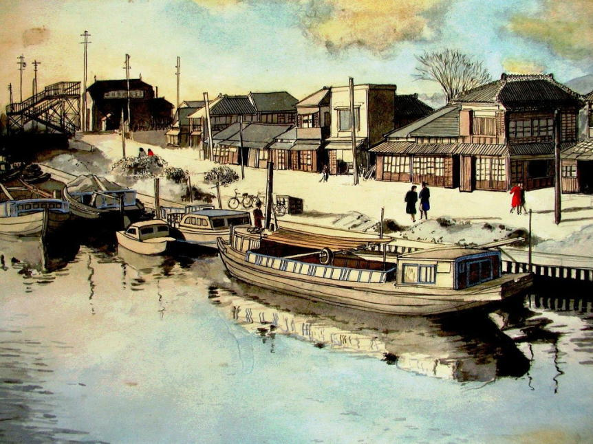
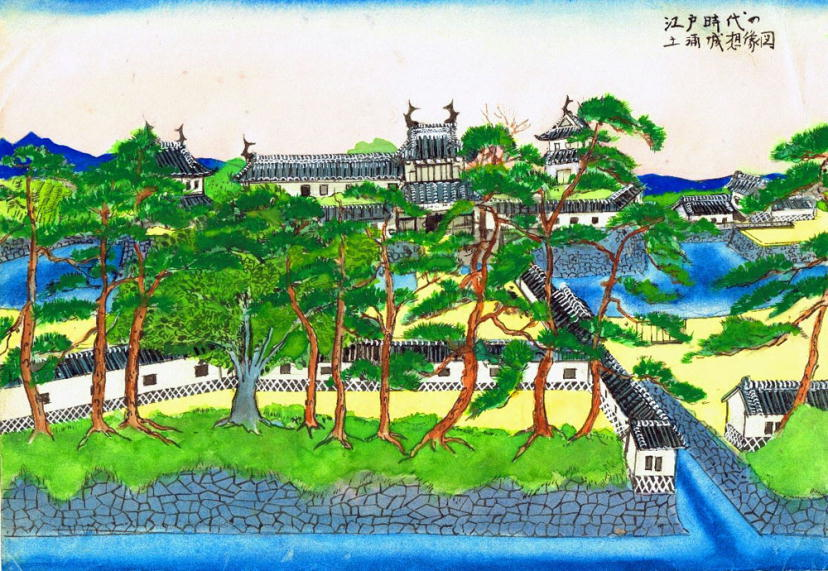
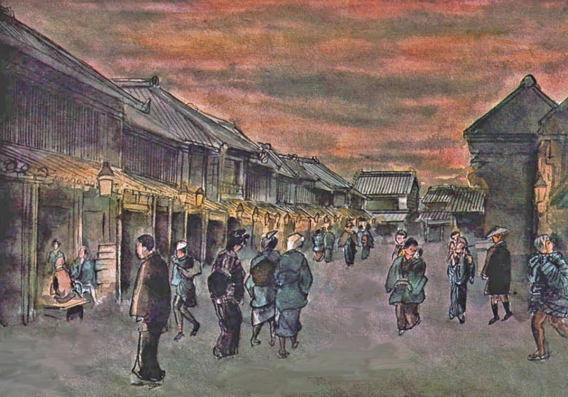
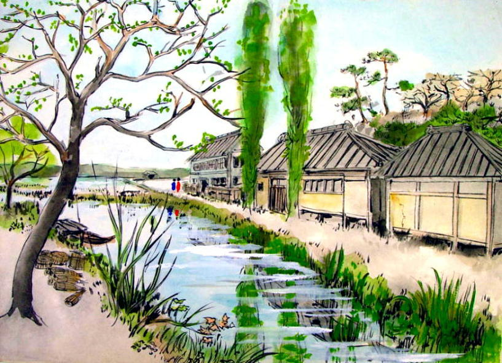
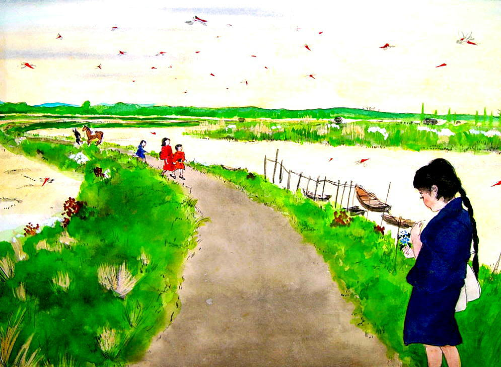
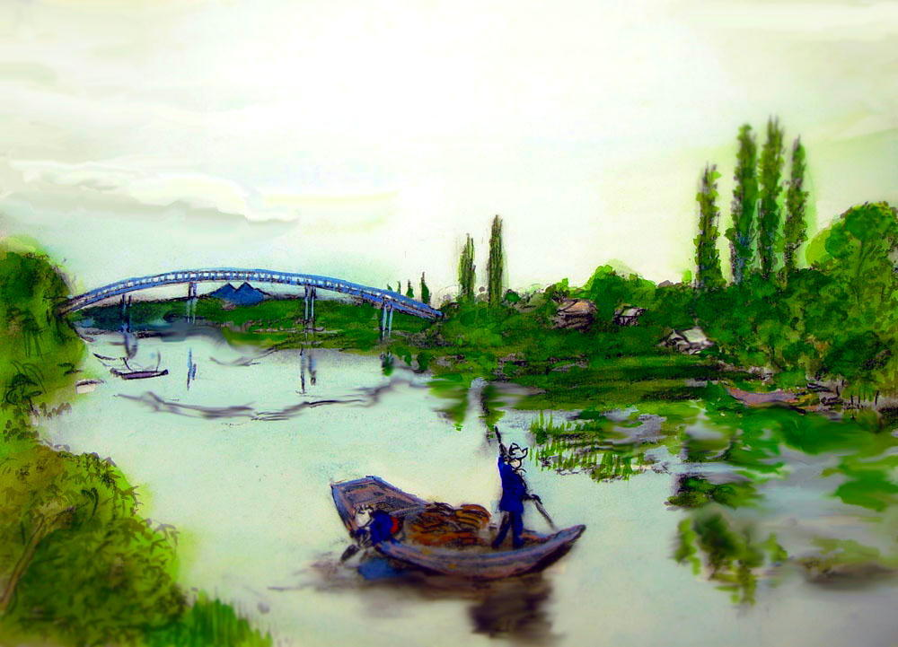
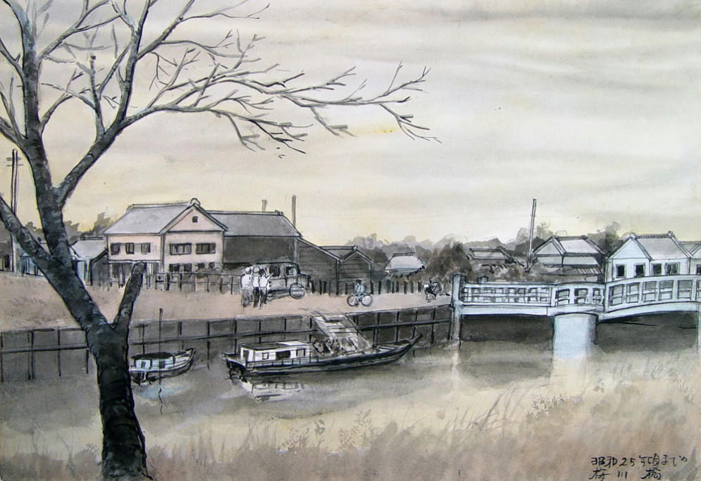

| スケッチで綴るふるさと土浦 | |
| 佐賀進 & 佐賀純一 | |
| (2015) | |
はじめに
このスケッチ集は私が描きためた絵を一冊の本にまとめたものです。スケッチに描かれている橋や露路、人々の風俗、こどもたちの遊びなどは当時を知る人々から詳しく聞いて下絵を描き、幾度か描き直して出来上がったものです。しかし多くの部分は想像によって描かれていますから、昔そのままというわけではありません。
「語り」の部分は私の息子が高木福三郎さんをはじめとする町の古老たちから聞いた話を書き留めたものですが、これらの話は庶民の歴史として貴重な資料であると同時にスケッチの鑑賞をより深く、楽しいものにしてくれるに違いありません。
水路の町・土浦と人々の暮らしが時の流れと共にどのように姿を変えていったのか、この画集が何事かを語りかけてくれれば幸いです。
佐賀 進
昭和四十九年
上梓を喜ぶ
土浦市教育長 長坂和夫
佐賀進先生は土浦うまれの土浦そだち純然たる土地っ子のお医者さんであります。おそらく明治の末から土浦には六十年以上お住まいのことと思います。その佐賀先生が、医師として多忙な日々の間隙を縫って、旧土浦町や真鍋町などのありし日のおもかげを描かれた作品の中から約二百十枚を編集し、公開出版されることになったため、わたくしも拙文をささげる一人となったのであります。
現今、社会情勢の急激な進歩にともない、日本全体が大きく変化しておりますが、土浦市にとっても、その変貌は目を見張る思いであります。かつての城下町であり、また自然の豊かな田園の町であり水郷の町であった土浦は、その中心地が桜橋を起点とする川口河岸でありました。そこに出入する高瀬船やらポンポン蒸気など、時々のかまびすしさを除けば、まことにのどかな町々の風景でありました。
しかし土浦も昭和の初期頃から、陸上の交通路が整備されるに従い、近代産業を中心とする商工業の町となり、バスやトラックをはじめ、車の目まぐるしくゆきかう町となり、近隣の人々の出入、物産の集散は交通路の澁滞、道路の横断も命がけのような状態であります。それにともなう商店街もいわゆる大厦高楼化し、住宅建築の密集化などに合せて、きのうの土浦には驚異の眼で眺る外はないでありましょう。まして明治、大正時代の土浦と比較しては、現在の土浦市民にも想像のつかない変貌であったと申せましょう。
幸い終戦後の土浦は、写真、その他の記録が豊富に残っておりますので、土浦の変化もとらえられますが、戦争以前のおもかげを伝える写真、絵画はほんとうに少なく、ただ昭和十三年の大洪水の写真が多少残されている程度で、日常の風景絵画はほとんどないといっても、過言ではありません。
このような現状の中で、明治、大正期をすごした市民の中には、変貌以前の土浦を再現してみたいとの気持をもつ方も多いと思いますが、なかなかその表現のすべが見つかりません。佐賀先生もこのような動機から、はじめはわが家の子孫のために描き残しておこうと画筆をとらえたことと思いますが、記憶を確かめるための考証、古老よりの聞きとり、文献での調査など、一枚を仕上げるまでには人には言われぬご苦労があったと思います。
このように心をこめた作品が、現在三百枚にも達しているとのことでありますが、町の発達という文化史的意義からも、その評価は極めて高く、一家庭に私蔵しておくべきではないとの識者の意見も容れて、この度その中から二百十枚を選んで、出版にふみきった次第となりました。
 その画集は主として先生の少年の頃より青年に及ぶ時代、すなわち大正の初期より昭和の前半までの風俗、風景が多いようであります。その中には、往来で遊ぶ子どもたちの風景、正月に各家を廻る遊芸人の風俗なども見られまして、そこはかとない詩情もただよい、見る人に懐旧の情をかりたてずにはおられません。また明治時代の建築物なども、古老の記憶を何人からも聞きただし、修正に修正を重ねた貴重な作品も含まれております。明治の初期に開校した香澄小学校の校門（現在の裁判所前にあった女子小学校）や、土浦二高の前身である高等女学校が初めて開設された前川町の校舎（現在星電機店のあと）など、この一例でまことに得がたい文化史的資料でありましょう。その他、かつての桜橋の再現や、川口川にかかっていた朝日橋（現在の小網屋前）の上を通る祇園祭の山車とか、川口川の水神祭など、土浦の風俗を語る大切な郷土の資料でありましょう。
その画集は主として先生の少年の頃より青年に及ぶ時代、すなわち大正の初期より昭和の前半までの風俗、風景が多いようであります。その中には、往来で遊ぶ子どもたちの風景、正月に各家を廻る遊芸人の風俗なども見られまして、そこはかとない詩情もただよい、見る人に懐旧の情をかりたてずにはおられません。また明治時代の建築物なども、古老の記憶を何人からも聞きただし、修正に修正を重ねた貴重な作品も含まれております。明治の初期に開校した香澄小学校の校門（現在の裁判所前にあった女子小学校）や、土浦二高の前身である高等女学校が初めて開設された前川町の校舎（現在星電機店のあと）など、この一例でまことに得がたい文化史的資料でありましょう。その他、かつての桜橋の再現や、川口川にかかっていた朝日橋（現在の小網屋前）の上を通る祇園祭の山車とか、川口川の水神祭など、土浦の風俗を語る大切な郷土の資料でありましょう。
これらの作品集は、先生も決して芸術的意図をもって描いたものではないと、おっしゃられますが、土浦町のありし日のおもかげを伝えようとする考証が中心の作品としてみるとき、その記憶の確かさ、表現の適確さなど、土浦文化史の資料として、かけがいのない貴重なものであります。いま、この貴重な作品集を出版されようとする先生の御決意に対し、あらためて敬意を表するとともに、市民のみなさまと共に、この御労作を手にすることができる喜びを伝えて、先生に対し、深い感謝を申し上げる次第であります。
実は佐賀先生と私とは旧制土浦中学の同窓生であります。同窓の中には市長をはじめとして、各方面に活躍されている方々が多いのでありますが、教育に関係する立場より、このように文化面で貢献される同窓が生れたことは誠に嬉しく、また土浦市の文化資料に貴重な一巻を加えられましたことを心から御喜び申し上げます。
推薦のことば
土浦市史編纂委員
土浦市文化財調査委員
永山 正
佐賀進君、この度十年余に亘って描き続けて来た大正、明治期のふるさとの姿を公にされることとなり、私に推薦のことばを求められた。君は医師が本職で、失礼ながら、私も君がこのような趣味と才能の持主であることは、今が今まで想像もしていなかっただけに、作品を見せていただいた瞬間、全くそのすばらしさと、その着想に驚嘆したのであった。
私は絵は全くの素人で、批評の資格はないが、市史の編纂を進めている私として、これだけは是非欲しいと思っていた、大正から昭和にかけての故郷の姿が、余すところなく画面に浮び上っているのに、私の目は釘付けされてしまった。しかも写真にも勝る正確な描写は、古い記憶をたどられ、不正確なところは、土地の古老に尋ねて正確を期したとのことであるが、歴史画としてもほんとうに立派なものである。
最近、土浦も開発の大波に、川は埋められ、台地は削りとられ、昔の面影は日一日失なわれてゆく現在、君の今回の労作は誠に貴重なもので、未発表のまま筐底に埋めて置くには余りにももったいないと思っていたが、この画集が一冊子として上梓されると聞き、心から喜びに堪えない。
市民各位、並びにこの方面に趣味をおもちの皆さん、他に類例のないこの一冊をお備えなさって、過ぎ去ったふるさと土浦の姿を思い浮べるよすがとしていただければ幸いである。
土浦の水路
土浦城想像復元図
土浦は、中城と東崎を中心として平安時代の末期から徐々に発達して来た町であるが、城下町としての体裁を整えたのは、徳川時代に入ってからである。関ケ原の戦のすぐあと松平信一が、土浦城初代の殿様として移って来た。知行は三万五千石、彼は慶長九年（一六〇四年）水戸街道を建設し、江戸・土浦・水戸間の交通を開いた。
この街道が出来たので、このまわりに市街地が発達し、商人が住みつくようになった。
絵の東西に見える二つの櫓が建てられたのは、二代目の殿様西尾忠永の時で、これは二代将軍秀忠が日光参詣の帰り、土浦へ立ち寄ると言う事になり、城の体裁を整えるという理由で建設されたものである。
正面の太鼓櫓は、三代目の殿様、朽木稙綱が作ったもので、関東地方の城廊建築で残っている本物はこれだけであり、非常に貴重な文化財である。
朽木氏は二代続き、そのあとに、土屋氏が移って来た。土屋氏はもと武田氏の有力な家臣で、武田氏滅亡の時、天目山で奮戦した土屋昌恒の一子平八郎が、家康に見い出され譜代大名として、取り立てられた殿様である。
土屋氏は途中五年程の空白があったものの明治になるまで、ずっと土浦の藩主であった。
江戸時代の土浦
桜橋は慶長十八年、水戸街道の建設に伴って作られたものである。この橋が出来たお陰で、中城と東崎が始めて陸続きになった。
橋の左上に見えるのが土浦城で、コの字型に入り込んだ石垣が見える。これが城廊建築として有名な土浦城の搦手門である。一般に搦手門と大手門は反対の方向に作られるのだが、土浦城の場合は、大手門も搦手門も両方ともに東の方向を向いている。
これは霞ヶ浦という水の利を活用した築城方法を取り入れたためで、危急の際搦手門から船で湖へ逃げられるように設計されている。お城と川をはさんで発達している家並は、武家屋敷で、右方の堀に取り巻かれている大きな建築物は龍泉寺、そのうしろが鷹匠町である。鷹匠町は、内西町・外西町などと共に、朽木氏の頃武士の町として発達した。築地町は土屋数直の時足軽の町として作った埋め立て地であった。
これに対して、田宿・中城・本町・大町・仲町・田町などは町人の町である。この絵でも分る通り、武士の町と町人の町は、広い堀で隔てられ、また要所要所には門があって、厳重な防備態勢がとられていた。また真鍋と土浦の間には、「馬出し」というＳ字型の要害があり、田宿には「ます型」という隘路があった。それから町の周辺には、浄真寺、神龍寺・等覚寺・東光寺、常福寺などたくさんの寺があるが、これも城と町の防備を考慮した上の都市計画の一部である。
江戸時代の土浦の人口はどの程度だったかというと、八代将軍吉宗の時全国的に人口調査を実施したが、この時の土浦の人口は二千二百八十六人であった。しかしこれは町人だけの数で、武士とその家族を入れると、恐らく五千人にはなっていたろうと推定されている。
土浦の産業は、徳川期以前はほとんど自給自足の農業と漁業であった。水戸街道が開けてからは、商業も大いに振興した。特に土浦は水に恵まれていたために水運が発達し、利根川が徳川初期に江戸湾から銚子口の方へ流路改善されてからは、川口川から霞ヶ浦を渡り、利根川を逆上って関宿に至り、関宿から江戸川を下って江戸湾へ入る水運が開けた。このため、川口川には高瀬舟が舳艫を接して行きかい、桜川を通って大町の方にも盛んに舟が入っていたのである。
江戸時代の産業で忘れてならないのは醤油製造業である。当時土浦の醤油の名は天下に有名であった。幕府御用の醤油は土浦で製造され、川口で積み込まれて江戸に運ばれていた。現在も料亭などでは醤油のことをむらさきと呼んでいるが、これは筑波山を指しているのだともいわれている。
お城跡の郡役所
明治二年版籍奉還があり、明治四年には、廃藩置県が実施されて、封建制度は名実共に終りを告げた。土浦は一時、土浦県となったが、わずか数ヶ月で新治県に編入され、新治県庁が本丸に置かれた。しかし明治八年、新治県は水戸にあった茨城県と合併され、今日の茨城県が出来たのである。
この時、土浦支庁が置かれたが、間もなく廃止されて、新治郡役所ができ、土浦はその下に入ることになった。
この絵にある木造の建物は、新治郡役所だが、無論昔の本丸ではなく、本丸は明治十七年の大火の際、東櫓と共に焼けてしまってこの建物はこのあとに建てられたものである。
大鼓櫓の左に見える旗のようなものは、天気予報掲示のための旗である。
水戸街道
水戸街道は慶長九年（一六〇四年）に建設され、それから九年後の慶長十八年になって桜橋・簀子橋・銭亀橋が作られた。是によって、土浦は周辺の村々とはじめて陸路で結ばれ、人馬の従来が飛躍的に増大していった。
水戸街道が作られる前にも、鎌倉幕府が建設した鎌倉街道が、現在の天川団地付近から宍塚、佐野子を抜け、土浦二高の裏を通って土浦二中わきの鎌倉坂を上り、赤池、中貫へと通じていたが、この街道は巾も狭く橋もろくになかったので、産業の発達にはあまり貢献しなかったらしい。
この絵は真鍋台から赤池へ向うあたりの光景を描いたもので、昭和三十年代まではこの通り交通量も極めて少なかった。両側の松並木にはリスなどが巣を作り、風が吹くと亭々たる松の大木がざわざわと騒いで、とても寂しかったものである。
 鷲の宮神社
鷲の宮神社
東崎の氏神様は鷲の宮神社で、麻を作る百姓の神様である。東崎は、平安時代の末期に半農半漁の集落として発達した。東崎という地名は、霞ヶ浦にずっと突き出した東の方のみさきという意味である。
鷲の宮神社には松の木が多いが、これは漁師が霞ヶ浦に出て、帰りの方向を見定めるのに役立ったと伝えられている。
つい二十年ほど前までは、神社から霞ヶ浦までほとんど人家がなく、常磐線の線路の彼方の帆曳船や出島の森がはっきりと見えた。
田中八幡様
田中の八幡様は中城の氏神様で、軍の神様である。中城は、平安時代の中期に、この地方一帯に勢力を張っていた平家一門の大椽氏が支配下の農民を住わせ、豪族屋敷村の形態をとって発達したのだと伝えられている。
村の住民は、普段は百姓の生活をしていたが、事があると大椽氏の指揮の下に外敵に当った、その時の軍の守護神が、この八幡様であった。長い歴史をもつこの八幡様も現在は参詣人もほとんどなく、狛犬が寥々たる境内にひっそりと立っているばかりである。
この絵の右手に見える職人は鋳掛屋で、鉄や銅器の破損を修理して歩く旅職人である。天秤棒でふいごと諸道具をかつぎ、その棒のとどく範囲内で、どこでも自由に営業出来る権利をもっていた。夫婦連れで歩く事を「いかけ」というほど、彼らは妻子を伴い旅から旅をし、年に一、二度はきまった村々を訪ね、なべ、かまなどの修理をしたので、人々は、彼らの来るまで、破れた道具を大切に保存していた。
昭和期になっても彼らは盛んに活躍していたが、戦後アルミの道具が一般に使用されるようになってからは、ぱったりと姿を見せなくなってしまった。
土浦駅俯瞰図
語り 久松弘
私が土浦駅に改札係となって赴任したのは大正十四年、十八才の時ですがね。上の絵と大体同じような光景でした。この駅の建物は明治二十九年に建造されたんですが、それからずっと大正年間もこのままで、昭和十一年に今のような形に改築されたんですよ。駅のホームも、ブリッジも、丁度こんな風でした。
左上の方に転車台が描いてあるけれども、この当時は手回しでね。十人余りの男らが力を合せてぐるっと回したもんですよ。電動式になったのは昭和元年か二年の事でしょう。その下に二軒家が並んでいるけれども、ここには貨物係主任と機関区の係の人が住んでいました。
しかしこの建物は昭和二年に常南電車が開通する時、取払われて、今は三好町の桜川べりに移されて、今もこのまま残ってます。
それから絵の下の貨物引き込み線の所に、井戸が見えるでしょう。これはとても水の豊富な井戸でね。一年中きれいな水がこんこんと湧いていたもんです。この井戸ではいつも倉方という荷扱使がめしを炊いていました。倉方は十四、五人いて、重い荷物の積み下しをする仕事をする人々ですが、腹が減ると米をといで、飯盒でめしを炊いていました。そうそう、倉方の中で想い出に残っているのは、大貫さんという力持ちで、この人は駅を辞めてからは後藤病院に三十年も勤めていましたが、若い時はとても力があって、みんなに「関取り」と呼ばれていました。あっちこっちの町や村で草角力があるときくと、出かけていって賞を取って来るんです。鼻の下に髭なんぞはやして、体はそう大きくないんですがね。愉快な人でした。それから、右下の方に荷馬車の絵が描いてあるけれども、ここは当時も貨物の積み下しの場所でね。ここにはいつも三十台余りの荷馬車がごった返していました。何しろ登録していた馬車曳きの数は六十人以上もあったんですから、まあ常時出入りしているのはその半分位でしたが、それにしても大変な数で、馬糞なんかが山のようになってね、風が吹くとほこりといっしょに馬糞が飛ぶ、雨が降れば泥んこになって、荷物を積んだ車が泥にうんのまって動けなくなって、三人も五人もが後ろからあと押ししたもんです。荷馬車がなくなったのは終戦後ですよ。市内にもずいぶんと馬車が歩いていました。右端の一角は、いま協和銀行が建っていますけれど、このころは秋本常五郎さんの屋敷で、この人は倉庫業をやっていました。絵にはありませんが、この屋敷の裏にいく棟も倉庫が建っていました。
駅前広場は今よりもずっと狭くて、人力車のたて場があってね、この絵でも真中へんに小さな小屋があるけれども、ここにはいつも十人余りの車夫が詰めていました。汽車が着くと二十台もの人力車がずらっと並んでね、なかなか壮観でしたよ。
真中の丸い屋根の大きな家が松葉館、この旅館は明治いく年かに常総線が開通する時に、取手にあった旅館が立ち退きを命ぜられて解体され、それを土浦へ持って来て建て直したものなんです。ここの利用者は、主に阿見の海軍さんでしたね。
松葉館の左隣に見える細長い建物は交番で、警官は夜も昼も一人、主に駅構内の取締りをやっていました。右隣りは土浦自動車があり、その隣は影山さんという駄菓子屋さん、その次が、なにわ屋という行商宿、それから道を挟んで、魚留という大きい魚屋さんがありました。ここは今、つかさデパートになっています。松葉館の一角と向いの秋本さんの屋敷の部分は戦争中に強制疎開させられましたが、これは駅が爆撃された時に町の被害を出来るだけ少なくしようという配慮からでしょう。
さて、転車台の右の方に見えるのが製氷会社で、これも土浦の人ならみんなよく知ってる筈です。製氷会社の下の窓の三つ見える建物は亀山さんといって、練炭製造業。この近くに風呂屋もありました。
右上の池は三好ボタン工場の養魚場で、回りにはつつじが植っていました。その下の二棟の大きい建物は新治病院。院長先生は最近お亡くなりになった来栖光一先生で、この当時は土浦で一番大きい総合病院でした。霞ヶ浦国立病院は海軍専用の病院で、一般の人はかかれませんでしたからね。市民に開放されたのは戦後です。
まあこう見てみると、ずいぶん今とはちがってしまいましたがね。昔は昔の良さがありました。汽車が着くと表通りを十台余りの人力車があわてて、たったっと走ってきたりするのも懐しい思い出だし、それに駅のホームからは霞ヶ浦が見えたんです。満々と風を孕んだ白帆が何十そうと湖の上に浮んでね。夕日が落ちる時などは特に何とも言えず美しい光景でしたよ。
大正時代の土浦駅
大正九年、阿見に海軍航空隊ができてからは駅の乗降客が飛躍的に多くなり、街も大いに賑わうようになった。駅前には客待ちの人力車がずらりと並び、夕方になると町の宿屋の番頭が屋号入りの提灯を下げて、お客を出迎に出ていた。
上の絵にあるように、幼児の白前掛け、小学生の袴姿は当時の風俗であった。
海軍の兵士をジョンベラといい、手に下げているのは大正時代に大いに流行したバスケットである。兵士は上官に会うと直立不動の姿勢をとり、敬礼をするのが軍の規律であった。ところが駅の待合室の中はうす暗く、外から入ってくると、駅員の帽子をかぶった姿が丁度士官のように見えるために、兵士が駅員に敬礼する事もしばしばあったという 。
駅前は砂利が敷いてあったが、冬、風が吹くとほこりが舞い上がり、鼻や口の中までジャリジャリになってしまった。
大正時代の駅前通り
右手の平家建は山本弁当屋で、現在の丸井デパート附近。柳の木の前の長椅子に座ってキセルをふかしている男が見えるが、ここは北条行きのトテ馬車の待合所であった。現在はここからヨーカ堂の前を通って東崎へ抜ける通路が出来ているが、当時はその道はなく家並も大和町のごく通りに面したところだけであり、裏通りは湿地帯で、まこもが一面に生えていた。
ちなみに、友部、水戸間に常盤線が開通したのは、明治二十八年で、東京へ出るのには友部から水戸線に乗り、小山回りで行かなければならなかった。しかし翌二十九年には、田端、土浦間が直通になり、土浦は東京と始めて結びついた。
大和町ができたのは、明治三十年の事である。
昭和初期の駅前通り
右側の二階建ては、現在の協和銀行が建っている場所であるが、この当時は二つのバス会社が同居していた。多田自動車と霞自動車である。多田自動車は、土浦で最初の市内バスを運行させた会社で、しかも運転手第一号は女性であった。隣りの会社は霞自動車であり、この会社は出島村大和田村までの権利を持っていた。けれどもこの当時のバスは現在のものと比べると恐ろしく小さく、この絵のバスもせいぜい十五人位しか乗れず、その前には外車の普通車をそのまま使って、８人乗りバスなどと称し、お客が多い時はステップなどにまでお客がぶら下っていたのである。
向い側には金昇商会が取手行きのバスを運行し、その隣りに土浦自動車があった。
道路の真中にほろ型外車が見えるが、これは憲兵の自動車で、市中に於ける兵隊の行状を監視しているところである。
 昭和十五年頃の祗園町通り
昭和十五年頃の祗園町通り
祗園町は桜橋から朝日橋まで、つまり保立食堂から、小網屋川口店までの川口川を埋め立てて作られた町である。それまでは川添いにバラックが軒を連ね、八百屋、食料品屋、ハンコ屋、古本屋、一ぱい屋、古着屋、下駄屋などが店を開いていた。ところが、バラックは町の美観をそこねる上に、街路を狭め、商業の町として発展する上で著しく障害となっているという意見が次第に強くなり、とうとう昭和七年川口川埋め立てが決定した。川口川を埋め立てる事は、水郷の町としての土浦の面目を失なわせると強く反対を唱えた人々もあったのだが、時の流れには勝てず、昭和十年三月埋め立て地の上に、土浦市営の公益市場が完成し、町名は一般からの応募によって東祗園町と決った。しかしいつの頃からか、人々は東祗園町とは言わず、祗園町と呼ぶようになった。
この絵の右側に見えるのが、新しく誕生した祗園町の町並みであり、当時は他の町の商店と比べると、とてもモダンで明るい店々であったために、お客の足は中城、本町などの老舗から新しい商店街へと流れるようになった。
祗園町の向いには、黒い塀を廻した繭市場がいくつも軒を並んでいたが、この絵の一番左端の尖塔のある立派な建物は常盤銀行で、後に田中川魚屋になり、更に関東銀行に変身したが、現在では三橋商店になっている。
土浦町鳥瞰の図その一
語り 高木福三郎
今の若い人にはとても想像出来ないでしょうが、土浦って町は実に縦横に水路が発達していたんですよ。一番上に見えるのが、桜橋、名前だけバス停として残っているけれども、保立さんの前にあったんです。その次が祗園橋、その次が朝日橋ですね。朝日橋ってのはこの絵にある通り、両側から盛り出して、川幅を少しつめっちゃったんです。そうして橋を高くしたんですね。だからこの橋は登り勾配になっていました。橋を高くした理由は、船が下を通れるようにする為だったんですよ。この絵にもずいぶん小舟が見えるけれども、当時はどこの家でも一ぱいぐらいは船を持ってました。ちょっと用を足したり、品物を運ぶのにも舟はどうしても必要だったんです。
他の絵を見ても分るでしょうが、大町だの中城、築地、田町、そんなところへもずっと舟に乗ったまま行けたんですから。こどもらは舟にのって霞ヶ浦や桜川へ遊びに行ったもんです。この絵で祗園橋から左へ入る水路が見えるでしょう、これが今の高島屋から職業安定所前をずーと通って八間道路へ通じる道路で、昔はきれいな水が流れていて、大町まで通じていました。左下の方に見える大きな池は、藤館という旅館のうしろにあった池で、今の魚捨の裏に当りますね。しかし、なぜこの池があるかというと、もともとここらは湿地帯で、大和町あたりや、今の駅前通りも、ちょっと水が出るとぐしょぐしょになって通れたもんじゃなかった。だからこのあたりを高くするために、この池に当るところを掘って、その土を表通りの盛り土に使ったんですよ。今でこそトラックで山の中からでも、どこからでも土を運んでこられるようになりましたが、昔はちょっとした土木工事をやるのにも、大変なもので、運搬手段といったって荷馬車位しかなかったんだから、遠くから土を運んでくるなんて事は出来なかったんですね。だから鉄道を引くにしたって、その盛り土をどうしたかっていえば、すぐ側に穴を堀って、その土を使って盛り土をしたんです。だからほんの少し前まで、鉄道の霞ヶ浦寄りにはずうっといくつも池が並んでいたでしょう。あとからあの池は水産試験場の養魚場になりましたがね、もともとは鉄道を引くための盛り土を堀った穴ですよ。次頁の絵がちょうどその有様をよく示してます。
さてと、一番右の下の大きな家は、荒巻っていう人の事務所で、この人が閘門橋の建設を請け負ったんです。その下請けを私の父親がしたんですがね。そのあとこの建物は旅館になりました。東郷旅館という名前でした。その上に見える赤いレンガ作りの建物は三輪銀行で、その右手の長い建物は三輪銀行の倉庫です。ここは私が十九位の時に請負って建てたんですが、土盤が悪くて困ったもんです。下がやわらかですからね。ふわふわしてるんですよ。倉庫は貸し倉庫で、米だの麦をあずかってたんですね、あずけるのはほとんど米屋でしたが、米屋は銀行から金を借りて、百姓からしこたま米を買い込む、そして倉庫に米を入れておいて、米相場が上ったと見るとどっと売りに出す。安ければ中にため込んでおくという具合で、いつの時代にも、儲けにさとい人間はいたもんです。
左の上の端に見える倉庫は、豊島さんで、まゆの取引き所です。この附近の農家では盛んに蚕をかっていましたからね。それをここで集めて取引きをして、買取ったあと乾燥をして殺虫をして、それを信州へ送ったんです。豊島さんの他にも、岡谷、山十、片倉とか、いくらも絹糸商はありましたね。海老原さん、楢戸さんなどもそうです。
右端の煙突は味噌屋のもんですね。倉庫は緒方穀屋の倉庫でしょう。他にもいくらも目立つ家はありますが、ここじゃ語りきれません。
土浦町鳥瞰の図その二
語り 河野芳明
この絵は川口と東崎、大和町の一部が描いてあるけれども、今は全く変ってしまったね。何しろ川口川は駐車場、手前には西友だの、ヨーカ堂が出来て、上の極楽田んぼはすっかり家でうまってしまったからな。しかしこの当時は川口は土浦でもずいぶん栄えた町だったよ。鉄道が出来るまでは川口川が土浦の入口だったからね。駅がない時代は、米を運ぶのにも、出島や銚子の方から荷物を買入れるのにも川口を通ったわけだ。東京までも船で通ったんだよ。霞ヶ浦を抜けて佐原へ出て、佐原から横利根という堀割りを通って、東京へ出たんだ。だから鉄道がない時代には東京とこのあたりを往復する船頭がいくらもいた。
ところで真中に見える橋は八千代橋で、この橋は大正天皇が御即位した時に記念として建造した橋で、天皇家が千代に八千代に栄えますようにという祈りをこめて名前をつけたんだ。だから八千代橋は他の橋と比べるとずっと新しい。この橋の手前の左側は、今は広い駐車場になってるけれども、ここは原田さんという大きな材木屋があって、大正始めの大火事で焼けてしまった。左側は池重さんでここら一帯の土地を全部持っていた。池重さんは質屋さんでね、真中の二階建てがそうだな。ま、ちょっとこの絵では実物より大きいようだけども、この家の裏手とそれから八千代橋の袂に一軒ずつ小さな小料理屋があって、芸者だの酌婦がいたっけ。そこらを通ると三味線の音だの、酔った男や女の声がよく聞こえたもんだ。池重質店の前には、お塩倉があった。この絵には見えないけれども、土屋藩の時代からここで土浦の塩を貯蔵していたんだね。海から運んで来た塩をここに納めておいたんだろうね。当時は塩はどこからでも手に入るってわけじゃあない。だからお塩倉というのはとても大切なものだったんだね。明治になってから色川三郎兵衛に引きつがれたけども、鉄道が引かれていくらでも塩が手に入るようになって、お塩倉の存在価値はなくなってしまったわけだ。だから私が生れた頃はもうお塩倉はなかった。名前だけでね。
さて、川を狭んで右の端には柳橋が見えるだろう。その左側から順にいくとね、柳橋の袂の家が柳屋と言って、雑貨、酒等を商っていた。その隣は広原さんと言って、煮干し屋さん。その次は飯田屋の長屋が二軒あって、小さい商い屋と山田さんと言う八百屋さんがあった。その次は浅野という煮干し屋、その次も佃屋という煮干し屋、その佃屋さんの半分に小さいだんご屋があった。その隣がこが屋と言って、当時は川口で三本の指に並ぶ川魚の問屋だった。今はなくなって、布川屋さんというお茶っ葉屋さんになっているがね。それから阿久津さんがあるが、昔はこの家もみんながこが屋さんだった。その隣が最上屋という米穀問屋で、この絵でも後ろにいくつもの倉庫があるだろう？ちょっと大きすぎるようだけどもね。裏の方は長屋があった。その隣が八千代橋の前だが、床屋さんがあった。その次が布川屋さん。昔は瀬戸物を売っていた。その隣が日野屋という酒屋さんだった。その次が今は川口の会議所になってるが、戦前には、蛯貝さんが下宿屋を開いていた。ここには大勢下宿してたな。その隣は日高屋さんというガラス屋さんがあった。そして一番左端の三階建ての大きな家が土浦館だ。ここはとても繁盛した宿屋で、三味線屋などという人もいたが、酌婦も何人もいて、土浦観光の客や船頭などが出入りしていた。霞ヶ浦から船で川口に入ってくると、この三階建ての建物がとても立派に目立ったもんだよ。今はすっかり取壊されて、駐車場になってしまったが、これも時の流れというもんかなあ。
川口町その一 川口の繁栄
語り 河野芳明
この前の絵でも説明したけども、明治、大正時代は川口は土浦じゅうでいちばん活気にあふれた町だったよ。中城だの大町、田宿、本町なんかにはでっかい商店があって金持連中がそろってたけど、威勢がいいのじゃ川口がいちばんだった。漁師町だから気の荒い若い衆がたくさんいて、水神祭とか祗園祭の時なんかは、ここらの店の血気盛んな若い衆が大暴れしたもんだ。
ところで、この絵を順ぐりに見てくと、左下の東崎川から川口川へ出るそこにかかってたのが柳橋だ。その手前が広原さんで、広原長屋ってのはこの絵の左隅に見える家だ。
柳橋を渡って突き当りの家は塚半さんで、乾物を商ってた。その左隣りの二階屋は武蔵屋分店で川魚屋さん、この塚半と武蔵屋分店の間の露路を入ってくと「ゆたか」っていう飲み屋があって、ここには漁師だの町の者が、ずいぶん通ったもんだ。
塚半の右隣りの家は武蔵屋本店で、ここは当時川口屈指の川魚問屋だった。その裏の方にちいさい家が二、三軒見えっけども、これは武蔵屋の長屋だな。その横に見えんのは川魚を乾す干場だろう。武蔵屋の次が浜野屋さん、その次が関の屋という床屋、その向うにやき芋屋があった。芋屋の隣りの小っさな家は「お船番」という番小屋で、土屋様の時代に川口川へ出入りする船を見張ってたわけだ。このお船番は昔は二の番と呼ばれてて、一の番のお船番は今の鉄橋の向うのとっ先の方にあったそうだ。お船番は人力車引きをやってたな。駅の前に「たて場」があったから、あそこで毎日客待ちをしてたんだ。
お船番の次が大形屋、この店はまず土浦第一の川魚屋だったな。わかさぎだのゴロ、エビの煮干しを扱ってたが小売りはやらないで、栃木、群馬の方へ卸していた。昔、りんご箱ってのがあったろう。あれに百も二百もぎっしりつめて、毎日馬車なんかで運んでたんだ。何しろその頃は流通機構なんてもんは発達してなかったから、山の方の人間は魚っていうと煮干しを食ったんだな。
大形屋の次が瀬古沢さんで、ここはやっぱり川魚屋さん、生き魚を扱っててね、裏の方に大きい生簀を持ってて、うなぎなんかを沢山かっていた。
その隣りはつる屋、ここは何をやってたっけなあ？その次は「だめ屋」。だめ屋なんて変な名前だが、ここのおやじが頑固者で、何を頼んでもだめだ、だめだ、なんて言ってたもんだから、いつの間にかだめ屋なんて屋号がくっついたって話だよ。この店では漁師相手に、にしんだのがんもどきをしょっぱく煮たのを置いといて、入口に縄のれんがあって、酒も出してたっけな。気安い、いい店だった。
その隣りは池田新聞屋で、この頃から朝日新聞を取り扱ってたよ。
その向うは「附け木屋」。これは説明しないと分んないかな？今も幕の内なんてゆう弁当箱があるだろう。あの箱は松の皮でこさえてあるんだが、昔はあれを経木って呼んでた。附け木屋ではこの経木を長さ三寸、巾は二寸に切って、その先に硫黄を塗って、十枚ばかりを一束にして売ってた。何に使うかってゆうと、マッチはこの頃貴重品でね、なるべく使わないようにして、火鉢の底なんかにちっぽけな火種があれば、それに附け木の一かけらをおっかいて、それに火をくっつけたんだ。それからこの附け木の上に味噌をのせて火であぶると、松の匂いと味噌のこげる匂いが漂よってなあ、うまかったもんだよ。
附け木屋の向うはちっぽけな踏み切りの番小屋があって、線路を越えた先には、日高屋とか三、四軒の家があるきりだった。
附け木屋からちょっと離れたうしろ方に見える小さな家は中島さんていう船頭の家で、閘門の下に止ってるような高瀬船に乗って、しょっちゅう東京の方へ船で通ってたっけ。
絵の真中あたりの煙突のある家は風呂屋で、この頃は風呂持ちなんてあんまり居なかったから、東崎の人はみんな入りに行ったもんだ。入浴料は大正の十年ごろで、五銭。米が二、三合は買えたな。だから今の風呂屋は安いよ。
川っぷちでむしろをひいて仕事してるのは、わかさぎ焼きだが、これは長さ三尺、巾八寸ぐらいの火鉢の上で朝から夕方まで焼いてたよ。夏はいいが、冬は大変な仕事だ。吹き晒しの中で、それこそ顔も体も氷のように冷えちまう。若い娘がわかさぎを串に通して、おばあさんなんかがうちわでパタパタあおいでたが、近くを通るといい匂いがしたもんだ。
ここらあたりの川は、夕方になると小伝馬船が五艘も十艘も泊って、水上生活の女やこどもらが桟橋を渡って町へ出てきた。船の上はむしろなんかがかぶせてあって、夜んなると中の灯りがちらちら見えてなあ。夜が明けると女房が船の上で飯をたく煙が川面に漂って、いかにも水郷だなあってゆう感じがしたっけよ。
川口町その二 山車のゆく光景
土浦の祗園祭は明治の中ごろから盛んになってきたが、芸者以外の一般の女性が盛装して山車の列に加わるようになったのは、戦後のことである。当時は自動車は極めて少なかったから、山車は思う存分町の中をねり歩くことができた。川口の山車は最も威勢がよく、中城の山車は贅がこらしてあった。
若者たちは言うに及ばず、子供たちも化粧をし、揃いのゆかたに身を包んで、かん高い声を張りあげながら、終日綱を引いたものだ。世話人はゆかたの上に絽の羽織を着、かんかん帽子をかぶり、手にはこうもり傘を持って、雪駄の草履に白足袋という格好で、列の先頭を歩いていた。獅子も大人が二人でかつぐような巨大なものもあれば、子供の獅子もあった。紅白の幔幕を張りめぐらした各町内の事務所には、赤や黄色の甘い水が用意してあって、それが渇いたのどにしみるほどうまかった。昼ごはんは、おかあさん達が、にぎりめしをたき出して持ってきてくれた。
三日間の祭の最後の夜、本町の山春の四ッ角には四方から山車が集まり、夜のふけるまで賑やかな囃子が鳴り渡った。狐やおかめ、ひょっとこなどが次々と舞台に現われては踊りを競い、山車の上では爆竹と花火が夜空をこがした。
 川口町その三 渡辺廻漕店遠望
川口町その三 渡辺廻漕店遠望
現在はここも駐車場と化してしまったが、大正時代にはこの川で泳ぐ事も出来た。今市役所の中央出張所のある川の底には湧き水があって、白魚がたくさん群れていたものである。正面の船着場は渡辺廻漕店で、今は三平鮨になっているが、この頃は米を積んだ船が発着し、霞ヶ浦遊覧の船としては、江戸崎丸、遊覧丸、富貴丸などがあった。これらの船は出島や美浦村の方を回って歩いたのだが、湖の底が浅いために直接岸に着けられず、お客は艀に乗り移って陸に上った。
霞ヶ浦秋吹く風に日は落ちて
ゆくてに暮るる信田の浮島
高橋刀畔
川口町その四 八千代橋
八千代橋は、大正天皇の御即位式を記念して、現在の西友ストアーと、土浦館の間に架けられた橋である。
川と橋、そこを行き交う大小の船は、当時の土浦を象徴する風物であった。
詩人の窪田空穂はこの当時の土浦の光景を次のように詠んでいる。
この町をつらぬく堀江の橋行けば
上の橋見え下の橋見ゆ
真白なる堀江に沿える片側まち
人ゆくまれに遠き柳見ゆ
川口町その五 農業倉庫
川を挟んだ向う岸に、大きな倉が見えるが、ここには今、イトーヨーカ堂が建っている。江戸から明治初年にかけては、ここに土浦藩のお塩倉があったが、明治二十八年に常盤線が開通し、塩がた易く手に入るようになってからは、お塩倉はその存在意義を失ない、池重質店の倉庫となったが、昭和四年、藤沢勘兵衛はここに農業倉庫を建て、浅野弥衛門がその長になった。上の図は倉庫を建築中の大工たちが、忙しく立ち働いている光景を描いたものである。この倉庫は小作米を収めると共に、近郷の農家の米をも預かっていたが、後に農業会に合併され、米の他、大豆、麦など多くの殻物が保存されるようになった。
戦後農業会の解散と共に、倉庫も農業協同組合の管轄に移されたが、今はその倉庫も無くなった。
通運丸
語り 保立俊一
いまでこそ魚を食べるのは何でもない事ですがね、明治、大正の時代には、新鮮な魚というのはめったに食べられませんでした。
というのも冷凍法はないし、交通の便も悪かったですからね。だから海のない栃木とか群馬の人々は、みんな塩づけとか干魚ぐらいしか食べられなかったんですよ。
土浦だってそれほど海に近いわけじゃない。だから新鮮な魚はそうそう手に入らなかった。通運丸というのは、銚子から魚を運んでくる船だったんです。別名「生蒸気」とも呼ばれましたが、それは生の魚を運んで来るという意味です。
土浦魚会社が創立されたのは、明治十四年、魚市場が出来た時で、この魚会社が銚子の吉田鉄工所に魚を運搬する蒸気船を作らせました。魚会社というのは、内田要之助という人が社長になって、土浦の魚屋十人位が株主になって作った会社です。この時に建造したのは通運丸でなくて、朝日丸という外輪船。船会社は吉田汽船で社長は貝塚松大郎さんでした。最初は荷物だけをのせていたんですが、途中から貨客半々になりました。私の家はこの当時、吉田汽船の切符を売っていましたが、川口に日高屋という旅館があって、その前に船が着いて、切符は私の家で売ったり、日高屋に出張して売ったりしました。日高さんには、船待ちの客が泊っていたんですね。銚子から運んで来た魚も一たんそこに降して、小さな艀と呼んでいた舟に積み替えて、そして川口川を上って、魚市場まで運んだわけです。
通運丸が就航したのは、確か明治三十五年ごろだったと思います。これは銚子汽船会社と、東京通運汽船会社の共同出資で作られた船で銚子から土浦まで八、九時間はかかりました。そして通運丸が出来てからは、朝日丸を擁する吉田汽船会社と、通運丸を持ち船にしている銚子汽船会社とが烈しく競争しましてね。私の祖父などは、吉田汽船を利用する客にただでめしを食わせたりして、大層肩入れをしたんですが、とうとう負けて、明治四十年頃からは通運丸が湖上交通を一手に引き受ける形になったわけです。最も貝塚さんの方は出島とか美浦村あたりを回る遊覧船に変更して、渡辺回漕店が乗り場になっていました。
通運丸は銚子から魚を積んで出航するんですが、利根川を逆上っていくので、引き汐の時にはうまく走らないんですね。だから上げ汐を狙って銚子を出るので、出発時間は一定してませんでした。佐原から横利根に入りますが、ここは閘門があって、霞ヶ浦と利根川の水位の差を調節していました。
私が初めてこの船に乗ったのは昭和二年、中学生の時でしたが、出航の時には、ガンガンとドラを鳴らして、それからボーと汽笛が鳴って焼玉エンジンが勇ましく動き出してね、銚子を出たのは夜中でした。船室の天井には五燭ぐらいの裸電球がついていて、両舷の赤と青の灯がお客の顔をぽーと青白く染めて、ポンポンという船の振動が体に伝わってきたのを、今でもはっきりと覚えています。沿岸の村々の灯が遠く、まるで螢火のように見えました。
通運丸が無くなったのはたしか、昭和八年頃でしょうか。鹿島丸、あやめ丸などが造られて、老朽船はいらなくなったんですね。
うす紅いランプをつけてひっそりと
白い月夜をゆく蒸汽船
栗山茂
大伝馬船
語り 河野芳明
大伝馬船（註:高瀬船ともいう）などは、みんなこのあたりにつけたんだね。つまり今の第一ドックだ。だからこの絵の後の方に見えるのは駅の建物というわけだよ。ドックが出来たというのも、もともとは伝馬船は川口川に入って、回漕店のあたりから荷物を上げていたのが、どうせ駅まで運ぶなら近い方がいいというわけで、大正の末期に堀り込んだんだからね。そうすりゃあ船から上げた貨物をすぐに貨車に積込める。だからドックの周りに「しがら」なんかを打ち込んで設備された時には、貨車の引き込み線も同時に作られたわけだ。汐留駅ってところかな。
ところで大伝馬船というのは、かます（肥料を入れるためのワラ製の袋）とか、砂利とか、砂を積んで来た船で、潮来とか湖の周辺から運んで来て、土浦に集めて、東京とかその他の地方へ貨車で送ったんだ。大伝馬船の中には船上生活者が三世帯も四世帯も住んでいてね。霞ヶ浦の水で煮炊きをして生活していた。こどもらも全部乗せて、湖の上を渡り歩いていたわけだ。小伝馬船というのはそれの小さい船で、艀を少し大きくした位で、大体一世帯しか乗っていなかった。大伝馬船の方は大きいから船の回りに「さっぱ舟」というような小さい船をいっぱい引っぱって歩いていて、どこかへ船をつけるという時にも、底が浅い所なんかは、さっぱ舟に乗り移って陸へ上ったもんだ。土浦に上る時には必ずドックの方に泊った。いつも十数隻はいたね。米をとぐのも、味噌汁を作るのにも湖の水を使ってね。今じゃあのあたりは、アオコと下水の水のひどい臭いでとても近よれないけれども、当時は澄んでいたから、生水を飲んで腹をこわすなんて事はまるでなかった。
ところで伝馬船に乗っている人々、つまり水上生活者というのは、とても変った格好をしていて、川口あたりを歩いていても一目で見分けがついた。買物にいくのにも、映画見物にいくのにも、褌一つの素裸にどてらをはおってね。女はねまきの上にどてらをはおって、下駄をはいて、こどもをぞろぞろつれて歩いたもんだ。こどもはみんなちゃんちゃんこだった。そうそう、この人らはみんな鉢巻をしていたっけな。結ばないで、ぐるぐる回しの、たが回しをしてね。一種独特の風俗をしていた。私の家なんかでは、酒や雑貨を商っていたから、よく買物に来たのを覚えているよ。
こんな風に水上で生活する人間は当時は相当人数いたんじゃなかろうか。土浦に常時出入りしていた大伝馬だけでも十五、六はあったんだから。しかし生活は大変だったろうね。何しろ一航海一ヶ月はかかる。動力はないから帆と人力で動かして、土浦、銚子間を往復したんだからね。戦後も三十年代まで姿を見かけたが、このごろは全くなくなっちまったよ。
次の絵は、渡辺回漕店あたりの情景だな。左端に見えるのが、三輪銀行の倉庫だ。明治の末までは、このあたりまで大伝馬船が入って来たもんだけども、閘門が出来てからは入れなくなって、それからは小型の船で運送をするようになった。絵にある船はこの小型の船で、ヤキ玉エンジンで、ポンポンというのんびりした音をたてて走っていたな。
真中の橋は朝日橋だな、その向うの白い建物は常盤銀行。この当時は水がきれいでね。ここらあたりは子供らの水遊びの場所で、私らはよく泳いだもんだ。朝日橋の下を通って匂橋、桜橋の下を通って、亀城公園まで泳いでいけたんだ。この絵の一番左端の大きな家は、関沢さんの家で、岡本儀平さんの番頭さんと言うか、三羽烏の一人で、桜井さん、川井さんらと一緒に汽船会社なんかで大いに活躍していた。その隣には、いなやさんといって、今でいう便利屋さんていうか、人にたのまれれば力仕事なら何でも引き受けた。普段は、まる通に勤めていたが川魚屋の荷運び、煮干の積み降し、味噌の運送、そういった事を自分の腕力を使ってやっていた。この家には、代々力の強い人が生れるんだなあ。とにかく土浦駅から高木セメント屋まで、ビヤ樽ぐらいのでかいセメント樽を平気で担いだ。その隣は土浦館の新宅だ。銚子の山十という「味噌」を扱っていたよ。その次が西洋館だが、これはまだ新しいんだ。この建物が出来る前に、江幡っていう味噌やさんがあって、大きな煙突があった。今、文化堂になっている所は大正時代になって出来た。
そうだな、ここらあたりの川魚屋では、一間もある大きい籠を桟橋から川の中へつるしておいて、その中にうなぎだの、鯉だの鮒を生けておいたっけな。出し入れには上げ蓋があって、お客が来るとそこから魚を出して売っていたわけだ。私らこどもの頃はこのいけすをいたずらして、うなぎなんかを盗んだりしたが、大人でもずるい奴は、魚を盗んで売払って、いっぱい飲んだなんていう人もいた。だけどこのあたりの人間は皆気が荒かったからね。みつかったらそれこそ大変だから、悪さをする人間はそれ程いなかったよ。
じゃかもこじゃん
語り 久松勇
じゃかもこじゃんというお祭がいつの時代から始まったものか、はっきりとは分らないんですよねえ。ただ相当に古くて、江戸時代より遥か昔だという事は確からしい。恐らく念仏講に伴うお祭りだったんじゃないかとも言われているし、じゃかむくじゃんというのは、お神楽の囃子ではなかったかとも想像されているんです。しかしともかくも、私のこどもの時分、つまり明治の終りから大正時代にかけては、とても盛んな祭りでした。鷲の宮神社の境内には旧の一月十五日になると、丁度この絵のように、回りをむしろで囲ったり、よしずを立てたりした店が五、六軒も出て、お客はむしろの上に上って、おでんを食べたんです。このおでんというのは、本当は田楽というのが正しいんでしょうか。とにかく、いわゆる現在のおでんではなくて、三通りしかない。焼き豆腐とこんにゃくと里いも、これを夫々串に刺して、特別の味噌をつける。味噌は水あめを入れて、ねっとりとさせるのがこつでね。今のように鍋にがんもどきとか玉子なんかを入れて煮るようなおでんじゃあなかったんです。そしてこのおでんは、一般の家庭の人が作ったんですよ。鷲の宮にこの絵のようにして店を出すのも、普通の東崎の住人です。しかし店は境内だけじゃない。今の本町から東崎へ抜ける四ッ角に十字堂がありましょう。あそこには、当時は確か大形屋さんがあったと思いますが、とにかくあの四ッ角から、ずーと霞ヶ浦劇場の前から東電の辺り迄、おでんの店がずらーと並んだんです、並んだといっても、その両側の家で、自家製のおでんをこしらえたんですが、とにかく軒なみおでん屋に早変りしました。ところで、あの当時は祗園町なんてものはなくて川だったし、今の木田余街道なんてものはなくて、見渡す限り極楽たんぼですからね。本町から東崎へ通じる道路は、両側の家並の他は何にもない。だから普段は人通りも少なくて、閑静なもんでしたが、この日ばかりは実ににぎやかで、町中の人がぞろぞろ群を成して集まって来る。寒いからどてらを着込んで、こどもは筒袖の着物に、もも引きをはいて素足でしたね。ほっぺたも、手も、足も真赤にして、境内でおまいりしてから、おでんを食べるんです。境内には、おでんを焼く香ばしい臭いが漂って、芝居小屋がかかったりして、笛や大鼓の音がお祭りらしい気分をもり上げていました。晩方になると、この絵にあるように力ーバイトの明りがまぶしかったですね。シューシューという音をたてて、紫色の炎がもえて、一種独特の匂いがするんです。ランプを下げている店もありました。
それから、おでんの他に錦華糖というお菓子も売ってました。これは白砂糖を煮つめて、それをいろいろな型にはめて、水で冷やすと、真白い固まりになるんです。それに赤や紫の食紅で彩色するんですが、なかなか見事なもんでした。えびす大黒だの、狐だの、そういうものの形に作ってね、大きいのは五銭、十銭なんぞという高いものもあるし、一銭二銭で買えるものもありました。それから、おしんこ屋も出ましたね。これは米と砂糖でねり上げたものを、指とはさみでいろいろに形取って、鶏だの兎だの、いろんな動物を見てるまに作っていって、私らこどもはその様子を、魔法でも眺めるように口を開けて見つめていたもんです。
じゃかもこじゃんのおでんを食べると、一年中風邪をひかないと信じられていましたが、あの寒い中を出てこれるような人は、大抵元気な人だったでしょうよ。それにしても私らは、この日が来るのが楽しみで、正月同様指折り数えて待っていたもんです。
この祭りが下火になったのは、昭和も戦争が始まってからですね。物資が統制されて、豆腐も手に入らなくなって、それで中止されたんです。そして戦争が終ってからも、食うや食わずの時代が続きましたから、お祭りどころじゃなくて、やっと昭和三十年頃から細々と始められたんです。特に戦争未亡人の方たちが「白ユリ会」というのを作って、おでんを売り始めたんですが、それも往年のにぎわいにはほど遠くて、そのうち段々廃れて来て五、六年前からは、ぱったりやらなくなりました。
しかしこのお祭りは、何とかもう一度再興したいと思っています。素朴で、土くさいお祭りですからねえ。
鷲の宮神社その二 金の目玉を盗まれた話
語り 久松勇
この神社では私らはこどもの頃よく遊びましたね。大概の松の木には登ったし、広場では相撲なんぞ取ったり、鬼ごっこだの隠れんぼをしたり、ずいぶん遊びました。今と違って明治の終りですから、神社の周りにはなんにもなくて、蒸気機関車が黒煙をあげて走ってゆくのがまともに見えましたよ。この絵に描いてある青銅の鷲は明治も終り頃、本町の町内会の人たちが寄附を集めて作ったんですが、双眼が本物の金で、とても立派なものでした。ところが、何しろ目玉が金ですから、たちまち泥棒が目をつけて、鷲の目玉をくり抜いてしまった。それで神社では、鷲の方も取り外してしまったんですが、今でも台石だけは残っていますよ。しかしその当時は金本位制ですから、お札はいつでもそれ相当の金に替えてくれましたし、五円と十円は金貨でした。一匁の金が五円というのが私の小学校の時の相場でした。だから金といってもそうめずらしいもんじゃあなかったんですよ。
それからこれも私が小学生の頃の想い出ですが或日境内で遊んでいたら、それは見事などてらをぞろりと着て、腕には刺青を彫った漁師たちが七、八人やって来て、神社におまいりしてるんです。私らはそんな格好の漁師を見た事はありませんから、びっくりしてながめていたんですが、あとで聞いたら、その漁師らは遠い海の上で難破していたところが、或日大きな鷲が上空に現れて、その鷲の導きで無事岸までたどりついたというんですね。それであの大鷲は、鷲の宮神社のお使いだったに違いないというので、わざわざお礼まいりに来たんだそうです。私らはこどもでしたからその異様ななりの男たちが現れたので、びっくりした事を、はっきり覚えていますよ。
しかし鷲の宮神社というのは、鷲を祭ってあるわけではなくて、神武天皇と一緒に日本を平定した、天日鷲命(あめのひわしのみこと）を祭っているんです。田村の方にも鷲神社があって、東崎の人々は田村から移り住むようになった時、一緒に神様も移したんではないかともいわれています。この氏神様は百姓の神様で、中城の氏神様である田中の八幡様が、戦の神様であるのとは正反対ですね。
橋の上に立っている女は恐らく芸者でしょう。私らがこどもの頃は境内の向って左手の方に湖月という料理屋があって、そこにはよく私の親父などが遊びに行っていたようです。座敷は水の上に浮んでいるように作ってあって、酒を飲みながら、霞ヶ浦の上にかかる月をながめて、いい気分になってたんじゃないですか。
それから鷲の宮で思い出すのは、当時よくこの境内で相撲の興業があった事です。いわゆる地方巡業というやつで、当時は正月と五月の二場所しかなかった時代ですから、こんな所までも出かけて来たんですね。そうすると、この境内いっぱいに町の人が集まって、見物をしたもんです。
回りの堀の水はきれいだったですね。大きな緋鯉なんかがたくさん飼ってあって、橋の上なんぞからもよく見えました。それから船遊びとか、かいぼりなんかもよくやりました。
ここら一帯はほとんど田んぼと蓮田ですから、その間を走っている細い小川を堰止めて、体中泥だらけになって水をかい出したんですが、鮒やえび、鯉なんかがずいぶんとれました。また春には、まだ水の張っていない田んぼに出かけていって、どじょう堀りをやりました。少し高学年のこどもとか、大人はどじょうぶちなんかもやってましたが、これは苗代を作る季節に、カンテラを下げて夜行くんです。そうすると、どじょうが田んぼの水の中にいい気持で眠っている。それをヤスでぶつんですね。あっちこっちの田んぼの闇の中をカンテラの明りがゆらゆらゆらめいているのは美しい光景でしたね。
鷲の宮神社その三 昔の暮し
語り 久松 弘
久松こう
「弘」この絵は鷲の宮を東の方から眺めたところだな。
「こう」そうだよ。この松の木、今はもうとっくに枯れて、切られちゃったけど、昔はこの通りそっくりだった。一番右手の枝は昭和十三年の大水の時に枯れて、それから次々に弱って、昭和二十五年頃にみんななくなってしまった。一番真ん中の幹だけは真すぐで、誰も登れなかったっけね。
「弘」そうだった。一番枝も高く張ってな。他の枝はずっと田んぼの上にのしかかるように伸びて、こどものいい遊び相手だった。
「こう」鷲の宮もすっかり、この通りだったね。昔はこんな風にわら屋根で、そこからたれる雨だれが、下の石だたみにぽったん、ぽったん落ちるのを、雨の日なんか社殿の軒の下であきもやらず眺めていたもんだっけ。
「弘」全くあの屋根が大昔からあったということは、屋根の下の敷石のあなをみてもわかるな。何しろ雨だれで石がえぐれてるんだから。
「こう」お宮の屋根がふきかえられたのは、大正始めだったっけか？
「弘」大正八、九年だな。お宮を建てかえて、大竹吉之助さんが今のように屋根をトタンに張り替えて、本殿は銅ぶきにしたんだ。
「こう」お宮の廻りはこの通り、田んぼばっかりで、木田余から出島まで見通しだったよ。私の今の家がここに建ったのは大正九年だから、この絵はそれ以前の有様だね。お宮の廻りにあやめの咲くどぶ川があって、ぐるーとこの山を廻って、ひょうたん池に通じていたんだよ。
「弘」こどもがいるけれど、おっかさんの手伝いでもしているのかな。
「こう」そうだろう。昔のこどもはよく働いたからね。七つになると炊事、庭はきから、ぞうきんがけ、ランプ掃除、田んぼの草とり、蚕をやっている家は、桑の葉つみ、妹や弟がいればそれをみさせられるし、赤ん坊はおぶわされるし、遊びに行くんだって、赤ん坊を背中にくくりつけられてるから、ろくに走れない。考えてみれば今の子どもらとは、まるでちがってたね。
「弘」嫁さんだって信じられないほど大変だったよ。この絵に大層美人に描いてあるけれども、身の廻りをかまってる暇なんかまるでなかったな。
「こう」そうだよ。どんなに苦労したか、今の人には信じられまいよ。田んぼの仕事だけだって大変なのに、その他炊事洗濯、ランプの下でお針仕事、おまけに蚕を飼っている家は、繭を取り糸をつむいで、それを染色してそれを機織り機で織ったんだから、その上味噌、醤油まで作った。
「弘」ほんとに考えてみるとよくやってたな。洗濯だって、たらいで、洗濯板だろう。洗剤どころか石鹸だってろくにない。それも晩めし食い終って、こどもを寝せつけてからだもんな。だから今みたいにしょっちゅう洗濯してやしなかった。垢のついてた着物を平気で着てた。
「こう」そうだっけね。それが当り前だったから、何とも思わなかったけども、こどもたちの袖なんか垢と鼻汁がくっついて、ぴかぴか光ってたっけ。
「弘」機織りは、冬だったな。
「こう」そうだよ。田んぼに忙しい時は、着物なんか織ってられないからね。だから秋の取り入れが終ると、奥の方にしまっておいた機織り道具を廊下に持ち出して、どこの家でもとんから、とんからと、いい音をたてて織り始める。この絵の遠く右手の方に見えるのは、木田余の部落だけども、あそこでは戦争前まで、どこの家でも織っていたっけね。
「弘」そうだ。だから繊維品というのは、どんなもんでも大変に貴重なもので、とても大切にしたんだよ。毎年毎年、あなのあいたのや、小さくなった着物を縫いかえし、縫いかえししてな。おばあちゃんが亡くなったりすると、その形見分けというのをもらうのが、とてもありがたかったもんだ。今はあんまり物が豊かだから、ありがたいと言うことを知らない。
「こう」そうだねえ。今の人は昔の人から比べたら極楽に住んでるようなもんだよ。昔はテレビもラジオもない働くだけ働いて、ほんとに何の楽しみもなかった。命も短かったし、食べ物も悪いし、病気になっても医者にかかれる人は、ほんとにめったにいなかったのに。
「弘」うん、そうだったが、しかしそれとは逆に喜びも大きかったな。正月にじゃかもこじゃん、祗園祭り、それに「まち」と呼んでいた秋祭り。百姓らはこの日を指おり数えて、あといく日と待ちこがれていたっけ。その日ばかりはいい着物に着替えて、お小遣いを持って歩ける、それが無上の楽しみだった。祗園の日が近づいて、町の若い衆が大鼓や笛を練習し始める音が聞えてくると、それはもう、うきうきして大人らも仕事にせいがでたもんだ。
「こう」そうだっけね。苦しい日も多かったけど、待っている楽しみも今の百倍も大きかったような気がするねえ
こどもの遊び
がんがんわたれ
大きながんはさきに
小さながんはあとに
そろってわたれ
がんがんわたれ
らかんさんがそろったら
まわそじゃないか
いっちにのいっちに
いっちにのいっちに
はやし歌
だいちゃんだいこをまいたれば
しょうちゃんしょんべんしっかけて
ことしのだいこはおっぱずれえ
いっちこだっちこだいもんどうの
おとひめさまは
ゆやにもまれてなくこえきけば
ちんちんもがもがおひゃらかでべそ
でべそのあたまははげあたま
はげてもはげてもまたはーげた
（ずいずいずっころばしのようにして遊ぶ。最後の〝た〝に当った人が手をひっこめる）
お手玉の数え歌
ひとつひよどりおてんきたより
ふたつふくすけあたまがたより
みっつみそまめこうじがたより
よっつよめさまむこさまたより
いつついしゃどのくすりばこたより
むっつむすめははりばこたより
ななつなくこはおちちがたより
やっつやまぶしほらのかいたより
ここのつこむそはしゃくはちたより
とうでとのさまおしろがたより
ことろ
となりのおばさん
ちょっとおいで
おにがこわくていかれない
おかまかぶってちょとおいで
それでもこわくていかれない
どのこがほしい
どのこじゃわからん
あのこがほしい
あのこじゃわからん
たえこちゃんがほしい
はねつきうた
おらのお殿様に
さらし三尺もらって
何にそめよと
お殿様にきけば
一にたちばな
二にかきつばた
三にさんがらぶし
四に獅子ぼたん
五ついまやの千本桜
六つ紫むこうのつつじ
七つ南天花
八つ八重に咲いて
九つ小梅のちらしとつけて
十で殿様葵の御紋
あっとあわめしちゃずけにこうこ
うまくなくてもたくさんあがれ
あがっからもってこもってこすってこ
あなほってつんむぐれ
つんむぐっからあなあほれ
あなあほんなあごたいぎだ
ごたいぎぶしかっくれえ
かっくらあからもってえこ
もってこすってこあなあほってつんむぐれ
繰り返し
一ばんはじめは一の宮
二は日光の東照宮
三は佐倉の宗吾郎
四はまた信濃の善光寺
五つは出雲の大社
六つは村々鎮守様
七つは成田の不動さま
八つは八幡の八幡宮
九つ高野の弘法さま
十で東京泉岳寺
これほどおまいりしたとても
浪子の病いはなおりゃせぬ。
 てまり歌
てまり歌
ててしゃらまめしゃらお猿さんまは
赤いおベベがだいおすき
ゆうべえびすこうに寄ばれまいったら
あじのすいものすずめのやきとり
いちぜんすいましょちゅ
にぜんすいましょちゅちゅ
さんぜんめにはおさかなないとて
おはらたちおはらたち
桜橋周辺の情景
語り 保立俊一
中城通りと本町の間、ここは今はただの道路になっていますがね、昔は橋があったんです。桜橋という橋で、下にはきれいな水が流れていました。この絵のように立派なレンガ造りの橋が出来たのは、明治三十四年の事で、それ以前には江戸時代に架けられた木造の橋があったそうです。
橋の右のたもとに見える白い建物は小谷さんという床屋さんで、今でもありますが、とても古くて、今九十何才かになるおばあさんが、共栄堂の隣の伊庭床屋で修業して、ここに開業したんだと聞いています。この床屋さんの隣が松庄旅館、最近取り壊されてしまいましたが、この宿は江戸時代からの旅館で、主に商人を泊めていたんですよ。昔はこの桜橋の通りが陸前浜街道ですから、大勢の旅人が土浦に宿をとったんですね。武士はこの絵には見えませんが、今の小竹歯科のあたりにあった大塚源左エ門という本陣とか、奥井金物屋さんの所にあった脇本陣に泊ったんです。また、松庄の主人は、代々町の世話役などもやっていたそうですよ。
それからこの絵の、川を挟んで橋のたもとに見える小さな家には、中城の掟番といって、町の雑用をやっていた老人が住んでいました。掟番というのは各町々にあって、その町内で庸っておいたんですが、主な仕事は夜回りで夜の十時、十二時、二時という具合に、二時間おきに町の中を拍子木を鳴らしながら歩いていました。十時の時は拍子木を十、十二時の時は十二という具合で、時間を知らせる役目と、火の用心と両方をやっていたんです。その頃は夜も昼も歩いたんですから、大変な仕事ですよね。私の知っている掟番は、体の小さい、人の好さそうなおじいさんで、仕事の合間に焼きいもだの、みかん水なんかも売っていました。駄菓子やせんべいなんかもありましたね。だからこの辺にはいつもこどもらが群がって、賑やかなもんでしたよ。みかん水は小さな瓶に入って一つ一銭と二銭、焼きいもなんかも二銭買うと六ツ位はありました。一般にこどもの小遣いは一銭か二銭でまだ五厘という金も通用していました。それからアンパンが一つ二銭、キャラメルなんか高くて一つ五銭でした。
この隣が大黒屋で、おもちゃと楽器を扱ってました。当時の楽器はピアノなんかなくて、ヴァイオリンと琴と尺八などでしたね。それから蓄音機なども、おいおいと売るようになりましたよ。大黒屋さんは今でもあちこちにありますが、もともとは大徳さんで奉公をしていて、のれんを分けてもらったんですね。
左端の家は私の店で、保立食堂です。私の家はもとは魚問屋で、田町に居たんですが、ここで商売を始めたのは明治二年からです。
この絵に露天商が見えますが、こんな風に露天商が出ていたのは大正十一年の震災の時までです。その後は、他の絵にも出てきますが、バラックという売店が川の上に作られて、露天商たちはみんなその建物に入って、商売するようになりました。そしてこの露天商はいわゆる今の露天商でなくて、町に店を持っている人が、人通りの多い所に出店みたいに露天を開いていたんですよ。だから縁日だけではなくて、冬以外は毎日こんな風に出ていたもんです。
川の水はとてもきれいでした。こどもらはこの橋の上から釣りをするんですが、釣針の先のごはんつぶを魚がつっつくのがよく見えました。川岸の家々から流れ落ちる下水口の下の川底に、赤や紫のタナゴが群れ集っていた光景は、今でも鮮やかに覚えています。
無論泳ぎも出来ました。川は深くて、子供の背は立ちませんでしたがね。今のセントラル劇場付近は農商銀行というのがあって、その前に「カシ」と呼んでいる、突き出しがありました。私らはこの「カシ」の上に着物を脱いで、川に飛び込んだりしたもんです。
この川の両側には柳と桜の並木がありまして、夜、夕涼みに出ると、黒い柳の枝にトンボの羽が、月の光に輝いて見え、その眠っているトンボをつかまえるのが夜の散歩の楽しみでもありましたよ。
バラック 消えた町並
語り 保立俊一
左手に見える橋が桜橋、中央に見える長屋みたいを建物が、いわゆるバラックで、白い大きな建物が豊島百貨店です。だからこの絵は、今の桜橋交叉点のあたりから京成デパートの方を望む光景でしょう。
まず順々に説明していきますと、右端に見える家は私の店で、保立食堂、この頃は道幅も大分広げられましたから、蒲ぼこを作っていた部分は削り取られて、それが保長として独立したんです。なぜ道幅が広げられたかというと、大正七、八年頃から、乗合バスが発達してきて、それまでの道路では狭くなってきたんですね。バスが一般化する前は、トテ馬車が一時ありましたが、長くは続かなかったようです。
隣の三階建は、丸勢という旅館で商人宿でした。行商の人などがよく泊っていましたね。今は行商というのはほとんど見られませんが、当時は盛んでね。反物などをかついで売り歩いたり、金魚売りとか、定斉屋なども居ましたね。これは一種の薬売りですが、定斉という名のいわれは古くて、豊臣秀吉の時代に、大阪の薬種商人で定斉という人が、支那の明人に薬伝を教わって、一般に普及させたという煎薬で、私らの時代には、孫太郎虫などというものを売り歩いていました。これは川の虫の一種を干して粉にしたものなんですが、子供の癇の虫に効くといわれて、よく売れていたようです。原料になる虫も持って歩いていましたが、トンボの子供のヤゴみたいな形をしていましたよ。私は二年ばかり前、成田に行ったら、古い漢法を商っている店に、孫太郎虫などと出ていたんで、ああこんな所にまだ残っていたかと、とても懐かしく想い出しました。この他頭の上に桶みたいなものをのせて、大鼓をたたいて来るアメ売りとか、吹き飴屋とか、おしんこやとか、想い出すといろいろいましたね。しんこやの熊さんなどという人はずいぶん器用な人で、お祭りに使う獅子の頭を、しんこ細工で作りましたよ。三、四貫はあったでしょう。丸勢旅館の隣が、今は小網屋さんになっていますが、元は松浦という米穀商で肥料も扱ってました。今でも裏の方に米倉が残っていますよ。
その次の三階建が丸万という旅館、これも商人宿です。次が吉金という日本ソバ屋、その向うが消防ポンプ小屋で、本町の手押しポンプでした。大正の十二年頃からでしたね。ガソリンポンプが入ったのは。
その次が飯島という煙草屋、その向うが豊島百貨店です。この百貨店は豊島庄十郎という人が個人経営で始めた店で、繭の季節には繭取引所になり、それ以外は普通の百貨店として商売をしていました。繭の取引きではこの頃、日本で一番といわれた店で、実に繁昌したもんです。だからこの周辺の農家では、蚕作りがとても盛んだったんですよ。春蚕、夏蚕、晩秋蚕などがあって、その蚕の時期になると、村の農家の人が大八車に繭を乗っけてガラガラ引っぱって来て、その車がこの道路いっぱいになって、通り歩きが出来ないほど混雑したもんです。取引きはせり売りで、大きい台の上に繭をまけて、全国から集まって来た仲買人が、おわんのようなものの中に相場を書いて入れるわけです。そして高値をつけた人のところに繭がいくという風でした。農家の人は高く売れれば喜ぶし、安くたたかれると、がっかりしたんですが、面白いのは、私の家が食堂なもんで、今日の相場がどうだったか農家の人の顔を見ると分るんですね。少し高く売った時などは、ご飯を食べるのにも酒をつけてにこにこしているし、安い時にはがっかりしちゃって、めしだけでがまんして帰るという具合でした。だから私の家は朝の三時頃から夜の十二時頃まで農家の人でいっぱいで店の周りは荷馬車がぎっしりとつまっていて、出入りにも大変だったもんです。繭取引きは昭和十二、三年頃まであったようですが、それ以後は止めてしまって、戦後は霞百貨店になり、その後京成デパートになったわけです。
さて真ん中に見えるのはバラックで、これは大正十一年に建てられたんですが、それまで町の道路で商いをしていた露天商が入ったんですよ。桜橋から朝日橋近くまであったんですが、二間間口の奥行きも二間、ほんとうの出店で人は住めなかったですね。三十軒ぐらいはありましたか。始めは八百屋が主だったんですが、だんだんいろいろの店が多くなって、本屋だの用品屋、もち菓子屋だの、あらゆる商売の人が入りました。昭和八年にこの建物が取壊され、川も埋められて祗園町が出来たんですが、バラックに店を持っていた人は優先的に祗園町に店を開けることになってました。こんなわけですから、祗園町というのはとても新しい町なんですよ。
マルニ倉庫前通り
マルニ倉庫は大正年間に、豊島製糸会社の倉庫として建てられたが、当時はもとより、昭和三十年も終りまでは、土浦で最も大きい建築物で、もみじが丘や真鍋台から町を見降ろすと、まっ先に目についたものである。
左側の家並は中城裏の屋敷で、下の川は川口川から小桜橋の下をくぐり、すのこ橋から油免へと通じていた。
この絵には描いてないが、左側の家並みの川辺りには日新楼があり、船遊山の旦那衆は三味線や太鼓を持った芸者衆と一緒に、日新楼の裏手につけられた屋形船に乗りこみ、小桜橋の下を通って、大町の方へ行ったり、時には霞ヶ浦の方まで足をのばしたという。画家の横山大観や芋銭もしばしば日新楼を訪れ、船遊山を楽しんだという事が伝えられている。
川口川 岡本儀平商店前
向う岸一番右の大きな店が、岡本儀平の店で、穀物、肥料などを扱っていた。この絵にはないが、岡本儀平の右隣りには露路を挟んで、黒文がある。左隣りが「とりとく」と言う肥料問屋があって、ご主人は消防組頭などを勤めたことがある。次が飯野商店で、玉子などを売っていたが、その隣りには魚河岸があった。通運丸で、はるばる銚子から川口まで運ばれてきた魚を艀船に積んで魚河岸に運び、魚問屋では町中の魚屋にせり売りしたのである。今はここが嵯峨野レストランになっている。
その隣りは池重材木店。次は中清呉服店があり、桜橋の袂には松庄旅館の屋根が見える。小谷床屋はまだ建っていない。左袂には中城の掟番小屋があって、昼間はやきいもを売っていた。
この町の堀江に生ふる青水草
なかば沈める舟に伸びたり
窪田空穂
ささら萩あしの穂わたる秋風に
苫が家居に網干せり見ゆ
長塚節
川口川 国廻漕店附近
このあたりの川口川は、現在仲見世があるあたりの光景である。桜橋あたりと比べると川幅は五倍ほども広い。右の高瀬舟や発動機船が集まっているのは、国（かくたま）廻漕問屋で、当時は土浦でも屈指の運送業者であった。国の向うの大きな蔵が、岡本儀平の蔵で、その向うの高い屋根が池重材木屋である。
左岸の一番角に見えるのは、片倉製糸、その隣りが松葉医院、現在は名店街になっている。その隣りは山本鍛治屋で、鍬、万能、錠前、鎌などをトンテンカン、トンテンカンと終日音をたてて作っていた。その有様を、学校帰りの子供等が何人もかたまって、いつまでもながめていたものだ。その次は山重繭問屋で、信州の出張店。この店の前の石橋が匂橋で、この下を日新楼から出た屋形船が芸者衆をのせて出入りしたという。尖塔のある建物は警察署で、尖塔の上から火事の見張りをしていた。
警察の前の二階屋は奥井菓子問屋でこのあたりで今も残っている店は、山本金物店と奥井さんだけである。その隣りが豊島製糸だが、まだ尖塔のある百貨店は建っていない。次が大徳の新宅、その向うの大きな三階建はまるまん旅館である。
ガス燈のある町並み 中城から本町を見る
語り 片岡文次郎
この絵は桜橋を挟んで本町の通りを眺めた様子のようですがな。右の高い蔵が中清呉服店の蔵でしょう。その下にちょっと桜橋の石柱が見える。右手前の家は保立食堂でしょうか。店の軒先にガス燈がついていますから、明治の終りと思われます。土浦電気株式会社が東崎にできたのは明治四十二年で、それから追い追い電燈がつくようになりましてね、ガス燈はガス燈屋というのがあって、昼間はほやを掃除して歩いて、日暮れになると、腰にランプをぶら下げて、針金の先にぼろを巻いて、油をしみこませておいてね、それで隣から隣へと火をつけて歩く。ガス燈の前は開くようになっていました。真黒にすすけた顔をしてましたな、ガス燈屋は。大変ですなあ、この仕事も。毎日毎夕、町中のガス燈を掃除して、火をつけて回るんですから。しかしこれが出来た時はほんとに町が明るくなったですよ。それまではランプで、まったく薄暗かったからねえ。当時は石油も高かったから、一缶なんか買えない。ビールビンなんかに詰めてもらって家に持って帰る途中のこどもがうっかり落っことして割っちゃってね。道端で泣いてたりしたのをちょくちょく見かけたもんです。
ところで、この絵の通りの突き当りは、本町の曲り角で、今は高山はんこ店になってますが、この頃は久根間薬局がありました。店の看板に金文字で「くすり」と書いてあってどうゆうわけか、その真中に穿山甲（アリクイ）の絵が描いてありましたよ。店にはおばあさんが番をしていて「あんま膏」などという貼り薬を売ってました。これは肩が張ったり、ぶち身に効能があるといわれましたが、松脂と何かの油を練って溶かして作ってね、それを和紙にのばしたもんです。この他に精綺水などという目薬も商ってましたな。この当時、目薬といったら精綺水で、東京では盛んに売っていましたよ。「大学」などという目薬はずっとあとになってからです。それか葛根蕩に解熱散、中将湯、これはずいぶん売り出しましたね。それに清心丹、これは米粒よりちょっと大きくてね。銀色をしていてパラフィン紙のようなものに、包んでありました。なめるとすっとして、一種の清涼剤でしょうが、商標は人魚の絵でした。しかし仁丹が出回り始めてからは、すっかり駄目になっちゃいましたね。仁丹は「毒滅」という梅毒の薬と一緒に売り出したんですが、毒滅の方はさっぱりだったようです。
さて、久根間さんと道を挟んで左側に相原さんという洋品店があって、その手前が福見雑貨店。その隣りが二八屋で、この店のご主人というのはもと侍で、江戸の方から土浦に来て商売を始めたんですが、聞くところによると、当時桜橋の袂に戸板を置いて、その上にいろいろな品物を並べて、何でも二銭と八厘で売っていたそうです。そして店を持つようになった時その苦労の時代を忘れないようにと、二八屋の屋号をつけたそうですが、屋号としては実に素晴しい屋号だと思いますね。
二八屋の隣が影山菓子店、昭和になってからはしずく屋に替って、団子を商ってました。この手前が寺田本屋。これは茨城県全体の国語の本を一手販売していて、とても大きな本屋でした。寺田の手前が中西下駄屋。このお店は今もあります。当時は下駄を買いにいくというと、みんな中西へ行ったもんですよ。この手前が中島化粧品店。このお店も今もあります。中島さんの手前が松庄旅館でした。
この絵の一番手前に見えるのは、笹屋さんでしょう。このお店は中城で一番古いんですよ。恐らく何百年という歴史があるでしょう。ついこの前古いお店を壊しましたが、土浦の商家の歴史からすると、おしいことをしました。藤原藤房の使った馬柄杓が代々伝わってるという話です。明治、大正時代には鬢付油を製造して商いもしていましたが、当時は髪を結うのにはどうしても必要ですから、とても大した商いになったもんです。保立食堂の手前にも伊勢源という小間物屋があって、この店も鬢付油を売ってました。昭和に入って女の人もだんだん髪を結わなくなったんで、この商売も次第に振わなくなっていったんですね。
中城町の盛んなころ
語り 平戸てい
私は明治四十一年の生れですが、明治から大正時代の中城町は、それはとても盛んなもので、立派な商家がずらりと並んでました。
この絵の一番右の松のある家は、石川小児科で、今の先代の先生がやっておられましたよ。その隣が小林さんていう荒物屋さんで、その横町に細い露路があったんですよね。その露路の奥には京都から来た「外新」という呉服屋さんが住んでいたんです。その隣の狸のある家が「柳胆堂」っていう、提灯に文字を書いていたお店ですよ。昔はどこへ行くにも提灯を下げていってね、お店の人は屋号を書いて「こんばんわ」なんてよその家に行ったものですが、そういう提灯に屋号などの字を書いていたのが「柳胆堂」のご主人だったんです。頭のつるって禿げた、恰幅のいい古武士を思わせるような人物でした。鼻の下にピーン、ピーンと八の字の髭を生してね、店先にどっしりと正座して、厳しい顔をして提灯に文字を書いていました。そいで、とても大きい声の人でしたよ。こどもには恐いような人でした。この柳胆堂のわきが通りになっていて、そこに井戸があってね、その井戸の水を近くの店の小僧さん達が汲みに行っては朝夕往来に水まきをしていました。そして、その井戸の側に溝があって、ずーっと日新の方まで続いていたんですが、夜になると小僧さんらが、その溝に小便をしに来るんです。そうすると、柳胆堂の御主人が飛び出して来て、
「こらー、どこの小僧だ！」なんて、大きな声で一喝する。そうすると小僧さんらは、
「ウヮー」
といって、ばらばら蜘蛛の子を散らすように逃げたもんです。この柳胆堂のご主人は文字が上手なだけでなく、国文学や歴史にも、とても精通している方だったそうです。
この柳胆堂のわきの道を入っていくと、天神様があって、その横にちょっとした広場があって、よくそこで見世物だの芝居がかかりました。柳胆堂の向う側は丸木屋という乾物屋、その隣が大浦屋っていうお米屋さん、その向うが、中屋さんという呉服屋さんがありました。
この絵の左はじには、片岡さんという古着屋さんがあって、黄八丈なんかもぶら下っていましたね。
そうそう、虚無僧なんかもよく来ました。尺八をプープー鳴らしてね。それから門付けも来ましたよ。女が三味線を持って、男が笛を吹いたりして、軒下で唄を歌う。そうすると、当時のお金で五銭ぐらいやったでしょう。
右はじの女の子は女中さんでしょう。縞の着物に前かけをかけてね、御主人の子どもをよく子守りしていましたよ。
この当時の中城町は、土浦一番の目抜き通りでね、どこの店にも小僧さんが四、五人は居て、田舎の人が高津から、銭亀橋を渡って大町、田宿を過ぎて、中城へ出て来て、中城の先に桜橋があったんです。その頃は馬車屋さんが用を足していました。遠い所の人はわざわざ出て来るのは大変でしょう。だから馬車屋さんに、薬を買ってもらうとか、お鍋や瀬戸物を買ってもらうとか、そういう事はみんなそういう人に頼んだんです。馬車屋さんは袋を下げて、馬に乗って、台帳を見い見い時計屋のところへくると「田村さん、この時計は誰々さんのだが、直しといておくれ」とか、隣が荒物屋さんだと、ほうきを買うとか金物を買ったりしてね、今の便利屋さんてとこでしょうか。
そう、中城は「大」のつく屋号が多かったんです。「大儀」とか「大屋」とか「大吉」とか。これはみんな大徳さんに奉公していた人が、お店を分けてもらう時に「大」の字をもらったんですよね。「大吉」というのは、間口が七、八間もある、大きな瀬戸物さんでしたが、この店には出島だの沖宿、その他遠い所から買物を頼まれて、「船頭さん」たちがよく買物に来ていました。「大吉」と染めぬいた印半纏を着た小僧さんが六、七人はいましたね。とにかく、この当時の中城町はとても盛んな町でしたよ。
大手前の光景
語り 保立俊一
この絵の正面に見える建物、ここには今は土浦幼稚園が建ってますが、大正時代には、二階建の真黒い家があって、繭の種紙の試験場になってました。種紙というのは他の説明にも出て来ましょうが、蛾に、蚕の卵を生みつけさせる紙の事です。この建物の中には女工さんが二、三十人働いていて、種紙を作ったり種紙の優劣を判定したりする仕事をしてました。これが取り壊されたのは大正十二、三年の頃で、そのあと小学校の高等科になりましたが、一年余りで廃止されて、大正十四年に幼稚園になったんです。二、三年前、幼稚園の天井の裏板をはがしてみたら、大正十四年に建てたと墨で書いてありましたから、確かです。幼稚園の向うに藤棚が描いてありますが、これは小学校の敷地内にあって、実に見事な藤棚で幹の太さは直径三十数センチもあり、根は三間ほど地上をはって、それから上に伸びていたんですが、子どもらはその幹の上に乗ってよく遊んだもんです。棚は五間四方もあり、藤の花の咲く頃は、目のさめるほどで、長い房がぎっしりと下って熊ん蜂がぶんぶん飛んできました。亀城公園の藤棚の三倍はあったでしょう。
その向うに見えるのが小学校の本校舎で、敷地は現在の三分の一ほどしかありませんでした。現在の一中の方に仮用校舎というのがあって、そっちには二、三、四学年、本校舎の方は一年と、五・六年が通ってました。
小学校の真中には大きな柳の木がありましたよ。運動会はこの庭でやったんですが、一周百米にも足りなくて、百米競争の時は一周とちょっと走らなければならなかったんですが、運動会のプログラムはこの柳の木にひっかけておくのが常でした。
幼稚園から田宿の方へ抜ける道は、新道といって、このへんには料亭が四、五軒ありました。この絵に見える二階建も料亭ですね。女も五、六人ずつ置いて、客をもてなしたんです。今は全然ありませんが、これは昭和二年に料理屋とか風俗営業をする店は、みんな栄町へ移転を命ぜられたためです。阿見の航空隊の隊員が町のあっちこっちへ散らばって酒を飲み歩くのはよくないという配慮があって、土浦一帯の芸者家とか料理屋を一ヶ所に集めてしまったんですね。
道の真中に魚屋さんが天びん棒をかついでいるのが見えますが、当時はみんなこんな風に売り歩いたんです。売るのは大体海の魚ですね。これは銚子から運んで来た魚を今の嵯峨野にあった魚河岸に上げてせり売りして、それを各魚屋が買って、町の中を売り歩いたんですが、明治から大正の初期までは、海の魚というのはとても貴重なものだったんですよ。というのは冷凍法がないから、長い間保存が効かないんです。そこで魚屋では地下室をこしらえて、そこへ高津で製造している天然氷をおがくずで包んで保存しておいて、魚をなるべくもたせようとした。しかしこんな事をしても氷は長くもたないから、普通の時は井戸水をどんどんくみ上げて、たらいの中で魚を冷したんです。だから刺身なんてもんはめったに食えない。農家なんかでは刺身というと最上のごちそうで、少々味の変ったのだって、平気で食べたもんです。これ一つとってみても、今の生活がどれ程ぜいたくになったかわかるでしょう。
天秤棒で売って歩くのは町の中だけで、遠い所は大八車に積んで、遠い所は宇都宮あたりまで、二日がかりで引っぱっていって売りました。無論生では腐りますから、塩づけした魚です。こんな風ですから、大正も末にならないと、内陸に住む人は生魚は食べられなかったんですよ。現在だって、群馬、栃木の人は、生魚より塩魚の方を好むそうです。長い間の舌の習慣は、時代が変ってもそうそう簡単には変らないもんと見えます。
それからこの絵をみて思うんですが、昔は道にごみはちらかってませんでしたね。現在は舗装されて一見きれいになっているようでも、あっちこっちに紙くずがちらかってるし、俗悪な看板はやたらと目立って、とても美しい町とはいえませんが、昔は小僧さんも多かったせいか、住んでる人も心掛けがよかったのか、路にはほうきの目がたって、水がまいてあって現在よりもはるかに清潔であったように思えますね。今だって一人一人が気をつければ町全体がきれいになるんですから、町の人は大いに反省しなくちゃいけないと思いますよ。
 亀城公園裏の埋立地 わんぱく時代
亀城公園裏の埋立地 わんぱく時代
語り 佐野道之助
私は明治四十年の生れですが、まず遊んだのは等覚寺の境内ですね。あそこには国宝の釣鐘がある。その釣鐘にみんなで石をぶっつけると和尚さんが飛び出して来て「コラ！、どこの小僧だ」とでかい声でどなるんです。するとこどもらは「坊主ぼっくりやーまいも、煮ても焼いてもごーりごり」なんて悪たれをつきながら、わらわら逃げる。でもこの和尚さんには、小田慶沖という子供があって、私らのがき大将でした。年は私らよりも七ツ八ツ大きくて、大町の礒山さんとか、菊田俊次郎さんなどが同級ぐらいだと思いますが、本堂にみんなを引き入れて相撲をとったり、柔道のまねごとをしたりして、また和尚さんにおこられる。それでもこりずにまた遊ぶ。こどもと和尚さんの鬼ごっこみたいでした。
雨の日はもうどこへも行けませんから、お寺の縁側でおかっけをやったり、鉛おこしという、パーに似た遊びをしたり、雨坊主が水たまりを流れてゆくのを眺めたりして過したものです。
墓場では凧上げもするし、穴ほりや泥遊びもしましたが、時々青大将が出てきたりしましてね。それからこの頃はお寺の裏、ずーと見渡す限り蓮の田んぼが広がっててね、今の海老原さんでしょうか、当時は蓮文と言ってそこら一帯の蓮田を持っていたんですが、私らは麦藁帽子をかぶっていて、蓮の実を帽子の中へ入れてくるんです。すると時々、遠くの方から番人が見回りにやって来たりする。そうするとこどもらは「蓮の葉っぱをかぶってるとめっかんねえから」なんて言って、蓮の葉を頭からすっぽりかぶってね、そうやってじーとしてたもんですよ。
蓮の実泥棒で想い出しましたが、亀城公園の裏にも蓮田がありましてね、時々盗みに行きました。その頃は小学校の庭が狭くて、亀城公園の広場を第二運動場と呼んでいたんですが、その公園の裏には刑務所があって、公園寄りは畑と蓮田がありました。この絵は刑務所が昭和の始めに取り壊された頃の様子でしょう。ともかくこのあたりはあんまり近寄ってはいけないと先生に言われていたんですが、私らはよく行って、蓮の実をとったもんです。そうすると向うで懲役人が鎖をつけて赤い囚人服を着て畑作業をしてるんですが、私らのことを見つけて「コラー！泥棒！」なんてどなりながら追っかけてくるんですよ。今考えると滑稽な想い出です。
それからこの絵のお城は西の楼門で、昭和二十七年のキテー台風の時に壊れてしまいました。この楼門の向い側には池の上にずーと長い枝を伸しているまてばしの木があって、登るのはとても危いんですが、私らは南極探検だなんて言って、よく登ったんです。その他、バルナバ教会よりの松の木などは、二八屋の斉藤光桐などと盛んに登りましたよ。光桐君はモンキーという仇名で、その木登りのうまさは神技でしたね。
中学校になってもよく登りましたが、この頃は今の水のみ場の上の椎の木のてっぺんに登って、ハイネの詩集とか、バイロン、生田春月なんかを涙を流しながら、読んだもんです。そこはとても見晴しがよくて、霞ヶ浦まで見えたんですよ。ロマンチックな年頃でしたね。
それから今の太鼓櫓の内堀りの回りの土手を、コロコロ山と呼んでました。なぜかというと、あの土手の斜面を体を横にして、コロコロところがるんです。そして池の端でぱっと止る。大人が見つけると、危いぞ！やめろなんて注意してましたが、やってる本人は平気なもんでした。
こうして一日中悪さをして、夕暮れが迫ると遊び疲れて家路につく。そうすると空はきれいな夕焼けで、カラスがカーカー鳴きながら寝ぐらを目指して飛んでいったり、秋などは雁が列をなして渡ってゆくのがよく見られました。
こどもらは棒きれなんかを持って、着物のあっちこっちに泥をつけたり、すり傷を作ったりして家路につくんですが、そんな時よくこんな歌を、うたいましたよ。
大町おおべいひったらば
田宿たまげてにげだした
中城なっぱにあてられて
本町ほとけになりそうだ
仲町なりたの不動様
田町たんころ舟のり出して
沖のまん中でくたばった
横町よこちょへ火がついて
真鍋まっかにまるやけで
木田余きんたまやけどした
殿里とぼけてかけだした
やだら谷田部さむこにいけ
三年たったらかえってこォー
内西町その一 旧郵便局界隈
語り 篠原荘之助
この絵は内西町の仲屋の前あたりから、幼稚園の方を見たところだろう。左の二階建は土浦郵便局で、当時はここにしか郵便局はなかった。田宿の広瀬さんという人が開いたんだったが、想い出すのは、ここに勤めていた山崎さんという若い局員が、遠山という西門の橋のたもとの床屋の娘さんをもらった事だね。この娘さんは大へんな美人で、私らは十五、六の時だったか、きれいな人だなあと思っていた。あんまり評判なのでおふくろさんが、どこに行くのにもお伴について歩ったんだから。
このあたりはあとで電々公社の資材置場になって、今は土浦信用金庫の駐車場になっている。郵便局の先の二階建は、大沢さんと片岡洋服屋が住んでいた。
片岡さんの先は、木村格之助という代議士で、ここは後に今の先代の佐賀武先生が一時開業していたが、弁護士の長塚さんが買い取って、そのあと宮坂さんという関取りの家になった。なかなか風格のある門構えのいい家だったが、今はここも取壊されて駐車場になってるよ。
この絵の右端にはバナナを並べている店が見えるけれども、これが今の仲屋だよ。今の代の二代前のおじいさん達が明治の終りに開いたんだが、最初は小さくやっていて、バナナとか野菜、それから塩引きの立ち売りなんかをやっていた。塩引きは一切れ二銭だった。菜っ葉なんかは丸い板台にのせてね、このあたりのおかみさん方が買いに行ったんだね。バナナはけっこう高くて、一本二銭から三銭、大きいのが五銭ぐらいしていた。バナナは台湾バナナで、この絵のようにバナナ籠というのを荷馬車で運んで来たんだよ。この他みかんやりんごも商っていた。トマトは当時食べなかった。トマトってのはきちがいなすとか赤なす、なんて呼ばれて、これを食べると気狂いになる、なんて言われたんだね。そうそう、さしさわりがあると困るから名前は出せませんがね、このあたりにとても開明的な一家があって、その家だけは平気でトマトを食っていたっけ。ところがその家に一人かわいそうに頭のおかしい娘さんがいてね。近所の人は気狂いナスを食ったから、あんな風になっちまったんだ、などと噂していた。今から考えると馬鹿馬鹿しいとしか言いようがないんだが、当時はみんなそう信じ込んでいたんだ。
この絵には描いてないが、今のお花の先生の宮本先生の家のところには、石山という写真屋が居て、その左隣りには日光屋という、めくらの琴の師匠が住んでいた。その隣は、知久という印刷屋があった。しかし年が移る毎に段々変ってきて、今この通りで残っているといえば、郵便局の手前にある小野村裁縫所と仲屋ぐらいのもんでしょう。
内西町その二 奉公人の暮しぶり
語り 篠原荘之助
私は内西町の文具店に十四の年から二十八まで奉公していたんだが、今の若い人にはとても私らの小僧時代の話は想像もつかないだろうね。朝起きると、すぐに風呂の水汲みだよ。店の裏庭に堀抜き井戸があって、はねつるべで桶に水を汲む。それを天秤棒でかついで、風呂まで運ぶんだから。その他洗い物をやる水から飲み水まで全部裏の井戸から運んだんだよ。それからご飯を食べてすぐ仕事にかかる。小売りもしていたが、当時はこのあたり一帯で私の居た店が一番大きかったから、手広く卸もやっていた。出島から麻生、潮来、鹿島の方まで荷物を出していたからね。私ら小僧はその荷作りに忙しかった。夜はご飯を食べてから夜なべをする。巻紙をつなぐ仕事ですよ。巻紙というのは、始めから長く出来てるもんじゃない。大体三尺ぐらいの長さのものを、のりで貼って、つなぎ合せるものなんだ。十五枚つないで一本になる。これをいちいちのりをつけて、一晩に三千枚ぐらいつなぐんだ。千枚一組のものを三組ぐらいはやったからね。何しろ巻紙というのは、手紙を出すのにも、公式文書に出すのにも、絶対に必要なものだった。便箋なんてものは女の使う「片つき」というものがあるぐらいで男はみんな筆で巻紙に書いた。商店の納品書なんかは、当時は「仕切り」と言ったんだが、それも帳面につけたものを、また筆で巻紙に書き直したもんなんだ。だから巻紙というものの需要は大変で、いくら継いでも間に合わないぐらいだった。
それから罫紙刷りなんてものもやった。半紙に罫の入ったのがあるでしょう。あれは今じゃみんな印刷だが、私らの時代には小僧らがいちいち刷ったんだよ。刷り方というのは、罫の入った木板がある。その木板にインキをハケで塗って、こんどはその上に紙を置いて、その上から竹の皮でこすると、紙に罫が写るという具合だ。雨の降った日なんかは、朝から晩まで刷って、一日に二千枚ぐらい作ったよ。夜になると体がくたくたになっちまってね。それでも間に合わない時には、夜なべをかけて四千枚ぐらい作った。ところが、これを印刷に頼んで作ってもらうと、二千枚でたったの二十五銭ぐらいで出来たんだ。米は一升十五銭ぐらいの時代だったがね。じゃなぜ印刷屋に回さないかというと、私ら小僧にやらせた方が安上りだからね。何しろ給料はない。ただ働きだ。二十才の兵隊検査が終るまでは、一銭だって給料はもらえない、商いを教えてもらってるんだから、というわけだがね。べつに教わってるわけじゃない。正月と盆の時だけは活動写真とか、田舎芝居を見てもよかったけども、その時は主人から金の入ったがま口を預かって行くんだ。「好きなだけ使ってこい」というわけだがね。しかし帰ってくる時にはちゃんと残った金は、主人に返したもんだよ。だから周りにお店なんかあっても、買いたいとは思わなかったね。買えないもんだと頭っから思い込んでいた。
それでも辛い事は数え切れない程あったね。真鍋台とか高津へ品物を届けに行くのにも、無論歩きで行くんだが、竹の籠に紙を張ってしぶを塗った「はり皮」という籠をかついでね、てくてく行った。ところが冬なんぞは、新川の先の長道路なんぞは、耳がちぎれる程寒いんだ。そして帰って来ると一「つかいが遅い」なんぞと言われて、おこられてな。時には「出て行け！」なんて怒鳴られて、泣きべそかいたっけ。今の人にそんなことを言ったら、さっさと出ていっちゃうけど、当時はみんな我慢してたんだな。だが断っとくが、これは私の主人が特にひどかったんじゃなくて、どこでもそうだったんだ。そんな時代だったんだね。
この絵の通りは、今の土浦幼稚園から関東銀行の方へ抜ける往来だが、私の店は馬がいるあたりじゃないかな。私は二十九で独立して、この店を古徳さんから借りて商売を始めたんだが、最初の頃はどうやって食っていこうかって、そればかりが頭にあって、夢中で働いたもんだよ。
私の店の向いの角に、さかえ屋という変ったじいさんのいる店があってね。顔色の悪いじいさんで、きりぎりすなんかを入れる虫かごを作っていた。おばあさんは、学校道具を売っていて、こどもはなかった。そうしておじいさんが米を買うと、おばあさんがおかずを買うっていう風に、お互いに金を半分ずつ出し合って、生活していた。米もその日いるだけしか買わなくてね。古徳さんへ毎夕方、のそりのそり出かけていったもんだよ。そのうちおばあさんが死んで、後妻に、今のリリーさんの右隣にあった、かめやという宿屋の女をもらって飲み屋を始めたんだが、女があたり前の女じゃないから、夜中に喧嘩なんかばっかりやってね。そのうち夜逃げみたいにして、干葉の方へ行っちゃった。その隣は長塚弁護士、その向うが木村格之助の家だったが、このあたりもすっかり昔の面影はなくなったねえ。
内西町その三 赤門
語り 植木隆
ここに見える家は現在は内西町の佐賀先生の家になっていますが、明治から大正中期までは、楢戸という人が住んでいました。私の家は当時真鍋の旧道坂下で塗り物、瀬戸物を商っていたのですが、どういう関係か、私の家と楢戸さんとはとても懇意にしていまして、私は母に連れられて、しょっちゅうこの家に遊びに来ていたんです。まだこどもの頃の話ですから、はっきりと記憶しておるわけではありませんが、楢戸さんの一家というのは、それは一風変った家だという印象は残っています。楢戸さんの御主人という方は、事業家というか発明家というか、いろいろの事をやっていた人ですが、今考えてみると、一時代も先に進んでいた人物だと思いますね。
何しろこの当時、一般家庭ではランプとか行燈なんかを使っていた時代ですが、楢戸さんの家だけはガス燈をつけていたんです。これは楢戸さんが自分でアセチレンガス発生装置を考案して使用していたんで、土浦じゅうでこの家だけが煌煌と明るかったんですよ。この絵にあるように、おせんべい屋と床屋の間の石畳を入ってゆくと、赤門がある。これは楢戸さんが東大を出たので建てたんだという人もおるそうですが、私は確かな事は知りません。しかし当時、楢戸の赤門というのはとても有名でした。門をくぐって右側に庭がある。この庭には池があって、噴水が勢い良く吹き出ていました。庭に噴水を持っているというのもこの時代では、とても珍らしかったんですね。池の上にもガス燈がついていたように記憶しています。御主人というのはとてもハイカラな人で、背がすらっと高く、いつもきちんと髪を分けて、顔は面長で、めがねをかけ、隆とした背広を着て、それは見るからにスマートな格好をしていました。奥さんという方はとてもしとやかな方で、お子さんは五人おりました。私は一番下のあっこちゃんという女の子とよく遊びましたが、内西町の鹿島屋というお米屋さん、今は古徳さんといってますが、そこの娘さんで、おたっちゃんという人が、楢戸さんのおていちゃんという娘さんと仲が良くて、しょっちゅう遊びに来てました。
私らこどもは、よく川口川の汽船場から、霞ヶ浦の砂利取りの現場まで、はしけに乗って見物に行ったもんです。というのは、その当時岡本儀平さんという事業家が居て、砂利採りを盛んにやっていたんですが、楢戸さんはそこの会社の専務さんもやっていたんですね。湖の底から砂利を堀り上げる回転式の砂利取りバケツも、楢戸さんが考案したんだという事も聞いています。あっこちゃんと私ははしけの上から、砂利がどんどん堀り上げられる様子を、長い間ながめていたもんです。
楢戸さんはこの他にも、何か薬も作っていました。三石の紋のついた商標を使用していましたが、婦人科の薬ででもあったんでしょうか、詳しい事は分りません。
それから、特殊な硯り箱を考案して、特許を取っていました。これはカットにもあるように、墨置きが硯り石の蓋のようになっていて、筆置きが金属の棒で出来ていました。確か桜水の紋が、蓋の裏側についていましたね。当時の小学生や中学生だった方は、よく記憶されている方も多いんではないかと思いますよ。
楢戸さん一家は大正の終りに東京へ移ってしまわれましたが、とにかくこの時代の土浦にはもったいないというか、余りにも時代とかけ離れた考えを持っていたために、一般の人々からは、変った人だ、という風に見られていたんではないでしょうか。しかし、こんな人物が土浦に住んでいたということを知っておくのも、あながち無駄ではないと思います。
 内西町その四 波瀾に富んだ男の一生
内西町その四 波瀾に富んだ男の一生
語り 佐賀進
この絵は、現在私の旧宅になっている内西町の家ですが、もともとは楢戸さんという事業家が住んでいて、そこを私の父が買って開業したんです。この父というのが実に私とは異なって、奇行と波瀾に富んだ人生を送った人間で、そんな男がいたと言う事をお話しするのも、一般に人間が平均化してしまったこのごろの人には興味深い事ではないかと思うのです。
父は明治十四年、出島の牛渡に生れたんですが、五つの時にあんまり腕白が過ぎるので、親父さんと言う人が「お前なんかどっかへ行っちまえ」と言ったところが、本当に居なくなってしまった。家族が心配してあっちこっち捜したところ、近くの寺にちゃっかり上り込んで、お坊さんと一緒に朝めしを食べていたというんですね。それからは家に帰ってきなさいと言っても「出て行けといわれたんだから帰らない」と強情を通してとうとうお寺の小坊主になってしまった。そしてこの住職が雨引の観音様の方へ移った時、一緒についていってしまったんです。それから七年余り、父はずっと寺に居たんですが、丁度十二の時大病を患って、生きるか死ぬかの瀬戸際に立たされた。ところがその頃は医者なんか居ませんから坊さんが般若経でも読んで仏様に祈るより仕方がない。それでも何とか、持ちなおして治ったんですが、その時父は考えた。このまま坊主になっても病人は治せない。どうせなるなら坊主より医者の方がいいとね、それでお寺を脱走して土浦へ来て横町の辻先生の書生にしてもらった。しかし父はどうしても、東京へ出たかったんですね。その頃は大学を出なくても、医師の検定試験を通れば医者になれたんですが、それにもやはり大学の聴講生なんかになっていた方が、耳学問も出来ると何かと都合がいいというわけで、辻先生のところも十五の時に勝手に飛び出して、東京に下宿しながら、苦学して暮しをたてていた。牛乳配達をやったり、流行作家の原稿の下書を書いたりしながら、下宿料をかせいでいたんですね。その下宿には野口雨情とか鈴木善太郎などもいて、よく三人で悪い事をして歩いたらしい。そうこうするうち、田舎のおやじさんがどうやら息子が東京の方で、医者になるための修業をしているようだ、というのであっちこち探したあげく、その下宿に尋ねて来た。ところが息子は居ない。いくら待っても帰ってこないので、退屈まぎれに下宿を出て近くの芝居小屋に入っていった。ところがです、何と舞台に出て来たのは自分の息子で、カンカン帽子をかぶって、ステッキを持って一人前の役者を気取っている。親父はびっくりするやら、あきれるやら、苦学をしているなら少し生活費を援助してやろうと思っていたのも取止めにして、腹を立てて国へ帰ってしまった。それから父は芸者家なんかに住みこんで芸者に食わしてもらいながら、勉強していたらしいんですが、どうも、そのあたりにくると、私にも詳しく話してくれなかったんでよく分らない。
しかしともかくも勉強は何とかしていたんでしょう。友人の野口雨情は医者になりませんでしたが、父は合格して、どうやら医者になった。そして土浦へ帰って来て三十才で母と結婚したんです。そうそう、これは後々までも母が話していたんですが、結婚式の日に初めて新郎と顔を合せて、なんとまあぶ男だろうと、びっくりしたそうです。ところが父は父で結婚したその晩、母に向って「俺はこんなせま苦しい国に何時までもいるような男じゃあないから覚悟しておけ」と言ったんだそうです。しかし最初は今の土浦の商工会議所のあたりに開業した。私が生れたのはそこの場所で、明治四十三年の大水の年です、ところがそこは借家で、他の人がその家を買ってしまったので、追いだされて川口へ開業したんだけれども患者がさっぱり来ない。仕方がないというので東京へ出た。そして何ヶ所も何ヶ所も点々と移り歩いたんですが、何しろ開業して一ヶ月もしないうちに「こっちはどうも患者が来ない」などと言って移るんだから、患者がつくわけがない。それでとうとう日本に居るのはあきらめて、満州はハルピンの領事館付医官となった。大陸へ渡ったわけです。その間は私らは困って、母と共々母の実家である安中へ帰っていた。ところが父はまじめに役人の言う事なんか聞いてはいられない。たちまち領事と喧嘩をして領事館をおい出されて、満州からシベリアにかけて転々として、最後はロシアのイルクーツクというところで開業してしまった。そしてこの時は比較的真面目に仕事をしていたらしくて、ずいぶん長い間そこにいたんです。ロシアの広漠たる雪原を、馬橇に乗って往診に行くところの写真なんかが残っています。私が母と妹といっしょにロシアに行ったのは、父が二回目に渡露する時で、この時はまたイルクーツクに戻って開業しました。私はまだ、八ツでしたが今でも覚えてるのは、実に何とも寒かったことですよ。窓ガラスは三重で外は耳も口も凍ってしまう程、それこそ立ち止っていたらそのまま雪人形になってしまうのではないかと思う程で、そんな中を母は碌な防寒服もなく、和服で行ったんですからどんなにか寒い思いをしたろうかと思います。この当時は丁度日本のシベリヤ出兵が行われていた時期で、イルクーツクにも日本の軍隊が駐留していました。シベリヤ出兵というのはロシアの社会主義革命を圧殺するために日本、アメリカ、イギリス、フランスの各国が、シベリヤヘ出兵してバルチザンと交戦した事件で、日本は東部シベリヤを日本の領土としようという意図をもって七万人余の陸軍を送り込んだのです。無論このような計画は失敗して、一九二二年に撤退するわけですが、私らが行っている頃は、兵隊が日本人の子供が懐かしくて、よく兵士の駐屯所へ連れて行かれて、慰問袋の中味を分けてくれたりしました。母も納豆をこしらえて持って行ったりして、涙を出して感謝された事があります。しかし革命のさ中ですから実に治安が不安定で昼間でも鉄砲やピストルを射ち合う音が聞こえたし、朝戸を開けると路上に二、三人が倒れているという事はほとんど毎日でした。それから強盗が横行して、これは水売りを装って入って来る。と言うのは水道は凍ってしまって、水売りから買うより仕方がないんですが、朝水を持って来たからというので戸を開けると、棒とか薪割りで頭をぶんなぐって物を盗る。ピストルを使うと廻りの人が集まって来るから、こんな殺し方をするんですね。だから革命はこわい。あれだけの犠牲を払って社会主義政府を作り上げて、反対者を数百万人も殺して、それで今の官僚機構で身動きもとれないようなソ連が出来たんですが、あれで人民が本当に幸福だったかどうかは大いに疑問だと思う。それはそれとして、とにかく物騒で仕方がないというんで一年余りたって、母と私ら子供は三人でシベリヤ鉄道で日本へ帰って来てしまった。父はそれからしばらくロシアを放浪して歩いたんですが、そのうちパルチザンの勢力が強くなって、とうとう追いかけられて、命からがらロシアを逃げ出して来たんです。
しかし父が帰ってくるまでの間、私らは西門に住んでました。女学校の前の大沢という家です。ここに居る間、女と子供だけではとても寂しいというので、当時大沢に小僧でいた篠原さんのおじさんが泊りに来てくれていました。しかしここには長く居ないで、同じ西門の沢家という家の裏の一軒を借りて上に下宿人を置き、下でお花を教えていました。それがこの絵にある家です。この当時は西門はろくろく家もなく、夜になると蛙の合唱と蛍の明りで、とても風情がありました。暮らしは恐ろしく貧乏でした。そのうち父から日本へ帰るから家をさがしておけ、という手紙が来たので、前の絵の楢戸さんの家の前の方の八畳と六畳を借りて、父はそこで開業したんです。当時は楢戸さんの家には上品な奥さんと二人の娘さんが住んでいて、この娘さんはとてもきれいな人でした。それからしばらくして、楢戸さん一家は東京へ引揚げるという事になって私の父が買ったんです。買うについては金がない。父は町中金を借りようと奔走したが、誰も貸してくれやしない。あっちこっちほっつき歩いて何をやるかわからない男を信用してくれる筈はありませんからね。それでさすがの父も弱ってしまったんです。そうすると、当時中城町にあった武石洋品店の御主人が母を呼んで「私はあんたの旦那さんには貸してあげられない。しかしあんたになら貸しましょう」といって、無担保で母の手の上に一千円の金をのせてくれたんです。当時の一千円は今の数百万円になるでしょう。母は其の時の嬉しさを、生涯忘れられず、繰返し繰返し話していました。
そんなわけで楢戸さんの家の前に西洋館を建て、現在の様な形になったんですが、開業してからも芸者遊びが好きでよく酒を飲んで、獅子踊りがうまくて、作詩なんかもよくしていました。それから今のマイホームパパなんかは想像もつかない程、威張っていましたね。まるで殿様の様でした。朝起きると女中が手拭と洗面器を持ってまちかまえている。母なんかどれほど苦労したか分りませんね。しかし男と生れて、あれ程人生を楽しんだ人間も少ないんではないかと思うと、羨ましい気持もないではありませんが。
注・この話の詳細は「氷雪のバイカル」に記されています。Kindle版「氷雪のバイカル」でも読むことができます。
西門町通り
この絵に画かれている西門町の通りは、二高に行く道と田中に行く道の分かれ道から神竜寺の杜を見た所である。右端に見えるのは通称豚屋と言われた家で、当時は病人の頭を冷す為に使われた豚の膀胱がぶら下っていた。こども相手の唐人飴屋が店の前に座っているが、勿論日本人である。大正初期までは唐人（支那人）の服を着て「看々のう、きゅれんすあ、きゅわきゅです、さいしょなららえさーいほ。」などと踊って見せる飴屋が町々を訪ねて来て子供達の人気者であった。飴屋は、篠竹を吹きながら、器用に鳩などを作ってみせたものである。梯子の立てかけてあるのは丸谷家と共に此の辺では旧家に属する沢屋の物置きで、その先は神竜寺裏の湿地に続き、右方の上沼と左の刑務所周囲の川とを結んでいた。冬は終日陽が当らないので、子供達が氷滑りをするのに恰好の場所でもあった。それからこの道を朝夕、八木下牛乳の車がカラカラと音をたてて通ったものである
前川町の七兵衛長屋
大正時代から昭和初期まで、亀城公園前の前川町通りはとても狭く、人力車も入れないほどであった。その頃お堀の前には七兵衛長屋というトタンぶきの長屋があった。お堀の巾は今の二倍余りもあり、長屋の側には石垣はなく、道と堀の水面とはわずかに十センチぐらいしかはなれてなかった。そしておまけに長屋の裏にもどぶが流れていたために、ちょっと雨が降ると、すぐ水に浸かってしまうのだった。お堀べりには柳が五、六本植っていて、その下に時折、田舟がつけられていた。
この長屋は昭和十一年、新国道が造られた時に取り壊され、お堀も半分ほど埋められて、道幅が今のように広げられたのである。また、この時、今の関東銀行から桜橋へ抜ける道が初めて整備され、前川町と祗園町が結びついた。
岡谷館 大正から昭和の初期
土浦有数の製糸工場の一つで、木田余街道が真鍋台に突き当ったその左手、今の土浦二中の下にあった。前身は常陽社という製糸工場だったが、明治後期に岡谷製糸に買収され岡谷館が誕生した。全盛期には六百余人の女工さんたちが、朝から夜遅くまで繭の糸取りにはげんでいた。左手の建物の窓から蒸気が上っているのが見えるが、この蒸気は繭を煮るとき、大釜から吹き上る蒸気である。
日曜は休みで、女工さんたちは土浦の町へ出たり、この近所にあった大正館という映画館へ活動写真を見に行ったりした。
夕方になると、附近の農家の若い衆や町の職人が、右手にあった竹の垣根越しに女工さんたちの顔を見に来たが、当時は男女が自由に交際できる時代ではなかったから、声をかけられた女工さんは赤くなって逃げ出したものである。
木田余仙元下附近
この情景は、終戦後、三十年ぐらいまでの岡谷館跡の仙元下の様子である。昭和初期に製糸工場がつぶれてしまうと、このあたりは、またもとの農村地帯へと戻ってしまった。この頃は周りにあるのは田んぼと畑と、農家ぐらいなもので、道をゆく人も野良着を着たり、荷馬車を引っぱったりしてのんびりと歩いていた。田伏、志戸崎、出島へ行くのには牛車なども使われ、土浦を昼に出ると牛渡へ着く頃は、満天の星座であった。
田宿町その一 夕景 田宿の灯りとお不動様
語り 佐野道之助
明治の終りごろは田宿といわず、土浦の一般家庭では行燈とランプを併用してましたね。二階の寝室などは行燈、下はランプというのが多かったようです。私はよく行燈の灯芯を買いにやられましたが、「夜買いに行く時は灯芯と呼んではいかん、やせ男というんだ」と祖父に言われましたよ。夜の言葉というのが当時の土浦にはあったんです。灯芯は畳表を作る藺（い）草の皮をむいたもので、鉛筆の半分ぐらいの太さで、篠鉄砲の玉にも使ったりしました。行燈の他に、豆ランプも勉強するのによく使ってましたね、ほやが独特の形をしていて、受験の時などは頭にくっつけてやるもんだから、その熱で額をこがしちゃって、翌日先生に「おまえ昨日はよく勉強したな」なんて言われたものです。
ところが明治の終り、ガス会社が出来て、お店などの中や軒下を照らすようになって、とっても町が明るくなったように感じました。
この絵にあるのは、ガス屋さんがいちいち灯をともしに来る形をしてますが、この他に鎖が下っていて、それを引っぱるとガスが、シューと音を立てて出る形のものがありました。そしてマッチの火を移すと、ポーと青白い火が点いて、お店の中の品物が一つ一つ影を作って浮び上るんです。このガス燈は楢戸さんという当時内西町に住まっていた発明家が、考案したとも聞いています。表通りはこのように少しは明るかったんですが、ちょっと裏に入るととっても暗かったですよ。日が落ちると、商店でも一般の家でも戸を閉めてしまう。お店では横戸を下して、くぐり戸だけを開けておいて、その障子に、たばこ屋はたばこの葉や、きせるの絵が描いてあったり、だるまの絵だとか、大、車、などの印が描いてあるぐらい。だから通りは真っ暗で、月の無い夜は人さらいが出るなんて言われて、子供らはとても恐がってました。
冬などはもう五時を過ぎると、みんな戸を閉めちゃって、遠くから、ピーヒョロ、ヒョロー、ピーヒョロー、と笛を鳴らしてやって来るのが聞こえる。
あんまあ かみしも 十三銭
こう言って、あんまさんは歩いていたんです。帯はぐるぐる巻きで高下駄をはいて、カランコロンと寂しい音をたててね。それから夜廻りは、チャキ、チャキ、チャッキ、と拍子木をたたきながら、火の用心、マッチ一本火事のもと、チャッキチャキ、と言って廻りました。とにかく夜中になると、しーんとして物音一つ聞えない。そのしじまの中を拍子木の音が鋭く響いてくるんですから、とても今の子供らには、その寂しさは分りませんねえ。
この絵のランプ屋が立ってる店は伊勢屋というまんじゅう屋で、黒アンのまんじゅう。この向いに小林まんじゅう屋があって、これは紫のアンが入ってる。ふっくらとしてとてもおいしくて、東京あたりのお客はおみやげに買って帰ったもんです。
今もお不動様はありますが、この近くに不動長屋があり、不動湯という風呂屋がありました。ここにかつぶし屋というこども相手の駄菓子屋があって、私らはよくくじを引きました。一等が鯛の金菓糖、夏はスイカなどが賞品になったりしました。
お不動様のところにはよく瞽女（ごぜ）が来て、三味線を弾いて、歌をきかせてました。竹の棒に三人ぐらいつかまって来て、みんな盲でね。赤い腰巻をして、銭を乞うんです。六部姿の老人などもご詠歌を歌って来たり、それからよかよか飴屋が頭に平たいたらいのようなものを載せて、そこに旗のついた飴を売りに来る、デデンガデン、と太鼓をたたいてね。それからナポレオンみたいな格好をした仁丹売りが、手風琴を鳴らしながらやってくる。これが当時田舎の女の子にもてましてね。仁丹売りと一緒に駆落ちしたなんていうこともありました。
それから大学アメというのもありました。これは箱の中に千歳飴みたいなものを入れて、カタカタ、カタカタ鳴らしながら「大学アメは、メッキリコッキリうまいです」なんて言い言い来るんです。それからこの後、「お不動様と祭文語り」に出て来ますが、不動湯の前には祭文語りというのも来ましたよ。これは大道講釈師のようなもので、山伏みたいな格好をした男が、錫杖をふって、台をたたきながら、ヘンナヘンナヘンナヘンナヘンナ、カチカチカチカチ、ヘンナ、ヘンナーヘンナーといって、自分がいまここにやって来たぞ！という事を告げる。そうすると周りの家々や不動湯の中から、背中に彫物をした職人たちや、湯かたがけの女や老人やこどもたちが、それ、祭文語りがきたぞ！というんで、ばらばらとあっちこっちから飛び出してくる。やがて頃は良し、と見ると、男はデロリン、デロリン、デロリンと言い出す。そしておもむろに昨日の続きを語り始めるんです。岩見重太郎のひひ退治とか、久米新八郎の武勇伝、猿飛佐助の忍者もの、その他いろいろな出しものがありましたが、いやとても面白い。みんな息をつめて聞き入っている。そうして三、四十分も語りましょうか、やがて丁度話に波がのったところで、今日はここで打ち切り、あとは明日のおたのしみ、といって、男は机の横に置いといた小さなザルを回す。そうすると大人たちはおぼしめしを入れるんですが、ただ聞きする人なんてほとんどいませんでしたね。入れるのは一銭、今の十円ぐらいでしょうか。
とにかく、当時のお不動様の周りには、語り尽くせぬぐらい、いろいろな想い出があったんですよ。
田宿町その二 お池のまわり
語り 野勢たき
私は明治三十八年生れですがね、十才までは田宿に住んでいました。その頃の田宿には、丁度この絵にかいてあるような池がありましたよ。今の外西町の公民館の前から助川建具店さんの方へ入ってゆくと、この頃は皆川さんという質屋がありまして、その隣りの畳屋の側をずーと横道へ入ると広瀬という、当時内西町の郵便局長をしていた方の屋敷がありました。この人が水害から家を守るために、自分の土地の土を堀って土台をあげたんですが、土を堀ったあとにこの池が出来たんです。なかなか広い池でね、子供等は裸足のまま、ばしゃばしゃ入ってよく遊びましたよ。池から先ずーと西の方は一面の田んぼで、遠くにぽっつり学校の古びた建物が見えて、今の一中でしょうか。その向うは田中の方まで見通しでした。遊び道具といって何もありませんからね、草や花をつんで首飾りにしたり、泥をこねたり、かくれんぼ、鬼ごっこ、そんなものでした。着てるものはごく粗末なもので、男も女も区別のないような縞の筒っぽうでしたよ。めりんすの羽織りを着たりするのは、土蔵倉のあるお嬢様ぐらいでした。そう、この頃は金持と貧乏人の子供は髪の形一つ見てもすぐ分りましたね。普通の子供は目がひきつれるほどぎゅーと髪をひっつめてね、髪飾りに、「竹長」とか「おごま」といったものをくっつけてました。竹長というのは一寸巾ひろい、きれいな柄模様のついた紙の髪飾りで、おごまというのは竹長が買えない子供がつけるもので、木をかんなで削るとかんな屑が幅広く長く出来るでしょう、あれに赤だの紫だのきれいに色模様をつけてそれをピンで止めたんです。今から考えるととても粗末なものですが、当時はあんなもので満足してたんですね。お嬢様はたいてい編み下げでした。子供だけでなく、当時は全て髪形が、使用人と奥さんで違いましたよ。女中でも、お三どんをする下の女中と座敷仕事をする中女中とではちがいました。だから町を歩いていても、何の職業についている人か、髪形と着物を見て大体見当がついたもんです。
この絵の子供は下駄をはいてますがね、下駄をはくのは上等のほうで、竹の皮の草履をはいたり、わら草履をはいたりしているのが多かったですね。この頃は荒物屋の店先には、わらで編んでぼろきれをなった鼻緒をすげたぞうりがいくつもぶら下ってたもんです。この絵には書いてありませんが、左手にはお不動様があって、その近くにかつぶし屋という食べ物屋がありました。あやめ団子、これがおいしくてね。おじいさんが竹を細く削ってそれを手の指のように五、六本も広げて、一本一本に小さい指の頭ぐらいの団子を竹の串に刺して、それを平たくつぶして、いちいち火鉢でこんがり焼いて、それに蜜をたっぷりつけてくれる。一本五厘ぐらいでしたね。それからぼっちら焼き、これはうどん粉に少し甘い味がついて、鉄板で焼くととても香ばしい匂いがして、少しお小遣いがある時には、鉄砲玉を買ってぼっちら焼きの上にのせてあっためると、段々と溶けるでしょう、そうすると黒蜜みたいになっておいしいんですよ。だから子供等は、はしの先でとろけてくる鉄砲玉をのばして亀の形を作ったりして遊んだもんです、一つ二銭ぐらいでしたかねえ。
お不動様の縁日は毎月二十八日で、前川の龍泉寺のお坊様が来て護摩をたいてお経をあげて、祭壇にはいっぱいおろうそくもあがるし、参詣人もぞろぞろ出ましてねえ、盛んなものでした。
それから毎年十月十六日とお盆の十六日は閻魔様の縁日で、この日はそれは大変なもんでしたよ。今の旭日クラブから鉾田屋のところまで、両側ずーと売り屋が出てねえ。それはありとあらゆる店が出ました。子供等相手のおもちゃ屋とか綿あめ屋、大道へいろんなものをずらーと並べてね、〝ちょいちょい買いなよ、なんでも十銭だよ〟なんて調子よく歌いながら、客引きをしてる店もあるし、いやにぎやかだことにぎやかだこと、それは今からでは信じられないほど楽しい日でした。たい焼きがあの頃二銭、こんなに太ったたいで、しっぽの方まであんこがたっぷり入っててねえ。それからこれは横町の三夜様の時ですが、やっぱり横町と田町の大道の両側に、ずらーと店が出て、素人芝居がかかって、その頃つかじというお菓子屋がくず菓子を出すんですが、一袋五銭、いろんな欠けた菓子が入っていて、それを買ってもらうのが楽しみでした。とにかく思い出すと、あの頃はとても懐かしい、いい時代だったですねえ。
八間道路その一 すのこ橋附近の話
語り 高木福三郎
この絵の車屋さんは、伊佐山車屋ですね。真中に見えるのがすのこ橋、つまり今は大町から田宿へ通じる旧道が、八間道路と交わる所にかかっていた橋です。今はどこもかしこも埋められちまったから、さっぱり面影も残っていませんが、八間道路はもともと川だったんです。車屋があったのは大正時代の耕地整理が行なわれるまでで、耕地整理で道路が広がって八間道路が出来たためにこの車屋さんは表を三間ほど取られる事になって他所へ引越したんですよ。飯村豆腐屋さんは、この車屋の隣りにありましたが、この店は今でも残っています。
この絵でみられるのは「ヤキバメ」というのをやっている光景で、木造の木の輪に、焼いた鉄の輪をはめているところですね。焼くと金属は延びるでしょう。その時に車の輪にはめこんで、冷えるときっちりするわけです。当時は、荷馬車でも荷車でもみんなこのヤキバメをした車で、人力車もそうでしたよ。ゴム輪が一般に普及するようになったのはずうっと後の事で、自転車が出て来た頃からですよ。「今度、どこどこのお医者さんが、人力車をゴム輪にしたんだそうだ」などというのは、町の大変な評判になったもんです。
だから、明治、大正の時代はみんな鉄の輪で、人力なんかを引っぱっても、カランカラン、と軽妙な音がしてね。引き手も力が入れば、乗っている方にも振動がズンズンと伝わって来たもんです。最もヤキバメがやられるようになったのは江戸時代の末期からで、それ以前は木のままの車だったそうですよ。
車屋というのは当時はかなり繁盛したもんで、町には幾軒もありました。銚子屋の裏にも一軒あって、そこの親父は、とても器用な人で「まにあわせ屋」などとも呼ばれていました。何をたのんでも、ちょっと間に合わせる物を作ってくれるので、そんな事をいわれていたんですね。
川向うに見える橋の右手の二階家は、鉾田屋という魚屋さんで、つい最近駐車場になってしまいましたが、当時はとても繁盛した魚屋でした。魚は海の魚を売ったんです。通運丸などで一日かけて銚子から運んで来た魚を保立さんの斜向いにあった魚市場に上げて、そこで競り買いして来た魚を売ったわけです。当時は冷凍魚なんかはありませんからね。塩水に漬けて、四斗樽などという樽に詰めて持って来たんです。しかしそれにしても銚子から持って来るまでには生きがよくよく悪くなっちゃうでしょう。しかも一般の人は店に買いに行くんじゃなくて、天秤棒で売り子がかついで回った魚を買ったんですから、ずい分と時間がたっている。だからいいかげん魚はまいっちゃっているから、うっかり食べるとよく当ったもんですよ。「いやあ、きのうは鰹を食って酔払っちまった」なんていってね。酔払ったってのは、当ると体中にじんましんが出来て、顔が真赤になるからそんな言い方をしたんで、当時はずい分そんな話を聞いたもんです。
この店ではかまぼこも作ってました。三尺もある厚いまな板でね、トントコトントコ魚肉をたたく。それを石臼で引いて、板の上にねりをつけてこしらえているのが、表からよく見えたもんです。それから飯も食わせていました。土浦は飯の名所でしてね。竜ヶ崎はソバでしたが、土浦へ行くといえば、飯を食いに行くという事で、当時は保立食堂と鉾田屋が有名でした。しらたきでも一時やりましたね。
橋の左手に見えるのは、野口清之助という酒屋さんで、この主人が製氷と氷貯蔵を土浦周辺で最初に始めた人です。下高津小学校が高津の台に出来たでしょう。あの下に人造池があったんです。そこは上が杉山で北向きですから、冬になると氷が張った。しかしそんなに厚くは張らないんだ。そこで氷作りの番人がいて氷が張ると、その上に一寸ほど水を入れる。すると翌朝には氷になってる。その上にまた水を入れる、という具合にして段々厚くして七、八寸になった頃、のこぎりで切り出して、この酒屋さんの裏の土蔵に納めて、夏まで貯蔵したんです。夏になると、町の魚屋だの病人のある家だの、いろんな店で買いに来たんですね。今考えるとずい分原始的な方法ですが、当時はこんな方法しかなかったんですよ。それからこの主人は、養蚕の種紙の貯蔵を始めた人でもありました。種紙というのは紙の上に蛾の卵を生みつけさせたもので、これが蚕になって繭を作るんですが、この種紙を貯蔵するのは、野口さんの氷の倉がもってこいの場所だったんですね。だから養蚕組合が野口さんにたのんで、土浦周辺の種紙を全部この中に貯蔵したんです。長くは続きませんでしたが、天然氷と種紙のとり合せというのも面白い話だと思います。
八間道路その二 小桜橋附近
語り 高木福三郎
この絵をみると、土浦ってとこがいかに湿地帯だったかって事が、よーく分ろうというもんです。何しろここが今の八間道路なんですから。よく見ると水路が三つ叉になってましょう？こっちから行くのと、真中から向うへ行くのと、右の方へずっと回ってるのと。ここが今の小桜橋の三つ叉のところで、つまり八間道路と、祗園町から来る道路とがぶつかる場所です。即ちですね、真中に見える小さな舟の向うが今の祗園町ですよ。信じられないでしょうね。しかし本当なんです。大正時代まで、土浦で町らしい町というのは、旧道つまり陸前浜街道沿いの大町、田宿、中城、本町ぐらいなもので、あとは全くの田んぼと蓮田と、まこもの生える湿地帯でした。敷島町から栄町、匂町、三好町、小桜町、千束町などというのは、ごく新しい町なんです。
さて、この川はとても広い川でしたよ。三、四十間はあったでしょうか。行き来するのには、この絵にあるように船を利用するより仕方がなかった。私らもずいぶん船に乗って、歩きましたよ。
真中に見える二階屋は、岡本儀平さんの妾宅で、今でも松のある家が中央高等編物学院の横に残っています。この松は土浦城の外堀松ですよ。岡本さんがこの妾宅を作ったのは大正時代ですが、その土地を作るのに、外堀の土手を崩して地ならししたんです。岡本さんは当時は土浦の大事業家でね。繭取引所の豊島さんと並ぶ大ボスでした。砂利会社だの石炭販売をやり、穀屋も経営しましたね。豊島百貨店と川を狭んで岡本儀平の住居がありましてね。その裏には「銅（あかがね）御殿」といわれた新館を建てたんです。いや実に素晴らしい建物で、廊下も二間廊下で、半分は畳がしいてあるという贅沢なもんでした。今は清水産婦人科になっています。
妾というのは土浦の芸者で、玉船という素晴らしい美人でした。何しろこの芸者をもらうのに、虚勢を張ってあの新館を建てたぐらいで、競争も中々烈しいもんだったんでしょう。そして芸者屋から身請けすると、この絵の二階屋に住わせたんです。
岡本さんは土浦の総合グランドの埋め立てもしたんですよ。それから田村の方に池を掘って、土浦の川魚を東京のお客に食わせるというんで、わざわざ道路を小松から引く計画を立てたこともありました。それが今小松から、昔の太鼓橋へ通じる道路で、当時は岡本さんが破産して計画は中断されましたが、このごろになって木田余に抜ける道路工事が始められてますから、岡本さんの計画は今ごろになって実現されつつあるというわけです。
それにしても、田村で川魚料理を食べさせるという計画は、町の人々にもずいぶん影響を与えて、日新楼などでも別館を一時田村に作ったぐらいですよ。
こんな具合ですから、当時の岡本さんの威勢というのは大変なもので、町長などは岡本さんと豊島さんの間を行ったり来たりしてね。町の人は町長はどっちの言う事を聞くだろうか、なんて噂し合ったものです。またこれは伝説ですがね、ある時東京に行く用事で汽車の時間に間に合わなくなったので、土浦の駅長に命じて、汽車の時間を遅らせたという話が伝わっています。
体の大きい、鼻の下に髭を生した、立派な顔立ちの人でしたがね。おごれる者は久しからずというか、あんまり派手にやりすぎて破産しちまったんですね。
八間道路その三 すのこ橋と借金橋（田宿側から大町を見る）
語り 高木福三郎
猿回しが欄干に腰をかけていますが、この橋がすのこ橋です。高津から桜川の銭亀橋を渡って大町を抜け、八間道路と交わるところ、そこに今は信号がありますが、あそこがこの橋のあったところで、つまり橋の下を流れている川は、今は八間道路になっているという具合です。この川は土浦城の三の堀で、昔は橋も竹で編んだすのこで、火をくっつけるとすぐに燃えるように出来ていた。つまり外敵から城下を守るためですね。そうそう、外敵から守るためで思い出しましたが、この絵の左端の道路に大人とこどもが歩いているのが見えるでしょう。あそこらあたりに枡形というのがあった。これは往来の真中に四角形の枡の形をした土盛りがあって、丁度向うから来る人が見えないような仕組みになっていた。大きさは十間四方ぐらいで、往来を行き来するのにも、ここをぐるっと回って通るようになってたんですね。つまり敵がいっぺんに大勢押し寄せられないような構造になっていた。土浦の城下はここばかりじゃあない。田宿から中城、本町、仲町と行くに従って、道路もぐにゃりぐにゃりと複雑に曲りくねって、実に入り組んでる。こんなに手の混んだ作りは全国の城下町でも珍らしいらしくて、陸軍の参謀本部の調査官が驚いていたという話を聞いた事がありますよ。
さて、川の向うに見えるのが借金橋です。出来たのは明治の終り頃ですが、今の六号国道より少し手前にあった。借金橋というのは誰がくっつけたのか知りませんが、面白い名称です。つまりこれは、借金のある人は表通りを歩くと、何となくきまりが悪い。昔は何でも掛け売りで、米は勿論、味噌、醤油から医者の支払まで、晦日払いだった。だから往来の商店街を歩くと、そっちでもこっちでも借金がたまってる店が並んでる。無論何となく気がひけるから、いちいちあいそ笑いをこしらえて頭を下げて歩かなけれゃならない。それがいやで、大町のおかみさんなどは、裏通りの店も何もない田んぼの中を歩いた。それでこの借金橋はしょっちゅう人の通りが絶えなかったんですよ。
さて、夕空に雁が飛んでいるのが見えますが、これは下田の落雁といって、土浦八景の一つです。今はこのあたりを下田町と呼んでますが、もともとはしただと言ったんです。
ここらあたりはこの絵でも分ります通り、まこもの生える湿地帯でね。雁がよく降りたもんです。土屋様の時代にはここが雁の狩場になっていて、私の祖先はその沼番をしていました。不心得者が雁を密猟しないように番をしていたわけですね。だから私の家には火縄銃などが四、五丁もあった。他の人にはとらせないけれども、自分では番をしながら鉄砲で雁をぶって、少し殿様にさし上げて、あとは自分でこっそり食べたらしい。家の横に毛をむく小屋なんどもありました。その家というのは今の田宿裏ですが、そこから下田町、田中一帯、桜川まで何もなかったわけですから、番をするのにもよく見通しが効いたんですね。明治になってからも、私のじいさまは火縄銃で雁をとったのを覚えてますよ。鉄砲ぶちの名人でね、近くの百姓がね「じいさん、雁が降りたよ」なんてわざわざ知らせに来るんですよ。そうすると、じいさまは鉛を七輪でとかして型に流して、大きい弾を一発こさえたんです。散弾だと鳥が安くなるでしょう、食ってもうまくない、だから一発だけ弾を作るわけです。鳥が降りてから作り始める、それでも間に合ったんですね。そして鉄砲をかついで舟に乗って行けるところまで行って、浮き間の上をナーバという下駄をはいて近寄って行って撃ったわけです。一発しか弾が無くて、それで獲ったんですから、名人だったんですね。
春の雪の高津台
どうしたわけか近年は雪が少ないが、昔はよく雪が降ったように記憶している。ろくな暖房設備もなかったが、人々は今よりもずっと我慢強かった。無論学校にはストーブもなくて、子供達は足袋もはかず、手袋もつけず、雪が降り始めると「砂糖降った、砂糖降った」などと叫びながら雪の中を走り回ったものだ。
当時は甘いものに飢えていたから、雪が砂糖だったらなあ、というのが子供達の共通の願いだったのである。それから、子供達は雪合戦やら雪だるま作りに終日遊び呆けた。だから夕暮れせまるころには、雪の街にはあちこちに大小様々な雪だるまができ上ったものだ。
この絵は現在の六号国道に面した後藤精神病院の少し手前の光景である。大正時代、土浦の町では、はねつるべがもっぱら使われていたが、高津台ではつるべでは井戸の底まで桶が届かず、車井戸が用いられていた。若い嫁さんたちは風呂の水も、炊事、洗たくの水もすべてこの水を使い、台所まで天秤棒をかついだり、両手に桶を下げて運んだ。
川口の閘門
閘門橋が土浦を水害から守るという目的で建設されたのは、明治三十九年であった。総工事費、二万七千二百余円。設計技師は工学士、関屋忠正氏。閘門建設の推進者の中心人物は、常磐線を霞ヶ浦沿いに建設するのに尽力した事業家、色川三郎兵衛氏と、桧山信可町長であった。
工事期間は水量の減る冬期に行なわれたために、人夫達は寒気にふるえ、水につかって大いに苦心し、完成後病気に倒れた者も多数あったという。
蛇の目傘に高下駄という姿はいきではあったものの下駄の歯の間に雪がはさまって、ころころして歩けなくなり道端の電柱にすがって、はさまった雪を叩いて落としている姿があちこちで見られた。
それから昭和の始め頃、橋の下に小さな船がいつもとまっていて、中に年をとった夫婦者が暮していた。
どこの誰とも解らないが、橋の上を通りかかると、二人が火鉢を挟んでひっそりとしているのをよく見かけた。雪の日などは船の屋根に雪がつもっているのが、そこはかとなくあわれであった。
 銭亀橋その一 四ツ手網
銭亀橋その一 四ツ手網
語り 佐藤孝三郎
私の本家は八代前から続いているんですが、四ツ手網はずいぶん古くから、代々道楽でやっていました。丁度この絵に描いてあるのが私の家で出していた四ツ手網で、一番網と言って、土浦橋から二十米ぐらい銭亀橋に寄ったところにありました。とても大きなもので、網の大きさは五間四方もありましたよ。私のじいさんも、親父もこの四ツ手網がめしよりも好きで、特にじいさんという人は、この絵に描いてあるような小屋に朝から晩まで、入りびたっていました。小屋は二畳敷ぐらいの大きさでそこに必要なものは一切合切持ってこさせて、飯は店の若い者に運ばせてね。燗徳利をつけたり、時には好きな仲間らが集まって、碁をぶったりして、今から考えると何とも風流で、浮世離れをした暮しをしていたもんです。当時は川も今と違って、とてもきれいでしたからね。ずいぶんとれたもんです。
四十年位まえ、私のじいさんの時代ですが、信じられない話がありますよ。三月末の事だったそうですが、前の日まで南風が吹いていて、それが急に西風に変ったんです。そして、その西風が一日中吹き荒れて、とても網を上げられなかったんですね。川の上流から吹いているんで、どうにも網が上げられない。それで仕方がない。一日中網を川ん中へつけっ放しにしておいた。ところが「西風ひよどり日いっぱい」という諺があるとおり、日が落ちる頃になって、風がパタッと止んだんですね。それで祖父は風で水が大分動いたから、ごみが網にひっかかっているんじゃないかと思いながら、ロクロを巻き始めたそうです。ところがある程度網が上ってきたら、恐ろしく重くなって、どうにも上げられない。それを時をかけて、苦労して上げていったところが、次第に網のへりが見え始めてきてね、それからは重くて、重くて、どうにも上がらない。そのうちに、ガボガボガボガボ、網の中いっぱいの魚が見え始めて、何でもその時は、サイが三百本以上入っていたって、こう言っていましたよ。しかしこの時ばかりじゃなくて、ちょっと陽気がよかったりすると、一網で十貫目ぐらいは楽にとれましてね、大きな玉網で何回も何回もすくったもんです。
桜川がきれいだったという証拠に、四ツ手網には、鮎もずいぶん入りました。三寸か四寸ぐらいの小型のもんでしたが、四月の終りになると、ちょくちょく捕れたもんです。私が幼稚園の頃に、じいさんが取った鮎を持ってきて、よく匂いをかいでみろ、どうだ、西瓜の匂いがするだろう、なんて自慢したのをよく覚えています。
この絵にあるような二枚翼の飛行機は、ずいぶん飛んでましたね。海軍の練習生が飛行訓練をしてたんでしょう。飛行船というのも私らがこども時代は、学校の屋根をかすめるようにして、飛んでいたのを記憶しています。
銭亀橋の向うに見える富士崎町、下高津の一帯は田んぼと蓮田でしたが、大雨が降ると、年中水びたしになってました。
橋の向うの左手に、松林寺が見えますが、入り口には二本、大きないちょうの木が見えていて、真中に榎の木があって川のへりには姿の良い松の木が三本立っていてその根は半分川に洗われていました。今はもうこの墓場も境内も川ん中で、何にもないやわらですが、当時はこのあたりにずいぶん亀がいました。甲らを日なたぼっこさせているのをみつけて、私らこどもが近寄っていくとすーともぐっていってね。銭亀橋という橋名の由来については、昔このあたりにゼニガメが棲息していたからだという説が有力なんだそうですが、なに亀は今だって居るんですよ。
霞ヶ浦辺の土浦あたりにみる四ツ手網は甚だ大にして、轆轤をもって上下するなり。漁人水に臨める半畳ほどの小屋に踞して、昼夜十分、二十分に上げ試む。されば小屋には弁当、火鉢、煙草入、角灯、また往々にして燗徳利を棚に置き、ここに小生涯を営むなり。獲物は、鯉、鮒、たなご、蝦、サイ等甚だ多し。
「自然と人生より」徳富蘆花著
銭亀橋その二 水遊び
語り 佐藤孝三郎
これは丁度私らが「麩屋」と呼んでいた下あたりから見た景色ですね。銭亀橋の袂には飯田さんがあって、その裏にこの麩屋っていう、くずもちなんかを作っていた店があったんですよ。松林寺はこの手前の方ですね。向い側の左端に見えるのは竹屋で、竹をいっぱい土堤に積上げていました。ほうきなんかも作ってましたが、この主人が魚とりが好きでね。よく自分の家の前の川ん中にヤマベ胴をひやしておくんです。その頃はヤマベもたくさんいましたからねえ、それを私らこどもらがもぐっていって、そろーと上げて、ずいぶん怒られました。竹屋の横には「女衒」の家がありました。これは早く言えば、遊女の周旋屋ですね。年中お白い臭いような女が、出たり入ったりしていて、妖し気な家でした。この主人もまた釣りの好きなおやじさんでね。この人の持ち場は、銭亀橋の下で、台をしつらえて、やまべ釣りの名人でしたよ。橋の向う側に見える三角屋根、これが「浅さん」の家で、この人は唐箕を作っていましたが、とても腕のいい職人でした。この人もまた魚とりが大好きで、よく出水網なんていう四ツ手の小さいのをやってましたが、考えてみれば、この辺りには魚とりの大好きな人ばっかりが集まってたんですね。ところで今話した竹屋さんとか女衒の家、それから浅さんの家なんぞは、ちょっと水が出ると家の中半分ぐらいは水びたしになっちまうんです。何しろ河川敷の中に家を建てたんですから、たまりません。当時は土木事務所の役人ものんびりしてたのか、こんな所に家があっても黙認してたんですね。当の浅さんなんかも、年中水が出ても別に苦にもせずに住んでたんですから、これまた大人ですよね。この家がなくなったのは、桜川の堤防が改修された時ですから、恐らく戦争中の事でしょう。
こどもの頃はよくこのあたりで水遊びをしました。水はずいぶんきれいでした。何しろ底の砂地の上を歩いている蝦が見えたんですから。そして指をのばして捕らえようとすると、ピンとはねて、もう見えなくなってしまう。魚も体の近くを泳いでいくのが、はっきりと見えました。そうそう、この頃は魚釣りをするのにも、てぐす糸なんてのは手に入らなくて、よく馬の尻尾の毛でやりました。当時は町ん中を荷馬車なんかが、しょっちゅう歩ってたでしょう。それをこっそり近よっていって、馬がたえず、はえをしっぽで追っているのを、そろーと機を見ていてピュッと抜くんです。これをはりすにして釣ったんですが、こどもらの間では馬のしっぽを使うとよく釣れる、なんていう迷信みたいなものがあったんですね。しかし馬によって、丁度いい弾力のもあれば、硬いものもあって、必ずしも細工しやすいもんじゃなかったですよ。
この絵の手前は松林寺がありましたが、その墓場の下はやわらになっていて、冬になると渇水して、そっちこっちに葦の枯れたのが倒れて水たまりが出来るんです。そこではよくかいぼりをやりました。そう大きいのは入りませんでしたが、鮒だの、時にはなまずなんかが取れてね。大西風のピューピュー吹く中を、みんな裸足で泥につかって、顔も手も真黒にして、一日中夢中で遊んだもんですが、家に帰る頃は真黒な上に、手も足も凍えしびれちゃって、風呂に入るにも痛くて入れなかったもんですよ。でもその頃のこどもは元気でね。ろくに病気もしませんでしたね。
それから、やわらに生えてる柳の木をナイフで削って泥の上に突き立てて倒しっこをする「げんこぶち」とか弓を作ってよしを矢にして打ちっこをするとか、学校でおこられるような事ばかしやってました。
この絵の手前の松林寺のあたりは絶好の遊泳場でした。毎年水が出ると松林寺の墓場も水をかぶって、墓石なんかも傾斜して、川っぷちは崖みたいになってたんですが、そこに棺桶が露出してたんです。当時は土葬ですから、骨なんかが出て、川に洗われてるんですよ。私らこどもは恐いもの見たさに、その近くまで泳いでいくんですが、すぐ近くまでいくと、急に恐ろしくなって逃げて来たもんでした。考えてみると、ずいぶん管理がずさんだったんですね。河川改修を期に、この寺はなくなってしまったんですが、檀家はかなり多い寺でしたよ。
桃の花と柳町
昭和三十年に桜川が改修されるまで、桜川と備前川の間に姥川という、幅三間ぐらいの川があった。桜川と姥川の間は田んぼと畑で、桃の花や菜の花が咲き、土手には農家の人が牛をつないでおくので、時々のんびりとした鳴き声が遠くまできこえた。
昭和三十年、桜川は大幅に拡張され、この絵の畑は水の底に消えてしまった。
もみじが丘
朝霞棚引く見れば常よりも
高く貴きをつくばの山
佐久良東雄
をつくばもとほつあしほもかすむなり
ねごし山ごし春や立つらん
賀茂真淵
桜川大曲り
桜川は室町時代中期まで、虫掛の油免から田中を通り、現在の土浦市内を抜けて川口川に注いでいた。ところが毎年雨期になると土浦一帯は桜川の氾濫のために水びたしとなり、その被害は甚大であったので、時の土浦城主今泉三郎は、長禄三年から三年の歳月をかけて大改修工事を敢行し、桜川を現在の流れに移し変えた。大曲りはこの時の流路変更の時に出来たものである。
本橋長屋と門付け
右手の田んぼは蓮河原、左手の道路は、桜川堤を下って鉄橋をくぐり、藤川農場の方へゆく道である。門付けの立っている横の家は本橋長屋といって、現在中城の白石書店のあるところで呉服業を営んでいた本橋さんが建てた長屋である。
本橋長屋の先に服部うなぎ屋があり、大正昭和初期にかけて、土浦屈指の料亭であった。
桜川の油免 様々な漁法
語り 佐藤孝三郎
今は魚もろくにいなくなってしまったんで、漁師の姿なぞほとんど見られませんが、一昔前までは桜川にもずいぶんいろいろな魚の捕り方があったんですよ。この絵にも四ツ手網が見えますが、このあたり、つまり今の学園大橋の附近には、いくつも四ツ手が出ていました。このあたりのものは虫掛、田中、立田の人の網がほとんどでしたよ。昭和の初期は虫掛の堰まで桜が咲いて、菜の花畑が点々とあって、ひばりが上って、何ともきれいな時代でしたが、サイという魚はこの頃が最盛期で、花見ザイと言われて、四ツ手にはずいぶん入ったもんです。
すくい網というのは私が好んでやった漁法です。これはこの地方の方言で、カックイとも言うんですが、三角形の大きな網で魚をすくうんです。大雨が降ったあとなどは、魚が群をなして、勢いよくのぼって来るでしょう。それを狙ってとるんですが、鯉などが入るとガッ、という、何とも表現し難い手応えがある、それが実に気持がよくて、私はずいぶんやりました。或時などは、一晩に鯉や鮒、サイなどを、大きなバケツに何ばいもとった事がありますよ。
五月を過ぎると、出水網です。これは四ツ手網の小さいやつで、狙う獲物は鯉です。鮒とかサイとか、他の魚は四月を過ぎて、産卵の季節が終ると、ゲソッと肉が落ちて、うまくなくなってしまうんですが、鯉というのは節がないんですよね。だから五月に入ると、この出水網というので鯉をとる。ところがこの頃になると、ヤマベの二十匁級というのが入ってきて、これは七寸余り（二十一糎位）もある尾びれの長い、実に見事なやつでした。
秋口には延べ縄を盛んにやりました。これは秋に仕掛けるんですが、狙うのは鯉やうなぎで、鯉の餌はさつまいも、うなぎの餌は蝦でしたね。舟で百間、二百間の縄を引っぱって、一間毎に枝を出して針に餌を仕掛けるんです。これを一晩川面に流しておいて翌朝あげる。二百間などというと障害物にひっかかってどうにもならないと思うかもしれませんが、そこは手慣れたもんで、うまく外すんですね。また、秋にはなまず取りがありました。これにはタカッポウという方法があって、竹の筒を一米位の長さにして、節を抜いてしまってね。それを二本位づつ縛って、春のうちから水の中へ沈めておくんです。そうすると秋口に入るころには、竹は水を吸って重くなりましょう。そうした頃に、これを前もって狙っておいた場所に舟で持っていって、目印をつけて沈めるんです。狙う所は淵になっていて、底が硬い土になっている所ですね。筒の上げ方にはこつがあるんですが、中にはナマズとかうなぎが入っていて、ナマズが居ない時には、ヒガイの集団が入っていました。この方法はナマズが一早く姿を消してしまったので、ずいぶん前にすたれてしまいましたね。
冬は巻網です。これは天然にある杭だとか、深い淵に魚が寄っている所を見定めて、網で囲うわけですよ。そしてタンポ槍のように先を丸めた棒で網で囲った中を突っつき回るんです。そうすると冬の寒さでじっとしていた魚はびっくりして飛び出して、網に引っかかるというわけです。これでとれたのは、サイ、マルタ、鯉、鮒ですね。昔はよく川に氷が張ったんですが、その氷を割って網を入れると時にはまぶなの集団が、何十貫となく入りました。信じられないかもしれませんが、本当に一網で何十貫もとれたんですよ。嘘なんかじゃありません。
蝦だるというのもありました。竹であんだたるでね。餌は田んぼのたにしなんかをつぶして入れて、これにはうなぎなんかよく入りました。
それから、ビンダルという方法もありました。これは冬の十一月頃から一月中の漁法でしてね、底に穴のあいた特殊なビンに、サナギ粉を入れて、これを水底に沈めると、タナゴが入ったんです。獲物は東京へ送って、雀焼って言って、串で刺して焼いて食べたんですが、二貫目取ると商売になると言われていました。しかし真冬の北風が吹く中を船に乗って、一日中船からビンを上げ下げしているんですから大変な苦労ですよ。この方法は七、八年前までやったでしょう。
その他にもいろいろありますが、とにかくこんな風に漁法が発達していたのも、魚がとれたからです。私が戦争から帰って来て、銭亀橋の下で釣りをやった時にも、三時間余りの間に、尺鮒を十六匹とその他鮒をバケツにいっぱい取った事がありますが、今は川も見る陰もなく汚れて、私の話なんかも今の若い人達には夢物語になってしまいましたね。
土浦幼稚園
語り 中根なよ
私が生れたのは明治十九年の一月元日ですから、数え年で八十八になります。嫁になってからも、或る人の紹介で土浦幼稚園に勤める事になったんですが、その当時の幼稚園は今の土浦小学校の敷地で、バルナバ教会の丁度真向いあたりにあったんです。この絵では幼稚園の隣りに田中弁護士さんの家がありますが、私が来た頃はもう引越していましてね、今の箱田ドレスメーカーの隣に住んでいたと記憶しています。その向うの家はお琴の先生で、林先生という、いかにも上品な奥さんで、何しろ垣根一つ隔ててあったんですから、こどもらが庭で遊んでいると、いい琴の音が聴こえて来てね。それはそれは、大勢の若い娘さんらが習いに来ていたもんです。林さんの向うは山口裁縫所で山口剛さんの親戚で、ここにも大勢の娘さんらが習いに通ってましたよ。その向いには通りを隔てて、藤沢勘兵衛さんの家がありましたが、右手の方に関校長さんの家がありましてね、この家は鉄砲で有名なご一家ですよ。この近くに天理教の教会があったという話も聞いております。小説家の高田保さんの家は、バルナバ教会の左隣にあって、ずいぶん貧乏そうな家でした。
幼稚園は一棟で、保育室が三つあって、その他に事務所がくっついてました。生徒は百五十人ぐらいだったでしょうか。男と女は大体半々でした。教え方は今とあまり変ってませんよ。絵を描く時間、お話しする時間、それから恵物（おんぶつ）というのがありました。つみき、板ならべ、輪ならべ、そんな風に物を使って遊ぶのを恵物と言ったんですね。遊戯の時間もあったし、唱歌もありました。唱歌は私は常々感じてるんですが、あの当時歌ってたのが、今でもちょっともすたれませんね。もしもしかめよとか、どんぐりころころ、お山のお猿なんか当時も盛んに歌ってました。
時々茶話会などをやりましたが、その時は内西町の釜甚さんからいろいろお菓子を持ってきてもらいました。森永のキャラメルとか、ビスケット、かりんとう、おせんべいなど、三品か四品つけてもらったんです。
それから、もう頭がぼけてはっきり覚えてませんが、一時、今の一中のところにあった仮用校舎で教えていた時期があったと思います。この絵の幼稚園が壊されたのは、大正の終りだったと思いますが、今の土浦幼稚園のあるところには、まだ繭の種紙を作ってる建物があって、二階建の、ふるーい、くろーい建物でした。そこへ引越しするのに、子供達に各々の椅子を持たせて歩いていったんです。なぜ私がその建物を記憶に新しく覚えているかと言えば、とても忘れられない出来事があったのです。仲町につかじというお菓子屋があった。その家はお母さんが居なくて、おばあちゃんが子供を育てていた。名前は何と言ったか忘れてしまいましたが、その男の子が或日幼稚園が終っても帰らないんです。そうして、二階の窓から小学校の庭を見てたんですね。私は階段を上っていって、その子を見つけたので、「あーら、まだいたの？」と言ったんですね。そうしたら叱られると思って、びっくりしたんでしょうか、二階から頭を先におっこっちゃった.........私はその時、もう共に死のうと思いましたよ。子供を殺して生きていられない、と思ったんです。そうして二階の窓から下をのぞいたら何とまあ高等科の女の生徒が丁度その下に居て、子供をとっぷり受け取ってくれていたんです。三人だか、四人だか、その子らが立ち話をしているところへ落ちていって、何とまあ、うまいぐあいに受け取ってくれたんですね。私はこの出来事は何としても忘れられませんよ。神様のお蔭ですね。
私は昭和八年まで幼稚園に勤めてましたが、いろいろな思い出があります。子供を生んだ時などは、乳が張ってとても困りました。当時は託児所も保育所もありませんから、子供は家に置いてくるより仕方ありません。そこで十二時になると、みんながごはんを食べてる間に家まで走ってきました。私の家は真鍋台ですが、その頃はバスも自転車もありませんから、走っていくより仕方がなかったんです。神竜寺の裏を通って、田んぼの中をとっとと走って、殿里の坂道を登っていきましたが、夢中だったせいか疲れも感じませんでしたよ。ごはんはお乳をのませながら片手で食べて、飲ませ終るとまた走って帰りましてね、そうやって約一年間続けました。でも今になって考えてみると、よくお乳が出たもんだと思いますよ。何しろその頃は麦とお米が半々ぐらいで、おかずは梅干だけという事もしょっちゅうでした。お弁当にはいつも梅干が入っているので、アルミニュウムのふたにまあるい穴があいてしまって、中根さんの弁当にはへそがあるなんて大笑いされました。その頃は子供達も栄養が悪くて、とても小さかったんですが、今はまるで違ってしまいましたねえ。でもあの頃のこどもたちでとても立派になられた方が大勢おりますよ。どんな時代でも大人たちの愛情がありさえすれば、こどもはちゃーんと育つんですねえ。
お不動様と祭文語り 緑日とお祭り
語り 田村三千蔵
このごろはお祭りも縁日もほんとに寂しくなってしまいましたがね、昔はそれはそれは、とても盛んなものでしたよ。縁日というのは毎月何日と決っていて、五日が川口の水天宮、十日が金毘羅様、二十三日が横町の三夜様、二十五日が天神様、二十八日がお不動様と続いていましたが、この日は店の軒先にずらーと提灯がついてね、露天商が店を並べて、いろんなものを売ってました。昔は他に何の娯楽もありませんから、縁日というとそれはこどもにとっても楽しいものでした。私は中城生れの中城育ちですが、当時は中城は土浦一番の繁華街でしたからね、人がいっぱい出まして、天神様の日には日新の前の空地に野外映画場がたって、活動写真を映したんですが、そうするともうぎっしりの人でね。今思い出すとちゃんばらものが多かったように記憶しています。
七時から十時ごろまでやってました。野外ですから風が吹くと幕がひらひら動いて後からも見えるんです。勿論入場料はただでした。周りには商い屋がずいぶん出ましたが、カーバイトの音と臭いが、何ともいい難い雰囲気で、いかにも「ああ、お祭りだなあ」という感じがしたもんです。縁日にはいろんな食べ物が出ましたね。たとえば福神焼。これは今の義士焼とか今川焼きに似ているんですが、中にあんこが入っていて、形が電車の格好だとか宝船だとか、それはいろんな形に焼き上げてくれる。とてもおいしいんですよ。横町の三夜様の時も中城の金毘羅様の時も、私はずいぶん買いました。それからこども相手のお好み焼きというのがありましたよ。これは縁日ばかりでなく、普通の日にも丸木屋さんの角とか、日新楼の前とか、町の入口とかにやって来んです。このお店はちょうど今のおでん屋の屋台のようでね。あそこに鉄板が敷いてあるんです。五銭ぐらい持って、こどもが大勢集まってくると、鉄板の上にうどん粉を流して、ほどよく焼けた頃にあんこをつめて、くるくるっと巻いてラッパの形にしたり、肉を細かく切って、ねぎを入れてソースをつけたり、注文次第ではえびを入れてくれる。これが寒い時に食べると、とてもおいしかったんですよ。それから当時のこどもの食べ物というと、しんこ細工ね、これはしばらく前までありましたが、チン、チンと鐘を鳴らして、よく売りに来ました。それから知ってますか、ふき豆屋。これはそら豆を煮て、皮をむいて、それを砂糖で甘く煮て、これがまたおいしかった。それからぶどうもちといったんだが、これは旧真鍋の坂から魚屋さんの角をちょっと東へ入ったところに、まんじゅう屋さんがあった。そこで売っていたぶどうもちというのが、薄い皮をかぶっていて、中にあんが入っていて、とってもおいしい。それで学校から帰って来ると、急いで自転車で一心にこいで、真鍋まで買いにいったもんです。二、三十銭も買うと、家族と奉公人らでたっぷり食べられましたよ。
いつの間にか食べ物ばかりの話になりましたが、縁日の他に、お祭りも盛んでした。鷲の宮のじゃかむくじゃん、それに、まあがしょ。そして旧暦の二月の最初の午の日には初午というのがあったんですよ。中城では矢口酒屋さんの横を入ってゆくとお稲荷さんがあって、この日にはお赤飯をたいて、正一位稲荷大明神という旗を作って、これをお稲荷様の前にたてて、お赤飯と油揚げをあげてお祭りしたんです。この日にも芝居小屋がたったりしました。四月になると花見、私は母親につれられて小松の三夜さまに花見に行きましたが、三好町から先は一面の田んぼでね。その田んぼの中をずーと歩いて、石段を登るとその高台に商売人がいくつもやぐらを組んで茶店を設けて、ここで花見だんごを売ってるんです。やぐらの上からは、新緑の萌え始めた土浦盆地が一望の下に見えて、霞ヶ浦がキラキラと光って、それはいい眺めでした。
夏には水神様に祗園祭、これが実に盛んだったし、それにお盆には燈籠流しがありました。この日には町の人が浴衣を着て、うちわを帯の後ろに差して、まこもで編んだこもの中に供物を入れて運んで、それを桜川に流しましたが、送り火が川の面にゆらゆらゆれて、お盆らしいしんみりした気分になったもんです。人も大勢出ましたね。大町の人は表の通りに籐椅子だの縁台を出して、涼みながら人通りを眺めているし、土堤の下には芝居小屋がかかって、歌だの芝居だのをやってました。
秋には十一月五日頃まちというのがありましたよ。農家ですっかり取り入れが終った頃に行われる秋祭りで、始めは鷲の宮の境内あたりで物々交換をするのが目的だったらしいんですが、私のこどもの頃は鷲の宮や田中の八幡様の境内で角力大会が盛大に開かれました。近効近在の力自慢の若者が集まってね、五人抜きをした者には賞品が出たりして、見物人も夢中になって応援しました。この日には各家々であま酒を飲んで、大人らは、今日はまちだからいっぱいやろう、などと言って、親しい友人が集まって酒盛りをしたりしました。
こうして年の瀬もおしつまると、大掃除やら煤払いやらで大変な忙しさになるんですが、子供らは勿論、大人も奉公人らも正月の来るのを本当に待ちこがれてましたね。縁日やお祭りもそれは楽しみでしたが、正月は、また格別でしたからね。昔は普段の日は店は早くても十時までは開いている。だから奉公人の寝るのはいつも十二時近くでしょう。しかし正月になると、店は開きますが、七草がゆまでは五時ぐらいで閉めて、ご飯がすむのもそこそこにして、すごろく、カルタ、トランプと家族も奉公人も一緒になって楽しんだもんです。十二時、一時頃までやりましたね。賞品はみかんだの、落花生だの、ねじりん棒とか、女の髪の形に似せて作った駄菓子、これは本町の七軒町という所に駄菓子屋さんがありましてね。それを買って来るんですが、五十銭も買うと山ほどありました。上等な賞品は、ダイヤ書店のすぐ近くにあった松月堂という餅菓子屋さんから、饅頭を買って来てこれが一等賞だぞ！なんていうと、みんな目の色を変えて頑張ってね。当時は甘い物が少なかったですから、饅頭は大変に高価なものだったんですね。みんなで、てんぷらそばを食べる事もありましたが、これは正直、一年に一回きりでしたよ。考えてみると、昔は質素な生活でした。
こうして想い出してみると、ずいぶん色々な楽しみがありましたが、普段の日はテレビもラジオもないですからね。こどもは木に登ったり、むしろを敷いておままごとをしたり、かくれんぼ、鬼ごっこ、泥遊びなど、この絵に描いてあるように、ごく身近なものを使って遊んでいました。しかしそれでいいんじゃないでしょうか。今の子は、ピアノやバイオリンを習ったり、塾に通ったり、とにかくびっくりするぐらいあれこれやってますが、こどもらしい楽しみや、のびのびと自由に遊ぶということがなくなってしまっていますね。この間私の店にお客がストップウォッチを買いに来たので、何に使うんですかと聞いたら、学校の先生に、あなたのお子さんは何事も少し遅いから、宿題が一問何分で解けるか計ってみなさい、と言われたので買いに来た、と言ってましたが、私はあきれてしまいました。一体この人達はこどもの世界をどんな風に考えているんでしょうか。
祭りや縁日がなくなってしまったのは悲しい事ですが、何とか人間らしさだけは失わないでもらいたいもんですねえ。
土浦女子小学校
語り 奥井志づ
私が生れたのは明治二十九年ですが、ちょうどこの絵にあるような、長屋門のあるふるーい学校に通ってました。そのころ、この学校は一般におんな小学校と呼ばれてました。今の土浦第一小学校のほうは、東小学校と呼ばれていて、男しか入れませんでした。私ら女の子はおんな小学校に通っていたんですが、門を入ると西手の方に天皇陸下の御真影を安置した舎が一棟あって、その前を通る時は頭を下げて通った事を記憶していますよ。教室は六つか七つでしたね。
とにかく校舎はぼろぼろでねえ、木造でとてもきたなかったという事をおぼえてますよ。雨が降るとじたじたじたむって、教室の中がびっしょになりました。早生れの人は七才から入学し、五月あとの生れの人は八才で入学しました。義務教育は四か年で、その上に高等科っていうのが四年ありました。生徒の服装なんかは、ずいぶん今と違っていましたよ。髪はぐっと後ろに結ってリボンで結んでね。お下げなどは禁止でした。服装は地味な色の木綿にヘコ帯をしめて、前掛けをしめていました。前掛は土いじりなどをすると着物が汚れるというんで、誰もが掛けさせられましたね。そう、着物で想い出しましたが、当時はほとんどみんな手織りでしたよ。呉服屋で売っている着物も手織りでしたし、自分のこどもに着せるのも家族の着るものも、みんなその家の姑や嫁が織ったもんでした。私の家でもおばあさんが機織りをしていましたが、おばあさんは嫁に来る時に機織りの機械を嫁入り道具といっしょに持って来たんです。その機械で私の着物なども織ってくれたんですが、考えてみれば大変な労力だったですよ。だから着物でもなんでも昔の人はとても大切にしました。
教室の中は今と同じように机と椅子がありましたが、帳面とか鉛筆はろくになくて、石筆と石板でけいこしました。先生が黒板に書くのを、石板の上に倣って書いて、いっぱいになると、布切れで消してからまた書いたもんです。学課は想い出してみると、まず読み方、それから書き方。まずカタカナを習って、それから綴り字をけいこしました。お習字も重視されました。算数は習いましたが、理科とか社会科はありませんでしたね。そろばんも女学校では教えませんでした。唱歌、体操もありましたが、体操は、おいっちに、おいっちに、と号令をかけて、首を曲げたり、体を屈めたりする位で、今のようにラジオ体操とか、飛び箱とか鉄棒とか、そんなものは全然ありませんでした。運動場はとても狭くて、走り回ったりする事も思うようには出来ませんでしたから、運動会の時は、その頃神立にあった軍隊の演習場まで行ったんです。高学年の人は歩きで行って、低学年の生徒は汽車で行きました。この汽車に乗るのが嬉しくて嬉しくてね。当時はめったに乗り物なんかに乗れませんからね。今の第一小学校はやっぱり校庭はせまくて運動などはとてもできないし、公園などもでこぼこで、おまけに木や薮があったり家が建っていたりして、今とはまるでちがった有様でしたから、運動会をやるどころではありませんでしたよ。昼間だって入るのには気味が悪かったんですから、ひょうたん池などが出来たのは昭和の始めで、萩谷町長さんが整地したんです。だから運動会にはどうしても神立の演習場まで行くより仕方がなかったんです。しかし考えてみると、列を作って旧道を通って、真鍋の坂を上って、神立まで歩いたんですから、今のこどもらにはとても想像がつかないでしょうね。
昔は紀元節、天長節、それに正月とこの三大節は、こどもも紋付き袴に正装して学校に行きました。天皇陸下の御真影を奉安殿から出る時には、最敬礼！の号礼がかけられるとみんなじーと下を向いて、校長先生がうやうやしく声を改めて「ちん思うに我が...」と、教育勅語を朗読したもんです。
元日には年の始めのためしとて、の歌を唱って、帰りには紅白のお菓子をもらってきました。想い出してみるとなんともなつかしい時代ですねえ。
〈解説〉土浦に女子学校が設置されたのは、明治七年十月のことで、現在の裁判所前にあった。当時は香澄小学校と称していたが、明治十六年の学制改革を期に、土浦女子小学校と改称された。右の絵は往時を知る老人や、記録に残されている平面図を手がかりに、復元したものである。
仮用校舎 西校舎
語り 保立俊一
この学校は、今の土浦一中の敷地の一部にあって、土浦小学校の生徒のうち、二・三・四年生が通ってました。とても小さい学校で、現在の中学校の、郁文館の門寄りに砂場と鉄棒があって、その向うが六号国道にぬける道になっていましょう、その道が丁度この垣根のあたりでこれから西、つまり今の中学校のほとんど全部の運動場は、みんな田んぼでした。桜川の土堤まではなんにもありませんでしたよ。
私が入学したのは大正十一年の事ですから、時代によっては幾分か話も違うところがあると思いますが、郁文館の門を入ると、正面の建物だけは古い藩校の名残りがあって、その他の建物は明治時代に建てた校舎でした。小学校になる前、一時師範学校に使われたという事も聞いています。私が入った頃は教室は八教室と裁縫室が一つ、職員室が別にありました。この建物が無くなったのは戦争中の事だと思います。戦争中は憲兵隊が使っていて、この井戸の前にあった雨天体操場は、馬舎に使われてましたよ。
ところでこの絵の手前に書いてある川には、魚がうようよいましてね。休み時間になるとはだしに腕まくりして、魚捕りに夢中になって、「始まりの合図の太鼓」が鳴っても気がつかなくて、先生に怒られた事もあります。体操の時間には田んぼの畔を通って、桜川まで走っていったりしましたが、もちろん六号国道なんて出来てませんから、それはのんびりしたものでした。
そうそう井戸の話ですがねえ、これは掘り抜き井戸できれいな水が年中あふれ出ていたんです。そして口が銅で出来ていて、穴が四ツくらい開いていましたが、その四ツの穴のうち三つを指でふさぐと、残りの一つの穴からいきおいよく水が吹き出して、三米余りも高く上りましたか、それほど地下水が豊富だったんです。学校の周りには自然があふれてましたし、魚はいくらでもいる。いなご捕りも出来れば、どじょうも捕れるというわけでこの頃のこどもはほんとに幸福だったとしみじみ思いますよ。授業内容は、算術と、読本、それから図画ぐらいでしたね。歴史は四年から、理科は確か五年からでした。
服装は大体が着物で、洋服を着ている者はいませんでしたね。袴を着けているのは一学級で二、三人で、これは勉強の出来る子か、良家の子弟という事に決まってました。どういうわけかそういう傾向だったんですね。
郁文館の門をくぐると、正面に玄関がありましたが、玄関からは生徒は入れませんでした。玄関の入口は座敷で、ついたてがあって先生だけしか入れなくて、生徒はぐるっと回って、横から上ったんですよ。
この頃の先生で想い出に残っているのは、まず渡辺先生という方で、年中真黒い詰襟の洋服を着て、将軍のように立派なひげを生やしてましてね、年は私の入った頃は五十才ぐらいで、とても恐ろしくて私らは前に立つとカチカチに緊張したもんです。その頃は先生は生徒にとって神様でしたからね。そして先生の方も、道徳的にも人格的にも立派な方が多かったんですよ。先生はほとんどみんな士族で、侍の魂を持ってたんじゃないでしょうか。正司先生という方はいつも竹の鞭を持っていて、時々その鞭で、ピシッと机をたたきましたが、これがやっぱり恐くて、授業の間中静かにしてました。しかしそんな恐い所ばかりじゃなくて、相談事には親身になってのってくれて、あれこれ心配してくれましたから、生徒もよくなつきましたし、こどもの親も先生を尊敬してましたね。先生というのは恐いばかりではいけませんが、ただだらだら生徒を甘やかしたんでは、正しい教育はできないと私は思います。
 土浦第二小学校
土浦第二小学校
大正時代、現在の第二小学校の敷地には、県是製糸工場が建っていた。当時の土浦は繭の一大集散地で、あちこちに製糸工場が操業していたが、県是製糸もその一つである。この工場は昭和の始めに豊島百貨店に買収され、豊島製糸工場になった。従業員は四百人を越え、工場内は活気にあふれていたが、戦時中、統制経済になったため事業が振わなくなり、工場は古河の飯島製糸の手に渡った。しかし戦争の激化と共に平和産業は軍需産業に圧迫されるようになり、昭和十八年の終わりに、森島産業という飛行機の部品を作る工場に強制買収された。
戦後、森島産業の敷地の半分が第二小学校になり、残り半分が国鉄バスの敷地になって、森島産業は鋳物工場になった。
戦前は左手の松山の上には海軍航空隊の水交社があり、海軍士官の娯楽施設になっていたが、戦時中火事で焼失し、戦後は子供の遊び場になっていた。現在は土浦市役所が建っている。
柿の木橋と阿見街道
柿の木橋は花室川に架かっている橋で、道路が新設されるにつれて、何度か新しくなった。一番右手の橋が一番古くて、大正初期までは、土浦から阿見へゆくのには必ず渡った橋である。橋の手前の二階建は田中屋という旅館、橋を渡って右手には橋本屋という「たて場」があり、馬車曳きや往来の人が飯を食べたり、酒を飲んだりした店である。この前に蹄鉄を修理する鍛治屋があった。
右手の山道をゆくと立の越に通じ、更にゆけば右籾へ抜ける。
真中の橋ができたのは大正九年前後で、海軍の航空隊の自動車が往来できるように、道幅も広く作られた。しかし海軍道路が新たに整備されることになり、左手にもう一本別な道路が建設されるに及んで、正面の柿の木橋はほとんど利用されなくなった。
ねがら道
大正九年、阿見に航空隊が開設されたが、海軍道路の完成は大正十三年になるまで待たなければならなかった。従って阿見から土浦へ行くのには、小松からこの絵にあるように鉄橋の下をくぐって、下高津へ抜ける道路を通らなければならなかったが、この道をどういうわけか、ねがら道と呼んでいた。右手には県是製糸工場の建物が幾棟も並んでおり、左手の富士崎町一帯は桜川までずっと田んぼであった。春になると菜の花が咲き、夏には蛍が飛び交って、土浦の子供らは鈴虫や松虫を捕るために、めいめい提灯を付けてこのあたりまでやって来たという。
海軍道路ができてからは、土浦から阿見までの交通が極めて便利になり、ねがら道も次第に忘れ去られるようになった。しかし今も第二小学校の前の細道に、その名残りをとどめている。
昭和二十年代の蓮河原
うの花の匂う垣根に
ほととぎす早もき鳴きて
しのび音もらす
夏はきぬ
土浦高等女学校遠望 女学生のころ
語り 平戸てい
私が女学校に通ってたのは大正十年からでしたが、学校の周りはみんなこの絵のように田んぼでした。正面に見える長細い建物は女学校の寄宿舎で、石岡だの結城、水海道、そんな遠い所の人が寄宿していたんです。何しろバスなんかなかったんですから。この頃は一学年で二百人、四年制度でしたから、全校で約八百人でしたね。学生は髪を束髪に結って、白い襟の地味な着物に、えび茶の袴をはいて、白い筋が下に入っていました。足は足袋に下駄ばきといった、質素な校風でしたよ。髪を分けるのも禁じられていました。長いたもとはいけなくて、九寸の元緑袖が決まりになっていて、少し長くすると、生意気だ！と先生に叱られました。でも私の父は私が一人娘だもんで、わりと派手な服装をさせたがったんですよね。そうすると、軍人の体操教官の先生に「田村！」なんて言って怒鳴られた事があります。花柄の着物なんてとんでもない時代でした。髪もお下げすら許されなかったんです。とにかく貞淑な妻になるための厳しいしつけがされましたよ。
男女の間題なんか、まるで零でした。時々帰り道に亀城公園あたりで、土中の生徒と出くわしたりすると何だか恥ずかしくなって、胸がどきどきして、ドッドッドッと急ぎ足で逃げ逃げしたもんです。付け文なんかされた人もいますが、それが表沙汰になったら大騒ぎでした。でもたまに英語の先生なんかで、時間の合間に、恋愛小説なんか読み聞かせてくれた先生もいますよ。でも先生もこっそりと聞かせてくれてたんですね。校長先生に見つかったりしたら大事ですから。だから私らは、そんな先生に憧れていました。
でも私が三年生の時に、勝野という校長先生が或日の朝礼で演説をして「時代の進歩につれて、我校でも洋服を着てもよろしい。髪も七三に分けてよろしい。靴もはいてもよろしい事になりました。」と言ったんですね。それで生徒らは、「ウワー、うれしい！」て大騒ぎになって、その次の日にはみんな七三に分けてきたもんです。「どう、あんた、やっぱりいいわよねー」なんて、お互いの髪を見い見い言い合ったりしてね。でも靴をはこうたって、九寸の袖では似合わないんですよね。袖が長ければとにかく。そしたら、修学旅行で日光へ行った時、跡見女学校の生徒と宿が一緒になったんです。ところが向うの生徒はさーとした長袖で、くすんだグリーンの袴を宝塚ばりにきゅっとまちを上げて、靴をはいているんですよね、それを見て「あらー、いいなー、東京の学校の生徒は」とすっかりあこがれちゃって、家に帰るなり、早速お母さんに向って、「東京の学校の生徒はスタイルがよくて、こんな田舎にいるのがやんなっちゃった。ねえ、東京の学校へやってちょうだいよ」って言ったら「何を言ってるんだろう、この子は！とんでもない」なんて怒られてしまいました。
この絵のおじいさんは、「おしんこ屋さん」ですね。この台をかついで、チン、チン、と鐘を鳴らして来るんです。そうすると、こどもらが寄ってきて、兎だの、鶴だの、いろんなものをはさみでちょきんちょきんと器用に作ってくれました。でも女学生は買えませんでしたよ。寄り道したら怒られました。今の学生は自由で、私らの頃と比べると夢みたいに開放的ですね。
〈解説〉次頁絵左の三階建は、江戸崎屋という旅館で、一時県立土浦女子高等学校の校舎として利用されていた。というのは現在の二高が出来たのは明治三十二年のことだが、真鍋台に今の一高の建物が完成するまでは、土中の生徒は現在の二高の教室へ通っていたからである。江戸崎屋は今の前川町にある関東銀行前の星電機あたりに建っていた。後方に亀城公園の松が見える。
立田町の土浦中学校
語り 菅谷浩
私は明治二十一年の生れですが、私が中学校へ通ってた時分は、現在の土浦二高が土中の校舎になってました。
建物はちょうどこの絵のような木造二階建で、あたりはいちめん、田んぼでしたな。生徒は全校で五百人足らずだったでしょう。一年生は百五、六十名も入るんですが、当時とても厳しくて出来が悪いのはどんどん落第させましたから、五年を卒業する頃には五十名そこそこに減ってしまいました。
同級生には、熊岡義彦と言う後に有名な画家になった男や、山口清太郎、彼は後に少将になりましたが、それから岡村庄太郎さんなどが一緒で、天谷虎之助さんと原龍三郎さんは一級上、丑之助さんは二級上でした。
私が三年になった時、今の土浦一高が落成してそちらへ移ったんですが、この出来た土中の建築の素晴しさは目を見張るばかりで、それは立派なもんでした。あの頃と比べると現在は、さすがに年古りたる老骨となって、見る影もありませんな。
この頃は配属将校が居りましてね。軍事教練もあり、とても厳しくやられたもんです。学校の行き帰りはズボンの上からゲートルを巻いてね、家の一軒もない長道路を歩きました。春は田が真緑になり、秋は見渡す限りの金色の穂波でね。今みたいに家ばかりじゃありませんから、歩いていても楽しかったように記憶してますな。その代り冬は吹きさらしで、雨が降ったりすれば傘などは役にたたず、ずぶぬれ。こがらしが吹けば、骨の髄までしみ通るような寒さでね、つらい思いをしたもんです。
ところで、私の三級上に高須四郎という人がおりまして、この人は後に海軍大将になって海南島の夜襲の時に戦死しましたが、学生の頃から大した人物でした。撃剣をやらせては学校一でしたが、勉強も群を抜いて出来ましてね。私の家のすぐ近くに下宿していたんでよく遊びにも来ましたが、この人は陽のあるうちは決して勉強しない。ところが夜みんなが寝静まると、やおら机に向って、あけ方までぶっ続けて勉強するんです。寒い時などはふとんをかぶって、豆ランプの明りを本に近づけましてね。私はしょっちゅう一緒に勉強しましたが、この人の猛烈な勉強ぶりにはとてもついていけませんでした。記憶力も理解力も素晴しかったですね。土中卒業後、彼は海軍士官学校から海軍大学に進みましたが、海軍大学に入るというのはこの頃には日本中でも幾人もなかったんですから、いかに優秀であったかということが分るでしょう。そう、この頃の校風はとても規則はやかましかったですな。先生は勿論、上級生と出合っても帽子をとって、敬礼をするのが不文律になっていました。しかし鉄拳制裁などは私の知る限りではなかったようですな。
この絵を見ても、学校の周りは田んぼばかりですが、土中の周囲も畑と林でね。学校の前には陸前浜街道の松並木が亭々とそびえて両側から蒼蒼たる枝が頭上まで伸びていたものですが、あれもみんな切られてしまい、家並と工場ばかりになって、まことに殺風景な有様になってしまいました。
〈解説〉次頁の絵は、平将門に滅ぼされた大掾国香を祀っている「五総明神」の社である。この社は昭和初期まで残っていたが、土浦第二高等学校の拡張工事の際に取払われてしまった。
忘れ得ぬ教師たち 土中時代
語り 佐野道之助
旧制中学校の教師にはとても変った先生が大勢いましたね。
まず「おんじ」と呼ばれていた篠原龍作という先生、この方については高田保のぶらりひょうたんにも出てますが、当時知らぬ人はない有名な先生でした。とにかく何でも知ってる。エンサイクロペディア的な知識の持ち主で、英語だろうが数学、物理、歴史、地理、何でもござれで、風邪なんかで他の先生が休んだりすると、おんじに頼めばそれですんでしまうという具合。この先生は学歴がなくて、文部省の検定試験で教師になったんで、若い時、刻苦勉励したんですね。
頭がつるつる禿げていて、酒が好きで、生徒に向ってね「卒業したらお酒を持っておいで、香典はいらないんだから」なんて冗談半分に言ってましたが、僕が卒業してから本当に持ってったら、それは喜んでくれました。
教え方は厳しい方でしたね。よく頭をたたくんです。ぐるっと教室を回って来て、足を止めて「お前、バカだよ」なんて言って、ポカリとやる。そこで先生が教壇から下りてくると、やられると知って逃げ出すのがいる。そうしたら昼休み時間に弁当を食っている時など、後ろから忍び寄って来て「さっきの貸しだよ」なんて言って、ぽかりとやったりするんです。
それからおんじは修身も教えていたんですが、教科書なんかほとんど教えない。教室に入って来るなり「目をつぶって、正座」という。そうやって、四十分ぐらい黙禱している。じっと動かないんだから座禅を組ませるようなもんです。そうして時々、えい！なんて喝を入れて「お前はまだ修業が足りない」などという。そうして教科書を読ませるのは、最後の五分か十分でした。
このおんじが担任になると、絶対に落第をしないという伝統がありました。何しろ一学年で二十人も落第するんですから、落ちないのは大変なもんですよ。
ある時歴史の試験でしたが、おんじは全然分らない問題を出した。とにかく難しくて誰にも分らない。ほとんどの生徒が白紙でした。ところが出来たやつもいる。そうしたらおんじは、白紙の者を百点、出来た奴は零点をつけました。その理由は「歴史というのは人を作るためにやるんだ。だから出来るはずがない問題を解いたのはカンニングをやったにちがいない。私はずるい人間を作るのが目的ではないから、零点をつけた」と、こう言うんですよ。実におんじの面目躍如ですね。
「じゃじゃ熊」という仇名の先生もいました。記念式典というと、この先生がオルガンを弾きながら物棲いだみ声で「キミガヨウ」と始まると、ああやり出したと生徒は顔を見合せたもんです。
それから「デレちゅう」というのは、秋山という漢文の先生で、とても博学で佐久良東男のことを調べたのはこの方ですが、見かけはとても悪くて、でれでれしてるんで、でれちゅうと言われていました。
「パイさん」これは数学の先生でね、起倒流の柔術も教えてました。何故パイさんというかというと、πの公率を百以上も知っている。３．１４１５９２......とやる、この先生は小学校しか出ていなくて、荷馬車曳きをやったこともあるんですが、専検をとって文部省の検定に合格して、東北大学へ行った。だからとにかく出来て、実力はすごい。生徒がどんな難問をふっかけてもたちどころに解答する。しかし教え方はまるでだめで、この先生に教わると成績がガクンと下がるとの評判でした。それからこのパイさんは柔術何段という人ですから力があった。ある時、力自慢の生徒が先生を入れまいとして教室のドアを押えていた。先生は始めトントンとたたいていたが、らちがあかないと悟るや走ってきて、猛然とドアに体当りした。そしたら押えていた生徒は、バーンとはね飛ばされちまった。私らの教室だからよく覚えてるんですが、とにかく今の先生だったら、あんなまねはしないでしょう。豪傑でしたね。
桜井という英語の先生は顎が長くて、人長馬短、花王石鹸の広告みたいな顔をしている。ところがこの先生が声がよくて歌がうまい。だから生徒はよく歌って下さいとせがむんです。そうすると授業の最後の十分間ぐらいあけてくれて、ろうろうと歌ってくれる。ローレライとかいろんな英語の歌をね。ところが恥ずかしいのか、体は正面を向いているのに、顔はうしろを向いてる。そんな先生でした。
山田先生というのは「けんのう丸」という仇名の国語漢文の先生でしたが、それはけんのう丸という、頭でっかちの薬の広告にそっくりだったからです。この人も変っていて、雨が降っていても決して傘をささない。いつでも外套をかぶって、バンドの中に両の手をつっこんで肩を怒らせて、丁度芝居に出てくる書生みたいな格好。そして柔道も好きで生徒と一緒によくやりましたが、この先生に押えこまれると、頭の重みで身動きが出来ないといわれてました。
豊田という先生は「マンキー」という仇名でしたが、兵隊上りでね。体操の先生でしたが、いつも同じ単調な体操をさせ、それから自由に球技なんかをさせてる。そしてよく「先生はポンポが痛くなっちゃったから」なんていって姿を消すんですが、なに実は痔が悪くて、便所へ行って押し込んでくるんですよ。
石川先生というのは「さん光」という仇名で、アルコール中毒でした。授業の合間にちょっと失礼なんていって、あっちの方で酒を飲んでくる。しかし教え方はとってもうまかったですよ。
校長は臼井先生と言って、時々朝鮮服を着て来る。「これが一番夏は涼しくてよろしい」なんて言ってね。英語も得意でしたが修身も教えていて、教壇の上をあっちこっち歩き回って、えへえへっと自分の話がおもしろくて笑うんです。顎に山羊ひげをはやしてるから、よけいに朝鮮風に見える。それでとっても早く家に帰って、何をするかというと川へ釣りに行くんです。そして僕らが帰るころ、とことこ釣竿を肩にかけて戻って来る。この人は東大の哲学科を出ているんですよ。でも変ってましたね。とにかく校長がこんな風ですから、他の教師も変ってるわけです。
哲学の先生はもう一人いて、岩切という方で、この方は大した人物でした。生徒にとても人望がありましたが、それだけでなく、会った人が十人が十人、いい人だってほめるんです。ある時町の香具師が汽車の中で岩切先生に会ったら、すっかりこの先生にほれこんじゃって、あっちこっちでいい人だって話して回ったことあります。こんな風ですから女の人にももてたんでしょうか、仙台の方へ転任になる時、藤本の芸者さんがついていってしまったんです。それでも誰も悪くは言いませんでしたね。
英語の先生では藤田先生という方がいましたが、この方の英語はすざましいものでね、「ファットイズァ・ドッグ」なんて、まるで芝居をやるような口調でね、「イトイズアペン。イトイズアブック」「アトナイト」なんていう調子でした。仇名は「おとうさん」というんですが、これは藤田先生の息子さんが生徒で居た時があるんですが、手を上げながら「おとうさん、おとうさん」というんですね。それで仇名がおとうさんになった。訳も面白くてね「あの女は何とひかひかする美人であることよ！」なんていう具合なんです。しかし文献の研究はかなりしてましたから、学問は出来ました。
北一輝の兄弟で、北礼吉という人もいましたが、この人は機械体操が得意で、生徒が見せてくれというと、鉄棒に飛びつくが早いか、くるっくるっくるっくるっと大車輪を始める。そして喧嘩早くてね、職員室で口論をやるうちにカッとしてくると「表でやろう」なんて言って、外へ相手をひっぱり出したりする血の気の多い人でした。
この北礼吉の生徒には高田保がいたんですが、修学旅行で日光に行った時、北先生はいきなり、華厳の滝の上で逆立ちをするといい始めた。それで生徒らは蒼くなって、高田保は級長で真面目ですから、「先生やらないで下さい、どうかやらないで下さい」と必死に頼んだそうですよ。とにかく桁外れの人物で、のちに政友会の代議士になりました。
大竹先生というのは「さんま」という仇名で、この先生はいつも真面目な厳しい顔をして教室に入って来るんですが、授業もなかばになるとどうも気合が抜けてくる。だから生徒もふざけて収拾がつかなくなっちゃう。色が白くて近眼でね、目が赤く濁っていて、どうみてもサンマなんですね。ポケットには、白墨だの消しゴムだの石だの棒きれなんかがいっぱい入ってる。妙な人物でした。
長南先生というのは大変な肥満漢で、毎日自転車に乗って来るんですが、仇名は「安禄山」と言って、小山のように大きい。その人が自転車にまたがって、背をぴんと伸して乗って来るんですが、或日、とうとう姿勢が良すぎたのか、桜川へ自転車もろともおっこちてしまった。「桜川、長南飛び込む水の音」というのはこの時出来たんです。この先生は土浦の町の歴史とか考古学にとても詳しい人でした。
こんな風にみんな一見識を持ってましたが、生徒も本名では呼ばずに、時間表なんかも仇名で書いておく。一時間目さんま、二時間目ちゃぼ、三時間目じゃじゃ馬、四時間目デレちゅう、五時間目おんじ、なんてゆう風でね。外の人が見たら何の事かてんで分らない。しかしやはり何といってもおんじの印象が一番強かったですね。この人は土中をやめてから常総学園中学へ行って、それから今の土浦第一女子高校の前身の昭和女学校を作ったんですが、南田洋子なんていう女優はこの学校を出てるんです。
おんじは土中にいる間、クローバーの種を群馬県から持って来て、校庭にいっぱいにまいて育て、全部クローバーで埋め尽しました。それで土中の校庭は「クローバーの校庭」と言って、とても有名でした。このおんじは土中を辞める時「クローバーはいくら踏まれてもまた生き返る、だから君たちもこのクローバーのように強く生きてくれよ」と言って、学校を去ったんです。ところが臼井先生の後、土中の校長となったＳ先生は、おんじが辞めるや、全部クローバーを刈らせちゃった。それでＳ先生の人望は一気に地に墜ちてね。卒業証書にＳ校長の名前が書いてあったら、生徒らが「こんな卒業証書ならいらない」なんていって、みんなでつっ返した事件がありました。
まあ考えると、本当に愉快な先生が多くて、しかもそれぞれに見識があって、教えてもらった僕たちは幸福だったと思いますよ。
六号国道その一 お舟松
昭和九年四月に現在の六号国道が完成したが、当時は新国道と呼んでいた。この頃は自動車といえばフォードかシボレーで、国産車はダットサンしかなかった。平均時速は三十キロ程度、五十キロ以上のスピードで走ることはほとんどなく、それに車の数も少なかったから、国道の主人は自転車と歩行者、それに馬車であった。この絵の部分は浄真寺の前の国道で、お船松が描いてある。お船松はもともと浄真寺の土手の並木の一部であり、国道が出来る時、この松だけは北門の松として残したものである。しかしここに北門があったわけではなく、実際はこの絵のずっと右手の方にあった。
浄真寺は町の外れで、わん白小僧らがよく遊びに行ったものだが、青大将やしまへびがたくさんいるので、臆病者や女の子はあまり近よらなかった。
六号国道その二
土浦第一中学校前あたりの光景で、昭和十年代はこの通り、道路の右側にはほとんど家が無く、一面の蓮田が広がっていた。
夏休み、うす桃色の蓮の花が大きな葉の間にぽっかりと咲く。やがて花びらが落ち、実がなると、こどもらはその実を盗みに三々五々やって来る。雨が降ると、蓮の葉の上にたまった水玉は、まるで水銀のようにころころと転げて、こどもらはその水玉を落さないように、そろーと家まで運んでいったりしたものである。
道路の左手も、家並みはほとんど一列きりで中学校の裏手はやはり見渡す限りの田んぼと蓮田だった。学校の教室からは一日に七色その肌の色を変えるといわれていた筑波山がくっきりと見えたものだ。
六号国道その三 稲吉へゆく道
水戸街道を真鍋から石岡の方へ向って歩いてゆくと、清水を過ぎるあたりに桜並木があり、桜が尽きたところから稲吉に入った。今の国道は左手へ曲る道はなくなり、真直ぐに舗装されたが、昭和三十年代まではとても曲りくねっていたし、また坂も多く、石岡から土浦までは、七つの坂を越えてこなければならなかった。道の左右は山と畑で、坂を下りると両側の谷間に、わずかばかりの田んぼが作られていた。家もほとんどなく、夜などは真暗闇で、狐か狸にばかされそうな寂しさだった。自動車の発達していない頃は、道の途中で行倒れ人が見つけられたり、妊婦が産気づいて、道端でお産をしたというのも決してめずらしい話ではない。戦時中は自動車も木炭車になってしまったので、往診の途中、上り坂になると医者も看護婦も下りて後押しをした。
板谷へゆく道
赤池を経て一里塚を過ぎると、間もなく浅い谷がある。両脇は田んぼで、道はすぐ登り坂である。その坂をちょっと上って左を見ると、そこに有名な板谷のせんべい屋があった。別に何の変てつもないせんべいなのだが、丸くて少し黒くこげた手焼きせんべいをかじると、いかにも田舎のしみじみとした味が、舌に伝わってきたものだ。
この坂を上りきると一面の梨畑がある。夏の終り、見事に熟れた梨の実が木いっぱいに下っていて、働いているお百姓に声をかけると、気安く実をもいでくれたものである。
この絵の中ほどの、田んぼと山の間に見える細い山道が、神立へ抜ける道で、土浦の人々は神立まできのこを取りに、てくてくと歩いていった。きのこを取って土浦へ帰り着く頃には、もう空は一面の星空である。
赤池附近の水戸街道 赤池にまつわる話
語り 高橋文雄
この絵は真鍋台の土浦一高を過ぎて、約一キロほど下った赤池あたりの光景ですが、ここにはとても興味深い話がいくつも残っているんですよ。
まず赤池の乞食の話ですが、これは古くから有名で、明治始めからおったらしい。この絵の右側の山は大徳山と呼ばれていて、その松山の中に掘立小屋を営んで、おかみさんとこども四人ぐらいで住んでいたときいています。乞食が町へ出る時には、家族一同それはびっくりするほど汚い格好をして、家々を回って歩いたんですが、当時は一軒の家で貰う金がだいたい一銭ぐらいだったようです。
それからこの山の中では、時々山窩が集まって「瀬ぶり」という山窩の大集会が開かれたり、賭場が開帳されて、その時は土浦の町の職人たちも賭博に加わったらしい。その賭場に酒をちょくちょく売りに行ったという老人が今でも健在で、私はその老人からいろいろ話を聞いたのですが、老人は町から一斗ばかり酒を仕入れて、山の中までかついでいく、そうすると男たちはその酒を飲んで景気をつけて、一晩中賭博に熱中したんだと話してましたよ。
この山窩という人々は、今はいなくなってしまいましたが、昔はずいぶん居たんですね。一定の場所には決して定住せずに、山奥や河原を放浪して歩いて、自然人のような暮しをしていたんですが、私がこどもの頃は、村へ箕とか、椀、杓子を売りに歩いていたのを覚えています。だから彼らは決して乞食ではないんですが、役場の戸籍には入っていない。
赤池に集まる山窩は野良犬を殺して、その肉を売ったりもしましたが、当時は町の人もずいぶんと買いに行きました。今の人の感覚では、流人の殺した犬の肉を買って食べるなんことはとても想像もできないでしょうが、この頃は牛や豚どころか、馬肉や兎の肉でさえそう簡単には手に入らなかった時代ですから、どうしても食べたい人は、犬の肉でさえかまわずに食べたんですね。
ところで赤池には、五つの池がありました。一つの池の大きさは大体四反部ぐらいで、北側から言うと、一番上が殿里の池、次が西真鍋の池、次に水戸街道があってその下が東真鍋の池、その下に木田余の池が二つあり、この水は宝積寺の傍を通って、木田余に落ちていました。水量はとても豊富で、いつもきれいな水が、ザーザーと音をたてて流れていたのをよく覚えています。
それから、この山の中には火葬場がありました。大正も始めまでは土浦も土葬だったんですが、伝染病の患者だけは、この頃も医者の指示に従って、大徳山の麓で火葬にされていたんです。しかし一般の人々は火葬にされるのをとてもいやがって、家族が伝染病で死んだ時も、なんとか医者に頼みこんで、普通の埋葬をさせてもらうような事もあったらしい。今はそれが火葬が全く一般化してしまったんですから、人間の感情も社会風俗の変化によって、ずいぶん変るもんですね。
昔はまきで焼いたので、火力が弱く、焼くのは大変な仕事で、かなりの熟練を要したらしいですよ。火の周りにはぬれだわらをぐるりとおいて、周りの火が強くなりすぎないように工夫したりして、夕方から五、六人で焼き始め、明け方までかかるんです。気が滅入っちゃうんで、みんな酒を飲んで景気をつけたりしてね。とにかく当時は電気もなく、提灯のうすあかりで、人気のない山の中で死体を火葬にする仕事をしていたんですから、想像するだけでも大変な事だったと思いますね。
それからこの頃は癩病の収容施設がほとんどなくて、浅草の観音様の前などでは物乞いをしたりして、とてもかわいそうな境遇に置かれていたんですが、この赤池の周りにも時々癩の患者の集落が出来て、二、三週するとどこかへ行ってしまう。そのあとにぬぎ捨てた衣類や汚物があるので、町の有志の人が時々それらのものを焼きに行ったんです。
この火葬場のあったところに、大正年間に伝染病の隔離病舎が出来て、火葬場は対岸の山に移されました。昔は赤痢、腸チフス、パラチフス、ジフテリアなどが多くて、特に腸チフスは常時三、四人ぐらいは入院していましたね。あんな山ん中へ隔離されて、ろくに看病もされなかったんですから、昔の病人はみじめなものでした。それに病人に対しては一般の人々の偏見も強くてね、今はあの頃と比べると、病人はずっと幸せになっていると私は思います。
こうして想い出してみると赤池にもいろいろな歴史があったんですが、昭和三十年代の後半から次々と埋められて、工場や自動車教習所が建ってしまって、今はわずかに二つの池が残ってるばかりですね。
山車と祭り
語り 高木福三郎
この絵にある山車は川口の山車ですね。神武天皇の持った弓に金の鵄がとまっていますから。この頃は実に祭りが盛んな時代でね、土浦あげての大祭りでした。関東の三大祭りの一つにも数えられた事があるぐらいですよ。私ら鳶職の者は曳き手の一番先頭に立ってね、木遣を歌って歩いたもんです。山車を引く音頭をとるんですな。そもそもこの木遣音頭っていうのは、山から木を切り出す時に、職人らが拍子を合せる為に歌ったもんなんです。山車というのも、山から木を切り出して運ぶのに使う事をいう意味で、昔その車に飾りを付けてお祭りに使ったところから、今でもお祭りの時の事を、山車と書くらしい。もっとも花車と書くのもありますがね。伊勢神宮では今でも二十年に一ぺん、山車を使って山から御神木を切り出して、建てかえているでしょう。あれが本当の山車です。それに対して、木遣というのは木を送るという意味で、木を切り出して山から下る時に、拍子をとるのに歌っていたんですな。だから山車と木遣りというのは、もともと付きものだったんですよ。
土浦の祭りが盛んになったのは、天王様を迎えてからですがね。もともとは江戸時代に桜川の上流の村から流れて来て、天王松のところに御神体が漂着していたのを、田宿の色川孫エ門と天壬加左エ門が網を引いているうちに拾い上げて、それを八坂神社に祭ったのが、土浦の祭りのそもそもの始まりだと聞いていますよ。
祭りが盛んだった頃は、大町、田宿、中城、川口、本町、大和町と、ずい分山車が出ました。私らは十四、五の頃から木遣り音頭をかけて歩きました。この木遣りをかけないと、囃子方は太鼓をはたけないんです。そういう慣習だったんですね。囃子方は朝から酒を飲んでね。いい気分でいたもんですよ。木遣りには、いろいろな唄い方があって、地方によっても違いますがね。ここらへんでは、
ヨーーンヤアーア ルテーゴォーセー
ヨーン ヤアー アア ルテーエー ゴォーセー
と、やったもんです。他にもいろいろ文句はあったんですがね。祭りだけでなく、建前の時とか、何かのお祝いの時にもやりました。
それからお祭りには手子舞がつきもんでしたね。これは花柳界の芸者衆が編笠を被ってこってり厚化粧をして、この日の為にこしらえた着物の襟元には、金文字で一方に「御祭り」、もう片方には「八坂神社」と染め抜いてね。たっつけ袴をはいて、じゃらーん、じゃらーんと金棒を曳いて歩くんです。その後ろを腹掛け、股引きの人数が山車を引いて行く。栄町のは実に華やかでしたね。それから昔は中城のがよかった。何しろ当時は金持達が揃っていましたからね。仕度に金がかかっていた。霞月とか日新楼の芸者は、五枚もの派手な襦袢を重ね、その中四枚はぞろっと落して一枚だけ肩に引っかけて、豆絞りの手拭を首に巻いて、金棒を曳いて歩くんです。川口の山車も立派だったが、男衆は気が荒いのが多かったですね。
舞台で踊ったり、太鼓をたたいたりしているのは囃子方といってね。これは近くの村から頼んで来るんです。村によってはなかなか立派な仕度を揃えている所がありましてね。狐を踊る時には、金の地に銀の縫い取りの入ったピカピカ光る衣裳なんかを着込んで、実に見事なもんでしたよ。だから、いついつ日が土浦のお祭りとなると、その前一週間くらいは、毎日毎晩、テケテンテケテンと、一生懸命練習するんです。そして当日になると朝から町の衆にしこたま酒を飲ませてもらって、いい気分になりながら、鐘や太鼓をたたき始める。だからこの絵の舞台にいる連中はみんないいかげん酔っ払ってんですよ。
山車の周りには吹き花を幾重にもつけて、提灯をぶら下げて、お納戸羅紗の緞帳には、金龍なんぞの刺繍をして、それは大変にきれいなもんでした。
戦後も十年くらいまではずい分と盛んで、山車の他にも獅子なんぞが幾台も出て、ピーヒャラドンドン、全く賑やかなもんでしたが、最近はめっきりだめですね。
しかし祗園祭りぐらい子供らの喜ぶ祭りはないんだから、自動車なんぞ追い出して、大いにやりゃあいいんですよ。
桜まつり
語り 宮崎いく（芸名小藤）
昭和の始めから昭和の十年ごろまでは、桜川の桜といえばそれは見事なもんでしたよ。この絵のように桜の花のトンネルでね。茶店は市内寄りの土堤に、ずーと何十軒となく出て、お客様が来ると芸者をあげて、花を見ながら酒を飲み、どんちゃん騒ぎをしたもんです。料理といっても大したものは出来ませんでしたが、ゆで卵におだんご、おでん、いなりずし、なんかがありました。ちょっとお金のあるお客は、屋形船に乗りました。東京からもずいぶん見物人が来ましてね、大きな会社なども団体で来て、何日の何時何分に着くという予約があると、その時間に日新さんから船が出て、芸者衆もその船に乗り込んで、川の上から花見をしたんです。お金のある会社などは、芸者衆や幇間にその会社の名前の入った赤い前掛けとたすきと手拭いを配ってね。三味線とか太鼓、鼓をジャカジャカジャカ景気よく鳴らして、川の上を行き来したんです。私らも屋形船に乗って、それはもう、楽しいお花見をしました。
底抜け屋台なども出ましたよ。この次の絵の通り、底の無い屋台で、屋根と囲いだけがあって、この屋台を四人ぐらいの男衆が担いで、その中に三味線弾きとか鼓打ちなどが入って、弾いたり歌ったりしながら、土堤の上をねり歩いたんです。駅前の山崎屋の旦那さんなどはお祭りがあるというと、この底抜け屋台を出しまして、祭の景気を盛り上げましてねえ、今の佐賀先生のお父さんの佐賀武先生はお獅子の名人でしたが、やはりこの底抜け屋台が好きでして、私なんかも一緒によくやりました。中に入るのは、笛と三味線と鼓とうちわ、大鼓と鐘など十人ぐらいは入るんです。お祭提灯を周りにぶら下げて吹き花をして、町の中だの花吹雪の土堤の上をそれはにぎやかにねり歩いたんですよ。夜桜の土手の上を、三味線や笛や大鼓の音をにぎにぎしくさせながら、提灯をゆらゆらさせていく情景なんぞは、思い出してもいいもんですねえ。葉桜になって、遠くから来たお客がみんな帰ってしまうと、今度は町の人らが手拭いをかぶって、最後の名残りを惜しみました。私らも頭に吉原かぶりをして、三味線を弾きながら、土手を流して歩きましたよ。そうすると土手の酔っ払いなんかも浮かれ出して、一緒に列の中に入ってきて、面白半分に騒ぐんです。あの時代は中城では、竹中、保立、大儀、丸木屋、佐野安、矢口酒屋さん、そんな風な芸達者な人が揃ってましたからねえ。先代の佐賀先生には、私はずいぶんぶたれました。お獅子の太鼓の打ち方は難しいんですよ。てけてん、といって、獅子からお面をかぶってひょっと出るのが、その拍子が合わないんで、駄目だあ、なんて怒鳴られてずいぶんやり直しをしました。きらく屋さんなどもとても器用なお方で、ずいぶんお祭りの時には活躍したもんです。
とにかく桜の季節には、土堤の上も川の上も大層な人で、屋形船などにも限りがありますから、砂利船に幔幕を廻らせて、舞台のようにしつらえて、その上で踊ったりもしました。船と船とは互に華美を競ってね、三味線や鼓の音がひきもきらずに川面に流れて、それは大変なにぎやかさでしたよ。岡本儀平さんなどは、東京から客を引くために二艘も新造船をこしらえましたが、この人は当時、飛ぶ鳥も落すような勢いで、私ら芸者はお座敷に出ると、一ケ月も出っぱなしなんです。お客を次から次と招待して、それは豪盛な遊びをしました。ああゆう人は、後にも先にもありませんね。
とにかく、この当時の桜まつりを想い出すと、夢のようです。
田町の遊廓その一 芸者の修業
語り 野勢たき（芸名つる子）
私は十の時に本町にあった藤本という芸者屋に見習いに出ましたが、その頃の年期奉公はとてもつらいもんでした。今でこそ芸者といっても、ろくに三味線は弾けないし踊りは踊れない、バーやキャバレーの女とどこが違うと言われても区別がつかないような情けない有様になっていますが、昔は芸を見せてお客を楽しませるという、本当にその意味での芸者だったんです。一人前になるのには最低三年はかかりましたし、一通り何でもできないうちはお座敷へは出られない。だからその修業も、それはとてもお話にならないほど苦しいものでしたよ。
でも当時、何か技術を身につけるための年期奉公というのは、どんな職業でも大変な苦労がいったものです。一人前になるまでは、上の人に怒鳴られたり、ぶたれたり、間違えたりすれば、「馬鹿野郎」「こんちきしょう」「でれすけ野郎」と糞味噌に言われてね。それでも「はい、はい」と言って、歯を食いしばって我慢したんですが、それもいつかはちゃんと一人前になって、いい仕事をしてやろうという気持ちがあったからです。物でもらったものなら「返せ」と言われて返さなければならない事もありましょうが、身につけた芸は一生その人のものですからね。だからいい芸を身につけるために、つまり生きるための芸を自分のものにするために、石にかじりつくような気持でがんばったんですよ。今は人間が大切にされてるせいか、大工でも畳屋でも、若い人がラジオをかけかけ仕事をして、頭も別に怒りもしませんがね。あれじゃ本当にいい職人にはなれないし、いい仕事も決して出来ないでしょうよ。芸者も同じで、ただ媚や体を売るんなら、それは淫売と同じで、土浦にもあちこち「白首長屋」などという所があって、そんなたぐいの女も大勢おりましたが、芸者というのは、同じお客を楽しませるのでも全然違います。まずお三味線に謡い、季節毎の踊り、鼓に太鼓、鉦、琴は一通り出来なければならないし、一人立ちするようになると、お花とお茶も習わなけりゃならない。つまりお客が芸者を呼んで楽しむ時は、芸者は芸の力で、お客を別世界へ遊ばせてあげなければならない。だから一人前の芸者になるための修業は厳しかったし、それだけに誇りもありました。
朝起きると、まず身仕舞をして家の中をきちんとしてから掃除をする。それがすむとお稽古に移る。むろん朝ご飯前です。お腹がくちいと覚えが悪いですからね。お師匠さんの前に座ると緊張して、何が何でも覚えようと夢中でした。三回やってそれで覚えないと、三味線の撥でぴしゃっと指をたたかれる。血が流れて痛いのをこらえて練習するんです。踊りでも間違えると「ちがう！」というなりたたかれる。それでもできなければ、突き飛ばされる。それでも泣いたりすれば「そんな根性ならやめたらいい」とそっぽをむかれるから、わたしらはたたかれても、突き飛ばされても「すみません、お願いします」と言って、涙の一滴もこぼさずに、一心不乱に稽古したもんです。覚えたい一心で、こどもながらも神様にすがって、好きな食べものも断って信心して、そうして寝てもさめても覚えることばかり考えてました。お稽古から帰る途中もね、傘の柄を三味線にみたてて、ああかしら、こうかしら、なんて指を動かしながら歩き歩きしたもんですが、当時は車も通りませんから、そんな風に考え事をしてても歩けたんですね。鼓を打つのもなかなか大変で、火鉢で鼓をあっためて、カンカンという高い音が出るまで皮をぴんと張ったものを何時間も叩き続けるもんだから、爪が裂けて血が流れて、鼓の皮が血だらけ。着物に血が垂れるので、膝の上にハンカチを置こうとすると「失礼だ」というので、どうしていいやらわからなかったもんです。
それから小さい時は「箱屋」というのをやらされるんですが、これがとても辛かったですよ。三味線を入れた箱を持って、一人前の芸者のお伴をしていくので箱屋と呼ばれたんですが、夜十二時頃、遠い料亭なんぞに出ている芸者を迎えにいく時なんぞ、それこそ恐ろしくて、死ぬような心持ちでした。何しろ当時は街燈なんぞ全くなくて、町の中は真暗闇、人通りだってろくにありませんから、恐くて恐くてね。「こんばん」と表書きしてある提灯を下げて、十か十一のこどもがとぼとぼ歩いていくんですから想像がつくでしょう。
礼儀作法も厳しかったですね。階段を上るんでも、音なんかさせて上ったら、着物の裾を持って引き摺り降される。口応えをしたらそれこそ大変です。目上の者を尊敬するというのは、当時どこの世界でもあたり前の事でしたが、芸者の世界でも実にやかましかったですね。今は芸の未熟なもの、教育ができていないもの、腕の一人前になっていない者の方が大きな顔をしている。人間が平等で自由だから、それもいいんでしょうが、本当にいい技術を身につけたり、美しい芸を自分のものにするためには、いいかげんな苦労ではとても物にならないし、自分をあまやかすだけだと私は思いますね。
田町の遊廓その二 芸者のつとめ
語り 野勢たき
私らが働いていた頃は、お座敷に座るとまるでお姫様かなんかのようにすましてましたね。何しろお客を外の世界とは別の美しい世界で、遊ばせてやらなければならない。だからお腹が空いていようが、冬で寒かろうが、とりすました顔をしていたもんです。私は人間の食べるものは食べません、お酒も飲みません、ご不浄へも行きません。そんな顔をしてお座敷を勤めたもんですよ。私らの出るお部屋は、働く者が苦しんでいるありきたりの世の中から他の世界へとお客を連れてゆく事ですから、芸者も普通の女ではいけなかったんですね。そうはいっても、やっぱり芸も未熟だし、本当に理想としているような芸者にはなれる筈はありませんが、心掛けはそんな風に思っていました。だからお化粧も、お客の心を快くさせるようにしなければならない。それにはまず、自然であって、しかも入念に手を入れて、しかも質素でなければならない。今の若い女性のようにごてごてと顔を塗りたくっては、本当の美しい顔にはなりません。私らの頃のお白粉は箱に入って、丁度仁丹のように粒になっていましてね、玉おしろいという京都のものが一番上等で、それを七つぶか十つぶ手にのせて、化粧水で溶いて頬や首につける。紅は「紅ちょこ」というおちょこに入っていましたが、小指の先をちょっとなめて、その指で紅をほんの少し溶かして、口唇の真中にちょっちょっと塗る、その残りを両の耳たぶにつける。耳たぶには一般のお年寄の方もずいぶんつける方がおりましたよ。
髪は一週間に一度ほどしか髪結いにはいかず、あとは毎日自分で結いました。化粧箱の中にたくさん櫛を持っていて、それで横髪から髷まで一切自分でやったんです。十三夜の黄楊の櫛というのが一番良くて、いろいろな形のものがありました。それでぐっぐっと髪をとかして、気に入った形にするまでには、一時間余りたっぷりかかります。島田でも丸髷でも、きれいに仕上げて、お座敷に出て、帰って寝る時は箱枕で、髪がくずれないようにしていました。
お座敷での出し物は、その月々で変りました。正月は元旦が「初春」二日は「長清」三日が「蓬来」、こんな風に七草まで毎日出しものを変える。二月は「梅にも春」三月は「京の四季」四月の花見時には「元禄花見踊り」五月は「潮来出島」......そんな風に毎月出し物を替えて、その他にお客がこれをやれって注文を出せば、都都逸でも小唄でも出来なければならなかったんです。昔は大店の若旦那を始め、番頭さん、職人さんも、謡いや踊り、三味線なんかずいぶん習っていましたから、こっちも大変ですよ。あの若旦那は今度こんな唄を習っているから、それを覚えとかないと恥をかく、ごまかしがきかないというので、あれこれ苦労して研究して覚えたもんです。でも東京のお客で芝居などをよく見ていたり、自分でも師匠について習っている方が土浦に花見に来て、お座敷に呼ばれたりするととっても恐ろしかったですね。なにしろこっちは田舎じこみ、お客の方は日本一流の役者の芸を見ているし、自分でも立派な師匠についている。そんなお客の前で三味線をひいたり踊ったりする時は緊張して、体がぶるぶる震えていたもんです。
でも楽しいお客もずいぶんいました。中城には粋な旦那がずいぶん多くて、丸木屋さんの大旦那は鼓が得意で、矢口酒屋さんは謡いが上手、その他佐野安さん、大儀さん、萩原さん、保立さん、竹中さん、この七人がよく霞月や日新楼に集まって、私らが三味線を弾く。みんな芸が達者で、鳴り物を持たない人は姉さんかぶりに、箒だのはたきなんか持って「お掃除、お掃除」なんてお座敷中こっけいな身振りをして、始めから終りまで笑い通しでねえ、とても楽しいお座敷でした。
婚礼の席にもずいぶん呼ばれましたよ。昔は農家でも町内でも自分の家で式を挙げましたから、そんな時は、今日は組合、今日は親戚という風に、三日でも四日でも勤めました。建て前の時や、何やかやのおめでたいことがある時などにも、頼まれて行きました。
こんな風に、昔の芸者はそれはいろんな勤めをしましたが、長い間には苦しい事や辛い事は語り尽くせないほどありますよ。大勢のお客ですから、中にはわけのわからない男もいれば、無理難題を押しつける者もいる。それから戦争が迫って来てからは、人々の心がすさんできましたからねえ。
戦争が終ってからというもの、芸者の気質もお客の好みも、すっかり変ってしまったように、私には思えます。
いも堀りと海軍さん
語り 宮崎いく
この絵に描いてあるのは、私ら芸者が「いも堀り」と言っていた海軍さん達のいたずらです。こんなのが盛んだったのは昭和の始め頃でしたが、とっても乱暴なものでしたよ。とにかく海軍さんの宴会のない日はない位、霞月や日新楼、山水閣などでは毎日宴会が開かれたんですが、時々「いも堀り」と称して、大暴れをするんです。まず芸者をあげてお酒を飲んで、ごはんを食べるでしょう、そうするとその頃には、今日はいも堀りだ、という事が芸者には分るんですね。だから一段落がつくと、三味線だの太鼓をばたばた片づけちゃう。そのうち、海軍さんが酔にまかせて「海からたこが上った、そーれいもほりだ」と言って、畳をどんどこどんどこ剥がしちゃうんです。どういうわけで海からたこが上ったなんていうのか、その訳は分りませんでしたが、とにかく大広間の畳をみーんな剥がして、それをこの絵に描いてある通り天井につかえるほど積んじゃうんです。そうしてその畳の上に乗って、どんどん、どんどん天井板を足で蹴ってぶち抜いちゃうんです。それで私らは恐くてね、何か壊されやしまいかと思って、それでもやられる方も覚悟はしていますから、いい物はみんなお掛軸でも飾り壺でもあらかじめかたしておきますが、そしてはらはらしながら見ていると、ぶち抜いた天井裏に入りこんで、どたどた歩いて、そいでいいかげんのところから、どすーんと落っこって来るんですよ。何しろ体格のいい方ばかりですから、天井裏も抜けちゃいますよね。天井は挨がたまっていましょう。それがワサーと落ちてくるんだから、たまりません。部屋中がほこりだらけになって、着物も何も真黒になっちゃう。でもそれがどういうわけか面白かったらしいんですね。
海軍さんの偉い方々もこんな遊びは公認していて、あとでお会計の方が、ちゃあんと損害を支払っていきました。私たちも着物を汚した人は、海軍の方から包み金が出たんですが、いつもご贔屓になっている大事なお客様ですし、お国のために命を捧げてくれる方たちですから、そんなお金を受取る気持は、ちっともありませんでした。
それでも、満州事変が始まる頃からは、段々荒れ方がひどくなりました。厚いガラスに四、五人がひとかたまりになって、ドーンとぶつかるでしょう。そうして、怪我をすると、何だ、指の一本や二本折って何だ、しっかりしろ、しっかりしろ、なんて言って、みんなで互に乱暴をし合って、Ｙシャツをぼろぼろにやぶいちゃって、血の出るのを布の切れ端でゆわいつけたりね、とってもひどいものでした。天井からぶら下っている電燈の笠だの電球なんぞまで、こうして、げんこで壊しちゃうんですから。戦争が迫って来たのと、国全体が不景気で、気持ちが荒れていたんですねえ。
想い出に残っている軍人さんは沢山いますが、後に連合艦隊の司令長官になられた山本五十六さんなども、ドイツの飛行船のツェッペリンが霞ヶ浦航空隊に来た時には、ここの副官で居られて、よく遊びに見えられました。山本さんは田宿の床屋の横町のちっぽけな家に下宿していましたが、おじいさんとおばあさんのいる家でね、夜お送りしていった事も何度かあります。もうその家はありませんね。あの方は日露戦争の時の怪我で、右の人差指と中指の先が無かったと思います。よく士官学校出の将校達を連れて宴会を開いておられましたが、例の五・一五事件を起して犬養首相を暗殺した古賀清志さんなども居られて、山本さんが「古賀、お前、何か歌ってみろ！」と言うと、のっそり立ち上って、「天下とるまで、俺の体、のみに刺されてなるものか......」なんていう歌をいつも歌うんです。
それから山本さんは、貧乏人の兵隊を可愛がる代わりに、金持の息子さんらは嫌っていましたね。年中家からいろいろ物を送ってくるような士官さんらに対しては、とても冷たかったと記憶してます。カレーが大好きで、お酒のあとはいつもカレーライスを食べていました。
それから当時は佐藤さんが司令官でおられたんですが、ある晩また大騒ぎが起りそうな気配になって来たので、いやだから先に帰って来ていたところが「電報、電報」って、戸をたたく人がいるんです。それで、今頃誰が電報なんかよこしたんだろう、誰か病気にでもなったんだろうか、なんて思って戸を開けたら「俺だよ」なんて言って、四、五人ぐらいで入って来て、その時は佐藤司令と、山本五十六さん、それから大正天皇のお召し列車の上空を飛んで問題を起したり、二・二六事件に加わったりした山口さんなどが居られました。
とにかくあの当時は、赤トンボという飛行機がうるさいほど空を飛び、町は海軍さんであふれているような、そんな時代でしたよ。
山水閣
語り 山本操（芸名小勘吾）
この正面の山水閣は、大正・昭和の時代は土浦屈指の料亭でね、大した繁盛ぶりでした。私はこども時分からしょっちゅう出入りしてましたから、あれこれとよく知ってるんです。ここの主人は飯田さんという県会議員で、山水閣のおかみさんという人は飯田さんのお妾さんでした。この人は常盤津の名手でね、私の母は芸者をしてましたが、とても親しくしてました。大したいい声の持主で、体も大柄な、今で言うとグラマーな人でしたよ。生れは静岡だという事ですが、本当に惚れ惚れするような声で、私らもずいぶん稽古をつけてもらった覚えがあります。御主人の飯田さんて人は派手好きの、非常に芸の好きな方で、もともとおかみさんと一緒になったのも、その声に惚れて静岡からひっぱって来たらしいんですよ。本妻さんていう方は、水海道に居たんです。飯田さんはこの他にも幾人も女が居てね、中々女にはちょっかいを出すのが早い人でしたが、その女たちが山水閣で時々顔を合わせましたよ。本妻さんも顔出してね。しかし何と言ってもお妾さんが一番幅をきかせてました。
山水閣というのは料理屋で、一階は調理場や料理場、小座敷などがあり、二階は百畳の大広間で舞台があり、三階は少し作りが小さくなっていて、小座敷がそうね、三つか四つありました。この三階へ来て、伊東深水さんなどという有名な画家がよく絵なんぞを描いていましたよ。岡本一平とか実さんとか、その他いろいろな人も来て、寄せ書きなんかもずいぶんありました。横山大観先生も何度かお見えになってます。伊東深水先生が来た頃は、私は子供でしたが、部屋に入ってゆくと、扇なんかに絵をかいているんですね。それがまるで無造作に絵の具を使って、サラサラと紅輪の菊などを描いていくんですが、見る間に出来上がって、それがとても美しくて、子供ながらも、はあ、うまいもんだなあ、と思ったもんです。それからしばらくして、私は帯とふくさに絵を描いてもらった事があります。
山水閣のお客さんはいろいろでしたが、阿見の海軍さんなどもずいぶん来ましたよ。暴れましてねえ、戦争が近づくと特にひどくなって「いも堀り」などという、乱暴がはやるようになりました。この事については小藤さんがよく話してますが、何しろ畳は剥がして二階の窓から裏の池へ投げこむ、天井板はひっぺがす、飾り物は壊すで、それは大変な騒ぎです。俺たちは死ぬんだって気持ちがあったからでしょうがねえ。海軍の幹部の方々も黙認してて、損害は軍の方からちゃんと払いに来ました。
五・一五事件、二・二六事件などの時、青年将校たちが謀議したのもこの山水閣なんですが、私ら芸者にはそんな大それたことが計画されてるなんてことは、さっぱり分らずじまいでしたよ。もっとも女に漏れるような計画を軍人さんが立てるわけはありませんからね。でも二・二六事件が起ったあとは、お座敷もぱったりかからなくなって、監視の目も厳しくなり、そのせいか山水閣も急に落ち目になりました。そして戦争の少し前、この建物は身売りされて、今は袋田温泉の方に移されています。
この絵の左手の木造の建物は新治病院ですが、当時は土浦で一番大きい総合病院で、私も子供の頃、チブスを患って、長い間来栖先生にお世話になりました。
治ってからも、しょっちゅう病院へ遊びに行きましたが、看護婦さんらが「待ってな、ブドー酒こさえてやるから」なんて言って、ブドー糖を溶かして、赤い色をつけてくれたりしてね、お医者さんにみつかると「駄目だよ、早く学校へ行かなくちゃ」なんてしかられましたが、何しろ頭は妙な形に結われてるし、「芸者家のこども！」なんて同級の子供らには馬鹿にされるんで、学校へ行くのはもともといやだった上に、チブスを患って、半年以上も寝てたんですから、それでなくたって頭が悪いのに遅れちゃって、行く気になれなかったんですね。
それにしても、当時一人前の芸者になるのには大変な苦労をしたもんです。私の母は芸気狂いで、私が覚えられないと、髪の毛を持ってひきずり倒されて、家の玄関からほうり出されて、蹴飛ばされた事は年中です。家を追い出されて泣いた事は数え切れませんよ。だからいやでも応でも芸はうまくなりました。おひろめするには、三年や五年はかかりましたが、春は春の踊り、秋は秋の踊りを唄付きで覚えて、三味線がひけて、太鼓つづみが打てて、「騒ぎ」と言って、やっこさんとか、かっぽれをこなせるようになってからでないと、座敷には出られなかったんですよ
菜の花と桜
春になると、桜川の堤はいっせいに色づく。つくしん坊が頭を出し、レンゲやスミレ、タンポポが雑草の間に花を咲かせる。松林寺跡の菜の花畑にはちょうちょが飛んで、空ではひばりが鳴き交す。子供らはもち草をつみ、河原で砂山を作って日がな遊び、釣り人は波間にゆれる浮きを見つめながら、うらうらとした春の日に時を忘れる。桜が咲き、やがてひらひらと土手に散る頃になると、子供らは針と糸で花びらの首飾りを作って遊んだ。
大町裏の水路
大町は江戸時代の中期、当時田宿町に住んでいた町人を強制移転させて作られた町である。田宿町には足軽が住み、大町と田宿の間に南門が設けられた。
ところでこの絵は、大町の裏の水路を松林寺境内の外れから眺めた光景である。江戸末期から大正時代にかけて大町は大いに栄え、この水路には米俵や肥料を満戴した百石船が舳艫を接して往き来したという。五頭庄三郎、永井藤蔵、浅野弥右エ門などは、大町を代表する豪商であった。
右手に見える一本松は、昔の首切り場。このあたりに家が立ち始めたのは大正十年を過ぎてからだが、大町の衰退と共に水路は徐々にせばめられ、やがてどぶ川となって、現在はわずかに石垣を残すばかりとなってしまった。
雨の匂橋
桜が散って梅雨の季節になると、土堤の上にはいたるところ水たまりができる。傘をさして葉桜の並木の下をゆく女の人は、泥のしっぱねを気にして、しょっちゅう着物の裾をふりかえり、子供らは水たまりの上を、ぴょんぴょんとはねて遠ざかる。
つばめが虫を追って、水面の上をすいすいと飛び交い、蛙の声が田んぼからしきりにきこえてくる。
匂橋が出来たのは昭和八年、今の市役所の方へ通じる道路はまだなく、田んぼ道が細々と続いているだけであった。
銭亀橋と筑波山―明治時代―
この頃は土浦橋も匂橋も、桜川橋もなかったので、土浦から桜川を渡って東京方面や、阿見、江戸崎への往来には、どうしても銭亀橋を渡らなければならなかった。
橋を渡る人々の左の端の男は、六十六部である。日本各地六十六ヶ国をまわって、六十六部の法華経を、国々の霊場に納める巡礼僧で、ねずみ木綿の着衣に、仏龕を背負い、鈴を鳴らしながら町を歩いて喜捨を請う姿がよく見られたという。
鳥打帽に前かけ姿の子供は、商家の丁稚小僧さんで、その隣の坊さんは雲水である。参禅修業のため居住を定めず、雲や水の如く諸国を行脚しながら修業をしている僧で、網代笠に黒麻の衣に丸ぐけんの帯をしめ、白の手甲、脚絆たびに草鞋をはいて、振分荷物に頭陀袋を下げているのが特徴であった。
帆曳網
語り 折本 幹
佐賀善治
「折本」帆曳網という漁法を発明したのは、私の四代前の折本良平という先祖です。今から約九十年ほど前ですから、そんなに昔じゃない。この頃までは、霞ヶ浦にはそれほど大規模な漁法はありませんでした。張り網とかさし網、すくい網ぐらいなもので、大きな漁船などは無論なかったんです。そこで私の曽祖父は、何とか霞ヶ浦の豊富な魚をうまく捕る方法を考え出したいと思ったんですね。実際に工夫し始めたのは明治の始めで、高瀬船の帆を研究したり、凧のつり方を詳しく調べて、帆曳網の引き方に工夫をこらしたと聞いています。
「佐賀（善）」折本良平さんの偉いのは、それだけでなくて、船を横に走らせたということだよな。誰だって船は舳を先にして走るもんだと思ってる。それを帆を上げたら、船体を進行方向と直角にして走るなんてことを考えて、それで魚を捕る工夫をしたんだから全く偉いと思うよ。日本国中、船を横に進ませて魚を捕ったなんて漁法はどこにもあるまい。
「折本」そうだねえ。しかしこの方法を考え出して実際に魚を捕れるようになるまでに十五年から二十年かかったそうですよ。そしてこの方法ならやれるという事になってから、漁民に教え出したのです。やがてこれがどんどん沿岸の村々に広がって、西浦ばかりでなく、北浦でも帆曳が始まったんですが、余り増えても魚を捕り過ぎて資源を絶やしては困るというんで、昭和初期に霞ヶ浦調整規則というものが作られて、帆曳船の許可件数は西浦、北浦合わせて五百隻と決められました。この数は昭和四十二年に帆曳が廃止されるまで変りませんでしたね。
私は十五才の頃から船に乗っていました。「ひとの女房とわかさぎは、月夜でとれない闇の晩」霞ヶ浦小唄にはこんな唄があるんですが、帆曳船は夕方から夜にかけて操業するんです。明るい時は捕れないし、月夜でも捕れないんで、それでこんな唄が出来たんですね。明るいと、網が魚に見えて、逃げてしまうらしいんですよ。
昔は往復は動力でなくて、手漕ぎでした。櫓で漕いだわけですよ。裸になってね、大汗かいて、麦飯をおはちに盛っていって、腹が減ったらめしを食いながら、櫓をこいだんです。夜帆を曳くためには、午後二時三時頃浜を出る。そして日没まで、一心に漕ぐんですね。そして二里ばかり沖に出て日が落ちる頃、よしここから操業しようということになると、網を下し、帆柱を立て、帆を上げます。そうすると風が帆に孕んで船が横に歩き始める。船が歩けば綱が引かれ、綱の先の水に入っている網も引かれて魚が捕れるというわけです。風が強ければ強い程、網の走り方も早いので、魚もそれだけ余計に捕れるだから、漁師達は大きな風が出てくると勇んで沖に漕ぎ出したもんですよ。今は動力だから体力には関係ありませんが、昔は手漕ぎだから、力のある人の方が魚をたくさん捕りました。というのは沖へ出るまでに、力のある人と無い人の差は相当に出るんです。例えば、ある人が二里も沖に出て帆を上げたのに、他の人は日が落ちかけても、一里しか出られない、という事もある。そうすると一里の人と二里の人とは、網を曳ける距離が違うから魚の捕れ具合も半分というわけです。昭和の始めまでは船は一人しか乗れなかったから大変なものでした。それが昭和になって船も大きくなり、帆も網も大きくなって、嫁さんなんかと一緒に操業するようになったんです。私が子供の頃は、勿論一人しか乗れませんでした。一人しか乗れないという事は、船が小さくて安定性がないという事ですね。だからおっかないですよ。風が急に止んだりすると、ひっくりかえってしまうんですね。上手な人はそんな事はないんですが。風が止むと、帆がぺたんと縮まってしまって、今迄風下の方へぐんぐん引いていた力がなくなってしまうもんですから、今度は網を引いている方の力が強くなって、バランスを失い、転覆してしまうんです。だからうまい人は風が止むと、とっさに帆を下ろす。手練の早わざですよ。この時を誤まると、水の中へほっぽり出されちまう。もっとも舟は木造で、別に機械も積んでませんから、底を空に向けて転覆するなんてことはありません。横だおしになるぐらいですね。それをもう一度起して、中にたまった水を汲み出すのが大仕事なんですが、それが終っても帆は上げられない。水に濡れてますから重くてね。帆はせみという滑車で上げるんですが、この滑車に「にな」と言って綱が二重についておって、それが帆が大きいために竹がついている。だから一旦濡れたらとても上らないんです。こんなわけで一度転覆したら、家に帰ってきて、翌日日が出ると、帆を「おだ場」という乾し場で乾して、昼過ぎ取り込んで、また夕方出かけるんです。
昔は重さじゃなくて、升計算でした。一升桝で何ばいとれた、というのが漁獲量の計算の仕方だったんですね。私の最高の記録は、桝で二百でしたが、普通は五、六十ですね。五十ぱいというと今の計算にして百キロ位でしょうか。だから最高記録の時は一網で四百キロも捕ったというわけですよ。その時は船が沈みそうでした。何しろ今とちがって、その頃の船は小さいでしょう。だから網を上げてワカサギを積むと、舟いっぱいになってしまって、うずまってしまうんです。浜まで帰ってくるのは大変でしたよ。しかしその時は愉快でしたね。
風がいいと、あっちの村からこっちの村から、一せいに帆曳の船が漕ぎ出します。三百以上も出る事はざらでしたね。出島は出島の前に、志戸崎は志戸崎の沖に、田伏、沖宿、阿見と、夫々の領分へ出て帆を上げるわけです。昔は手漕ぎでしたから、そんなに遠くまで出られない。だから遠方から見ても、あそこはどこどこの村の船だとよく分る。湖面に白いかたまりが、あっちにあり、こっちにあり、島みたいに寄り集まってとてもきれいでした。
帆曳の時期は夏場から十二月いっぱいですが、夏場は夜やって、十一月に入ると昼間やりました。寒いし、夜は危険でしたからね。船が転覆すると死んでしまうかもしれないので、そうするとまた夏と異なって、見事なんでしたよ。それというのはね、秋から冬にかけて、このあたりは西風が吹くんです。そうすると、霞ヶ浦は西から東へ長いでしょう。だから西風が吹くと、土浦から田伏、沖宿にかけて操業しなければならない。そして風に送られて、ずっとこちらまで流れてくる。だから南風が吹いている時は、手漕ぎで沖に出た距離しか操業出来なかったのが、西風が吹くと、霞ヶ浦を縦断する形になったんです。だからこれは壮観ですよ。各部落の船隊が入り乱れて、点々と浮んでね。実にきれいなものでした。
「佐賀（善）」それに、帆は真白いんじゃないんだよな。帆曳の帆は高さが二丈六尺（註:７・８メートル）。幅は一枚三尺の帆を三十五枚糸で編んで継ぎ合せてあってな、そして真中の部分から次々に新しい帆に替えていくんだよ。だから一つの船の帆でも、真中の五枚が新しいのもあれば、二、三枚が新しくて、あとは昨年、一昨年の古い汚れた帆の船もある。だから遠くからみても、あれは家のとうちゃんの船だ、あれは隣の誰々の船だ、という具合に岸から眺めていても判ったんだ。ああうちの息子は今あそこを走ってる、うちのとうちゃんはあれだ、ということを、おかみさんはちゃんと判ったんだな。
「折本」そうです。「何反白」と言ってね。一流を一反と言ったんです。
「佐賀（善）」三十五反の帆を巻き上げて、といったように、三十五列になっていたんだよな。
「折本」そうだね。最も腕のいい人は三十五列の帆を上げられたけれども、腕の悪い人は三十列とか二十八列とか、数が少なくなっていたんです。つまり昔は全て人力だから、体力もある腕も技術もある人は大きい帆を張れたけれども、腕のない人はやりたくても危くて、出来なかったんですね。
帆は一回新調すると三年位しかもたないで、あとは破れてしまうんです。だから毎年少しずつ新調するんですが、経済力のある人は一年に五反も新しく出来るけれども、力のない人は一本も新調できなくて、まるきり真黒な帆を上げるということになる。
「佐賀（善）」だから新しくて、白くて、大きい帆を持っている者が、漁師としては立派だと言えたんだな。
「折本」新調した帆は、帆柱に近い中央へ入れました。だから真中が二反新調すれば二反白というし、五反新調すれば、五反白と、こういうわけです。だから遠くからみても、あの五反白の船はうちのとうちゃんだという事が判るわけです。
「佐賀（善）」朝起きて、水や風の具合で大体その日の漁は判断出来たよな。
「折本」そうだね。大体風が吹かないと水の色はきれいでね。澄んでいたもんです。そして大風が吹くと水が汚れて赤くなるんです。そうすると魚が視界が効かなくなって、網が見えなくなるから、よく取れたもんです。それからワカサギは風下に集まるんですね。だから西風が吹けば麻生方面、南風が吹けば出島沿岸、北風が吹けば稲敷方面という風に、だいたい見当がつきます。それから月の夜は駄目です。それは決ってます。漁獲量は３分の１ぐらいでした。
「佐賀（善）」昔はワカサギが、帯のように群を成して泳いでいるのが見えたもんだよなあ。
「折本」そう･･････。昔はほんとにそうでした。
人間が一日のうちで寝る時もあれば、起きてめしを食う時もあるように、魚も一定の時間に餌を探しに出るんです。これを「まずみ」と言いましてね。黎明、日没がこの時で、漁師はこの時を狙って漁をするんです。船に乗っていて、ワカサギが帯のように群を組んで、泳いでくるのがよく見えました。ドウドウドウドウ、水の色が変って、黒くなる程物凄いものでした。ほんとに水の色が変るんですよ。そしてその群の移動がとても早いんです。
あっちの湖面に一群、こっちの方に一群と、はっきりと移動するのが見えるんです。だからその群のいる方向に船を寄せていくんですが、このカーブを切る方法を「エズを切る」と漁師は呼んでました。そして腕のいい者は思った方向へ行くけれども、悪い人はその方向へ行けない。だから腕の良し悪しでずいぶん漁獲量がちがったんですね。
「佐賀（善）」まあワカサギの群が見えたってことは水がじつにきれいだったということだよ。今とは比べものにならない。飲み水も茶をわかすのにも、湖の水を使った、飯も炊いた。霞ヶ浦の水を使ったのは漁民ばかりではない。湖を航行する定期船や貨物船の飲む水は、みんな湖の水で茶をわかしたもんだ。まあ中には船の中から湖へおしっこする人も居た。しかし昔の人は波が三つたてば水はきれいになってしまうと言っていたもんだ。井戸の水より癖が無くていいと言っていた。まあ科学的に分折すればどうだったかしれないが、とにかく生水を飲んでも下痢をしたり、腹をこわしたこんてことはなかった。
「折本」ほんとに、全部霞ヶ浦の水を使っていたんですよ。とにかく水はきれいでした。昭和二十年頃から動力船になったんですが、そのスクリューのついているのは水深一米内外ですが、そのスクリューがくるくる水中で回っているのが、はっきりと見えたもんです。ところが今は全然見えませんからね。たった一米の深さにあるスクリューがね。水が濁ってきてからは、ワカサギも捕れなくなりましたね。
ワカサギが捕れなくなった原因は、汚染の他に、密漁も大分関係してますね。四十二年にトロールになったんですが、これはモーターをかけて、網を引っ張りさえすれば簡単に魚が捕れる。帆曳みたいに何年も修業しないと使いものにならないのとは違って、夜だろうが、風がなかろうが関係なし。だから密漁をする者が増えて、乱獲がワカサギの資源をすっかり荒してしまったといえますね。無論汚染も重大な原因を成してます。なにしろ他から持ってきた卵を放しても、水が汚れていて孵化しないんですから。
「佐賀（善）」まあしかしとに角、帆曳がなくなったのは寂しいよなあ。夕陽正に落ちんとする時、西に霊峰筑波、遥か遠くに富士の山を望み、湖面にはまるで鶴の舞い降りたような帆曳の船が点々と浮ぶ様は、実に言葉に尽くし難く美しいものだった。俺はよく土浦から「通運丸」などという外輪船に乗って、牛渡まで帰ってきたもんだが、途中幾十隻もの船にのった漁師達が、大西風の吹く中を風に向って、すっ裸で、汗をぼたぼた流しながら漕いでいくのを見たもんだよ。やがて網を下ろして帆が点々と上ると、田伏、志戸崎の間が真白になる。それが丁度正に大陽が山に沈まんとするその時なんだな。何とも美しいものだった。ところが昭和四十二年に帆曳からトロールに変って、漁法が完全に変化したんだな。帆曳は人力と自然の力でやったもんだ。ところがトロールは動力だよな。つまり自然に逆らってやってるわけだ。そこで乱獲が起こり、自分の首をしめちまったというわけだ。昔は風が吹かなければ休む。月夜の晩も休むというわけで、自然にコントロールされていたのが、今はコントロールするものがないんだ。しかしワカサギがとれなくなったのは、漁民だけの責任じゃない。水の汚染というのが最も大きな原因だな。なにしろ昔は雨が降ると、田んぼや近くの川で、手づかみで鮒や鯉がとれたんだから、鼻たらしの三尺にみたない童子が、バケツにいっぱい魚をとるのは朝飯前の事だった。底に穴のあいたザルを水の中にザブとつけると、魚が入ればザルを持った手に何とも言えない感触が伝わる。つまり穴から中に入った魚が逃げようとして、ザルのへりにぶつかるんだな。何ともいい感じなもんだ。それが今はどうだ、夢物語だ。とに角、霞ヶ浦をきれいにするには、霞ヶ浦沿岸に住む全ての住民、企業が協力して、汚さないようにしない限りだめだな。そして、まあこれは無理な注文だろうが、トロールは止めて帆曳船にすれば、資源の枯渇という問題も解決出来るわけだ。しかしこのままでは、百年河清を待つべしだな。もとの美しい自然環境を取戻す事は出来ないよ。
光る湖の 強き力よ曳船の
帆はいっぱいに風孕みつつ
篠原邦行
大空の真白き雲はちぎれ落ちて
白魚船の上にかかれり
石博千立
東崎川 こどもの頃の東崎町と霞が浦
語り 久松こう
私が生れたのは明治四十四年ですが、その頃の東崎にはこの絵のように、川っぷちに船着き場があって、そこを「出しっぱた」と呼んでました。その頃の東崎は戸数もそれほどはなかったんですが、漁をやっていた家には必らずこの「出しっぱた」がありました。七左衛門、源左衛門、嘉左衛門、長右衛門、弥左衛門、がんべや、関さん、飯田さん、私が覚えてる漁師の家はこんなところでしょうかね。当時は船が何よりの交通手段でしたから、こどもの頃からよく船に乗りました。
この絵の川は東崎川で、上は田町川へ、下は川口へ続いていました。正面の二階建は清香女学校で、主に家庭科を教える学校でした。その手前の家は湖月という芸者家でしょうか。それはともかく水はとってもきれいで、透き通ってましたね。何しろ漁師らは水なんか持っていかないんですから。川や霞ヶ浦の水を飲んだんです。今はどぶですけど、東電の前から川口川へかけてはきれいな水が流れていてね、メダカ、鮒、たなごなんかが沢山とれたんです。だから皆東電の前の橋あたりで釣をしたんです。桜川なんてあんな遠い所へ行く人はいませんよ。ここらの川は魚が泳ぐのがはっきりと見えました。
そうそう、今駐車場になっちゃったけど、あそこに八千代橋というのがあったでしょう。あそこら辺は釣の名所でした。船に乗っていると川の水底がくっきりと見えたんですよ。こどもの頃は泳ぎにも行きました。桜川のはき出しを「大洲」って呼んでいたんですが、そこへ皆で泳ぎに行ったんです。どこの家でもこどもらは行ったもんです。それも昼日中は暑いもんだから、夕方ごはんを食べて、月が出てから、櫓をこいでいくんです。船をこぐのは女でも皆お手のもんだったからね。そうすると大洲あたりの水はとてもきれいできれいで、それはお話にならないぐらいでしたよ。何しろ船の上から、ここは石だ、ここは砂だ、ああここは砂利だ、なんてのがちゃあんと分ったんですから。それでほら、水草が生えてるのが、水底からはっきり見えたんですよ。ゆらゆらゆらゆら、波にゆれてるのがとってもきれいに見えたもんです。魚なんかも見えました。水草の間をそっちへ行ったり、こっちへ行ったりするのがよく分ったんです。今考えるとまるで夢みたいでした。
それからこの近くには極楽田んぼがありました。東電の前の川から土浦館の裏、それから永井さんという醤油屋の裏あたりまで広がっていて、そこは田んぼと蓮田だったんです。その間を水路が縦横に走っていました。ここは湿地で、下駄をはいては歩けないんです。びじょびじょでね。所によっては腰あたりまでもぐっちゃうんですよ。だから東崎から今の小網屋さんの方へ行くのにはぐるーと遠回りして行かなけりゃなりませんでした。
私らがこどもの頃は、男の子らはここで棒倒しなんかして遊んでましたね。というのは、ここら一帯は地面が柔らかいでしょう。そして「ささびたし漁」に使う粗朶が育つんですが、こどもらはその端切れを使って、棒を地面に突き刺し突き刺しして、お互いに倒しっこをやるんです。下駄をくちゃくちゃにして、よく皆で遊んでました。それから凧を上げるのにも都合のいい所でしたよ。電線が一本も無いでしょう。だから凧がよく上ったんです。それにしてもここら一帯は実にきれいな所でした。川口から極楽田んぼを半分に裂いて水路が真中に走っていて、その水路から又、いくつも枝分れしていて、夫々の家の出し端に通じていたんです。だから漁師が漁を終えて閘門橋をくぐって、川口川から極楽へ入ってくると、蓮の花があっちにもこっちにも咲いていて、そこをすーっと船が通り抜けていったんです。自分の家まで陸に上らずに帰れたんですよ。そしてこの頃は、隣から隣、みんな仲がいいっていうか、情が厚いっていうか、まるで一軒の家みたいでした。「おらじさお茶飲みにこうよ」とか「おらじで飯食って行けよ」なんて言い言いした時代だったんです。ほんとにあの頃はねー、よかったですねー。
それから、そう、雨がふると魚がこの辺一帯に上ってきました。だから雨が降りそうだ、雲があそこまで来たから降ってくるぞ、なんていう時になると、みんなでえびだるをかついで、大急ぎで田んぼへ行くんです。そうして、水路と田んぼの境に細い入口があるでしょう。そこへえびだるを仕掛けて、土をちょっとのせて置くんです。そして雨が止む。そうするとどじょうがたるの中にたくさん入ってるんですよ。一雨毎に、ずいぶんとれたもんです。魚もとれましたよ。今考えると夢のようですが、筑波線の下にガードがあるでしょう。あそこは新川へ抜ける深い水路だったんですが、あそこにはザザエビがたくさんいたんですよ。網でとると、それこそほんのちょっとの間に、横田ざるいっぱいザザエビが入ったんですからねえ。
鯉も鮒も、田んぼで捕れました。特に苗代を作る時は田んぼに水を引くでしょう。そうすると苗代の間に、たくさん鮒が入ってくるんです。だからその鮒を手づかみでとるんですよ。全く信じられないでしょうが、こうして手づかみでいくらでも捕れたんです。どうしてあんなに捕れたんでしょうねえ。
かいぼりなんかもよくやりました。これをやると、ずいぶん捕れるんですよねー。特に秋は水が少なくなるんで土堤を築いて、鮒やえび、鯉なんかをとりました。どじょうは春にね。まだ田んぼ仕事が始まらない頃、稲株の下を探すと穴があるんですよね。そこを手でほると、必らず捕れましたよ。どじょうぶちは苗代を作った頃の夜が一番捕れるんです。灯を持って田んぼに行くと、どじょうが田んぼの水の底に、長く寝ているんです。ほんとに気持良さそうに、長々と寝ているんですよ。それをヤスでぶつんですよ。ちょっとかわいそうですけど、それでもずいぶんとれました。今のどじょうは気味の悪いほど肥っているそうですけど、その頃のは食べても毒もないし、おいしかったですよ。
秋になると、いなご採りをやりましたよ。ほんとにあの頃は田んぼのあぜ道を歩いて行くと、ばらばらばらばら、跳ねて、採りきれない程でした。こどもらはビール瓶なんかを持っていって、競争で採って、瓶の中に入れたんです。すぐいっぱい採れましたね。それを持って帰って、焼いたりして食べました。私はあんまり食べませんでしたが、いなごはとても薬になるそうですよ。「コン」の薬になるなんていってね。コンというのは肝臓の事でしょうか。
ほたるは夜になると、とてもきれいでした。何しろここから霞ヶ浦まで田んぼでしょう。だから、夏の夜夕涼みに出ると、あたり一面ほたるが飛びかって、湖の上には月が出て、とてもきれいでした。今は一匹もいませんけど。
そうそう、お月様で思い出したんですけれど、十一月二十三日は、霜月三夜というんでしょうか、月がとてもきれいなんです。それも湖の上を、それこそふうわりふうわりとゆれゆれ上るって言われていました。だからこのあたりの人は、この日になると十一時頃まで寝ないでね、「三夜講だ」なんて言ってね、みんなで鷲の宮の山に集って、月の出を待っていたんです。とーっても寒いんですよね、この頃はみんなどてらだの、綿入れ筒っぽうを着たりして、山の上で待っていたんです。そうするといつもの月と違って、霜月の三夜様って言うのは、どういうかげんか、ゆれゆれ上っていくんですよ。湖の上をね。それを皆、高くなるまで拝んでいました。帰るのは十二時頃でしたね。
冬の漁は大変でしたよ。夜中に出るんです。「網引き」っていうのがありましてね.これは何艘もの船で引くんです。漁を始めるまでが大変なんですよ。というのは、あの頃は今と違って、とても寒かったんですよね。何しろ毎晩氷がびっしり張っちまう。川口川も東電の前の川も、一寸、二寸もの氷が張ったんです。だから船が出る時は夜の十二時頃ですから、びっしり張った氷を舳先に立った男が、長い竹竿を持って、ぽたーん、ぽたーんって叩き割りながら船を進めたんです、とに角、船が氷の無い所まで出るのが大変だったんですね。太鼓橋と閘門橋の丁度真中ぐらいまでは氷が真白に張りましたから。これが毎日ですよ。どういうわけか、此の頃は氷も張らないからおかしいって思うんですよ。
こんな風に寒い思いをしていたから、男たちは早死にでしたよ。七十、八十なんて男はいませんでしたよ。四十、五十で皆死んじゃうんです。だから東崎は後家さんばかり目立ちました。男たちが漁に出ている間、女たちは炉の周りに集まってズブーリ、ズブーリとお茶を飲みながら世間話なんかをしていたんですから、長生きも出来たんですね。昼間は女も百姓をやって、大変でしたがね。よく水害でまともに稲はとれませんでしたから。ああ今年も水だ、また今年も水だってね。まともにとれるのは四年か五年にいっぺんでした。
そう、こどもの頃覚えているのは、家の庭にたなごがいっぱいに干してあった事です。たなごはどうしようもない程とれてね。問屋でも受けつけないんです。だから夫々の家で煮干しにしておくんですけど、こどもはそれをおやつの代りに、しょりしょり食べたりしました。家の裏の出し端で、食べ残りのごはんをまいてやると、鮒がそれをつつきに来るのがよく見えたんですよ。それがこの頃はたなごどころか、鮒や鯉もいないんですから、情け無い時代になったもんです。
水神宮の例祭
霞ヶ浦の水神宮は、天保七年（一八三六年）城下町の漁師達が水難よけを祈願して建てたもので、お祭りしてある神様は、日本武尊の妃の弟橘媛である。彼女は日本武尊が東征の際暴風にあい、あやうく難破しそうになった時、尊に代って海中に身を投じて海神の怒りを静めたと伝えられている。
毎年七月十九、二十の例祭日には、褌いっちょうの血気盛んな若者達が、神輿をかつぎ霞ヶ浦の中で烈しくもみながら、湖中を渡御し（これを浜おちという）神興洗いが行なわれる。そのあと若者達は神輿をかついで町中をねり歩き、素封家の軒先では奇声をあげて、ご祝儀にありつく。あまり威勢がいいので子供達はこわがって近寄らず、遠巻きにして見物するのが常であった。
このお祭りは戦争前まで続いたが、いつのまにか自然消滅してしまった。
あやめ丸と鹿島丸
香澄が浦ならひの風に帆を張りて
白魚引く船ここだ群れたり
高橋刀畔
岸近く船とほりければ揺れ波の
ふくらみおよぶなぎさの葦に
松村英一
桜川のはき出し
夕やけこやけで日がくれて
やまのお寺の鐘がなる
おててつないでみなかえろ
からすといっしょにかえりましょ
からすがかえったあとからは
まあるい大きなお月さま
ことりが夢を見るころは
空にはきらきら銀のほし
藤川干拓農場
藤川農場が完成したのは大正も終りの頃だが、それまではこの一帯は一面の葦原で、カルガモや、かいつぶり、よしきりなど、様々な野鳥の天国であった。土中のボート部員たちは、水神様横のボート収容所から船を出し、葦原の間を抜けて桜川へ出るのだが、ボートが進むにつれて葦のしげみから色々な水鳥がばたばたとはげしい羽音をたてて飛び出したものだ。
干拓が完成したあと、早藤さん、沼田さん、井能さん、椎名さん、入山さん、などが次々と入植したが、その努力と苦労は並大抵のものではなく、毎年秋水が出ると、田んぼはおろか家の中までが水びたしになってしまい、水が引くまでの間、国鉄に頼んで貨車を借り、その中で生活しなければならなかった。私は貨車の中に、何度か病人を往診したことがある。
この絵は昭和二十五年頃の藤川農場風景で、かごを背負っていくのは早藤さんのおばあちゃんである。
古渡の太鼓橋 苦しかった昔の漁業
語り 山中つね
私は明治二十七年生れで、家は出島の百姓家で、二十才の時にここに嫁に来たんだよ。だから嫁に来た時にゃあ、私は魚の捕り方なんぞ何にも知らなかったよ。だけども、石田のこの辺は半農半漁だろう？いやでもなんでも漁に出なけりゃならねえ。だからおやじさんに（註:つねさんの夫のこと）おこられおこられ、だんだん漁を覚えていったんだよ。漁の方法はえびだるを仕掛けるのと、「つくし」っていう方法でうなぎを捕るのがあった。
「つくし」ってのは一間ぐらいの棒を、糸と針をつけて餌をつけつけして捕るんだが、私が針に餌をつけて、おやじさんが棒を二間まぐらいに立て立てして、船で行くんだ。だがそれも始めの頃は餌つけも出来なくて、おやじさんにおこられ、おこられしたもんだった。あの頃（明治末期から大正時代）は、うなぎもずいぶん捕れて、三百ぐらい「つくし棒」を立てて、三貫目以上も取った事があったよ。だけども漁は当りはずれがあって、全然捕れないこともよくあった。
えびだるは一番力を入れてやったね。これはずいぶん遠くまで行ったもんだ。高浜入りから、江戸崎、よご入りの方まで樽を置きに行った。朝三時に起きて、船にえびだるを何百もつんで、おやじさんが櫓をこぐ、私が櫂を引く、そうやって、何里も湖を渡って行ったんだよ。風がある時には木綿の帆をかけたりしてね。ここから高浜だの、よご入りまでは遠いだろう？だから大変だったよ。よごの方まで行かなくたって、この辺でも捕れるんだけど、あっちへ行くと、ここら辺の倍は捕れる、だからわざわざ行ったんだよ。風のある日なんか波が立つんだが、そうすると櫂を引く手が赤むけになって、腰の下には座布団をひいているんだけど、波が高くなると、どすんどすんとぶつかって、尻の皮が赤むけになっちまうよ。それも毎日だよ。朝の三時に行って、七時か八時にたるを仕掛けて、昼の十一時、十二時に戻って来る。そしてめしを食べたらすぐ百姓をやる。食べ物は、ごはんに梅干し、魚の煮だしだけだったよ。
春は苗代作り、夏は草取り、秋は稲刈り。そしてその米の半分は地主に持ってかれちまったんだから。片方では漁をやり、片方では百姓をやって、毎日苦労したもんだ。腹が大きい時も何もなかった。私は五人も子供を生んだが、二番目の子供を産んだ時には、今朝は何だかぁ腹がしくしくして「今日は漁には行がねえかなあ」なんて言ったら、おやじさんはめずらしく「そんなら行ぐな、代りに隣の虎さん頼んでくっから」なんて言って、おやじさんが虎さんを頼みに行っている間に産んじゃったんだ。ハッハッハッハッ。だから産み月になったって、漁もやれば、百姓もやってたんですと。産んでからは、二十一日間漁を休んだ。なぜかってえと、うちのおやじさんは欲が深かったんだけど、よく「医者の稼ぎしねえでもらうべ！」なんて言い言いしてね、二十一日休まずに漁に出て、病気になったら医者代が心配だっていうんだよ。だからお産の時を除けば、いつだって何でもやった。ここらは二年にいっぺん、三年にいっぺん水が出たんだけども、お腹のこどもがゆらゆら腹の中でゆれゆれしている時にも「水稲刈り」なんて、大水の時の稲刈りをやったもんだよ。
まあず、寝る間も何もなかったね。雨が降ろうが風が吹こうが、漁は休まなかった。大風の時だけは休みだったけど。
夫婦喧嘩もやったね。毎日毎日苦しくて、特に腹の中にこどもがあった時など、辛かったからね。ある時はおやじさんが船に乗ってて、私に船を押せって言うんだ。だから「あんたが竿を押したらいいだろう」なんて言ったら「何でえ、おめえ、おれにつっかえしをするのか」なんて言いざま、竿で私の肩をこくーり殴ったんだよ。そんで、「じゃあおれは降りっから。はたかれはたかれ行ぐのはいやだから」って言ったら、「降りたらいかっぺ、降りたらいかっぺ」って言い言い櫓をこいでいる。降りろっていいながら、どんどん沖へ行っちまうんだもの、あんた降りられやしねえだろうよねえ。ハハハハ。そうやって夫婦喧嘩しながら漁をやりやりしたんだよ。
楽しい事なんて、ひとつも覚えがないねえ。苦しい事悲しい事ばっかしでねえ。
一度だけ水ん中へつっぺえてね。ぶくぶくつくし棒と一緒に沈んじゃって。それでも、水の上に顔を出したら、おやじさんは「あれ沈んだまま浮いてこねえかとかと思たら、浮いてきやがったなあ」なんて言って、笑ったことがあったよ。
その頃は、水はきれいだったねえ。水の底はすけて見えるし、魚も泳いでいるのがよーくわかったよ。水なんか船に積んでいく人なんかいなかった。アカ汲みっていうのがあるだろう？あれで湖の水をすくって、ガバッと飲んだんだよ。今のみてえな汚ねえ水ばっかし見てる若い人にゃとても信じられめえがなあ。
この絵に描いてあるのは、古渡の入りだっぺ。まあーず曲った橋がよく描いてあらあ。
魚の豊庫「神林」
語り 神林あい子
酒井為太郎
神林 博
「神林（あ）」何だかこの頃は、朝起きて戸を開けるのがおっくうなんですよ。去年までは春になると、水の中からよしが青い芽をふいて、夜などには魚が、ばしゃんと卵を生みつける音がしきりに聞こえたりしてね、そりゃあ、のどかないいところでしたが、終末処理場の埋め立て工事が始まってからは、ほんとにあっという間に何もかも無くなってしまって、一時はほんとにがっかりしてしまって、何をするにも気が入らなくなっちまってね、それでもこのごろは少しずつあきらめもついてきましたが。まあ、思い出すと、この土地はとてもいい所でした。
神林家の先祖は代々、この近くにあった土屋様の田んぼを耕作していたのが、明治の始め頃、神林庄助という人が、初めてこの土地に移って来たんだと聞いています。その頃は神林とは呼ばずに、真鍋町大字森沖という地名で、一般には森沖やわら、といっていたんですね。その時代にはここが薪の集積地になっていて、真鍋台の山から切り出した薪をここまで運んで来たんですが、荷車や馬車は通れないので、馬の背に積んで運んで来たそうですよ。こうして集められた薪を高瀬船が、江戸まで運んだんです。だからこの周辺にはしょっちゅう高瀬船が出入りしていたんですね。
高瀬船は大きな帆を張って、霞ヶ浦を下り、横利根から利根川へ出て、利根川をずうっと逆上って関宿町まで行き、そこから江戸川を下って江戸湾へ出たんですが、順風が吹いても一週間、風がなかったり逆風が吹いたりすると、十日以上もかかったそうです。こんな薪の集積所は石田、沖宿にもあって、五助船とか志村船とかいう名前の高瀬船が、「定廻り」になっていて、定期的に入って来たんですね、ところが明治二十九年に常磐線が敷かれて、薪なんかも鉄道で輸送されるようになって、高瀬船の役割りが下火になってきたところに、明治四十三年の大水で、何にもかにも流されて、ここの薪集積地としての歴史は終ったんです。だから薪を扱っていたのは神林庄助と、その息子の栄之助さんまでで、その後、私の夫の庄次郎の代になってからは、半農半漁の生活になったんです。
当時は、鮒、うなぎ、えび、ぼら、なんかを主に捕ってました。その頃はそれはとてもきれいで、魚など他に捕る人も少なかったから、ずいぶん捕れましたよ。ぼらなどは流し漁といって、板っぺらのような小さな舟に、うちわのような帆をかけて水に流し、それに五十間位の糸をくっつけて、一間おきぐらいに針をかける。そうするとぼらが餌を食いつくんですが、こんな方法は素人の隠居さんなどもやってましたね。私の姑は五艘ばかり貸し船を作って、一日十五銭から二十銭ぐらいで貸してましたが、当時はお客もめったになくて、たまに地主の菊田七平さんの親などが人力車で釣りに来たりしました。だから貸し船は主に「じゅんさい採り」の女の人に貸してましたね。「じゅんさい」っていっても今の人にゃあわからないでしょうが、これは天保銭のような形をした水草で、葉は割れてなくて、ピーナツのような実が三つぐらいくっついている。そしてその廻りには、ぬるぬるした緑色の粘り気のあるのがまといついている。この実は料理に使うとかで、とても高い値で取り引されていたんですね。だからこの実を採る人がしょっちゅう船を借りに来てましたよ。船は田んぼ仕事をするのにも使ってたね。
「酒井」このあたりにはまとまった土地はなくて、あっちに少し、こっちに少しというふうに島みたいに田んぼがあって、そこへ船で廻りながら仕事をしていたんだ。だから水が出る時なんかは大変だった。水稲刈りといってね、秋水が出ると田んぼがすっぽり水につかっちゃう。水の上にはほんの少し穂が出ているか、時には穂までが水につかっちゃうんだ。それを刈るんだが、腰までどころか、首までも水につかって、一尺余りもある高下駄をはいて稲を刈る。ところが、水が深い時には鎌が届かないから鎌の柄に棒をしばりつけて刈ったり、稲の穂首ばかり刈った時もあるんだ。早く刈らないと芽が出ちゃうからな。だからこの頃は反あたり四俵も取れりゃあいい方だった。芽が出ちゃうと二俵だから百姓をやっていながら米が食えなくて、地主に借りたものさ。
ところが地主は来年の収獲の半分を持っていって、おまけに肥料代としてもう一俵もっていくから、まるっきり残らねえよ。まるで馬鹿みたいにひどい時代だった。
例えば昭和の十年代の木田余村の戸数は二百軒ぐらいだったろうが、その中で来年の三月まで自分の米を食ってられる家はまず三十軒弱、五月まで持ってるのは十軒余りだったろう、だからその十軒の家は貧乏百姓に米を貸しつけて、どんどん肥ったわげだ。
何しろ米を一俵借りると、来年は二俵の利息をとるんだから、小百姓はかえせるわげがねえや、だから小百姓の息子なんかは、お大晝の作男になんかなって、一生懸命働いたんだ。籾摺りなんかも大変な仕事だった。竹で作った樽の中にもみを入れて、朝の三時から夜遅くまでぶっ通しすり続けて、男三人がかりで八俵しかすれなかった。汗ぼっしゃりになった。とにかく小百姓は大変な苦労をしたもんだよ。
まあ、とにかくこんな場所で田んぼを作るのは並大抵の苦しみじゃあなかった、うん、良くなったのは戦争に負けて、農地開放になってからだな。
「神林（博）」しかし思い出してみると戦争のあと、昭和三十年代も終りまでは、よく魚も捕れたよなあ。水草の間には魚の歩く道があるんだが、そこに竹で作った胴を仕掛ける。そうすると、産卵期などには一朝に五十貫も捕れる。何しろ船が沈むほど捕れたからなあ。胴に入りすぎて魚が死んじゃうというので一日に二回も上げに行った事があった。最高一日に百貫も捕ったろうか。昔は実に魚がいたんだねえ。舟に乗って水の中を見ると、魚がぞろぞろ群を成して泳いでいくのがはっきりと見えた。水が黒く見える事もあったくらいでね。だから捕れ過ぎて、川口の川魚屋に持っていっても、買いたたかれて豊作貧乏という有様だったよ。何しろ今のように自動車もないから遠くへ売りに行く事もならず、捕れ過ぎるのが弱みだった、そんな時代だったねえ。
「酒井」まったく、桜の花が咲く頃は捕れて捕れて、売って歩くのに目え廻していたになあ。
冬なんかもしっぴきで、鮒がいくらでも捕れた。氷を割って泥をかきあげると、鮒がどろの中にもぐっているんだよな。それから春の事だったか、稲が四、五寸伸びた頃、畔道を歩いていたら何か田んぼの中で、ちろちろ、ちろちろ、ちろちろ、と動くものがある。そこでよく見ているとそれがみな鮒なんだな。田んぼの中に上って来た鮒が外へ出られないで騒いでいたんだ。そこで、丁度向うの方にいたじいさんを大声で呼んで、二人で畔を掘って水が流れるようにして、そこに網をおいた、そうすると魚が水にのって泳いで来て、どんどん網の中さ入ってくる。そこで二人で話し合って、片方が五畝の田んぼの畔をぐるーと一回廻ってくる間、もう片ほうが網に入った魚をもらう。そうして一廻りして来ると交代してまたもう片方がぐるーと畔を歩いてる間残った方が網の中の魚をもらう、という風にして、一回ぐるりと廻ってくる間、つまり四十間歩いてくる間に一貫目余りも入った。そうやってほんの少しの間に、十貫以上も捕った。
「神林（あ）」とにかく当時は、ざるの底に穴のあいたのを、おっかぶせても捕れたからね。
「酒井」そうだよ。二十年も前の事を思い出すと、今は何だっぺと思う程魚がいなくなっちまったよ。昔はこの汽車道の下のやわらの上になまずが三匹もからみ合っている事があった。それもヤスで、ズブとやると、一度に二匹も三匹もとれた。それがどうだ、いまはなまずなんて全然いやしねえや。
「神林（あ）」ほんとにあの頃の事を考えると夢のようだね。柳が芽をふいて、花粉が飛ぶと、水の面だのやわらの上が白くなってね、夜魚が水草にはねて卵を生みつける音なんかが聞こえて、野鳥がよしの間で何百羽も群れんで、とってもいい所だったのに、今は何もかもが、埋めたてられて、何もなくなってしまった。
〈了〉
秋風は白魚のすむ湖こえて
常陸乙女の袖ふきかえす
水草わけて真菰すいすい漕ぎ出づれば
風濁りせる浅き湖にして
川田順
ポンポン蒸気と太鼓橋
常盤線の踏み切りを渡ると、日高屋という船の出札所があった。船の乗客はそこで切符を買い、板の桟橋を渡って、ポンポン蒸気に乗り込む。船は焼き玉エンジンで、ポンポンという軽快な音をたてながら走り、煙突から勢いよく、丸い煙の輪が吹き出す。船室に座っていると船の振動がたえ間なく体をゆすり、波の音が鼓膜に快く響いて、乗客はたちまち眠気に襲われる。鬼蓮やら、ウォーターヒヤシンスが水面を美しく彩っていて、船の窓から手を出すと、ひしがいっぱいとれたものだ。
太鼓橋は昭和初期に出来たがヨットが姿を見せたのは昭和二十年代の終りごろである。太鼓橋の左の袂近くに、茨城県の水産試験場があり、右の袂には岡本汽船部があった。
太鼓橋の下は子供の水泳場で、橋の間を砂利船が通ると、子供らは橋げたからぱっと飛び移って、船が埋め立て地のとっ先までくると、船端をけって水の中に飛び込み、再び太鼓橋までもどってくる。これはたった十五、六年前の話である。
霞ヶ浦甚句抄（二上り）
佐賀武 作詩
霞ヶ浦にソレ 白帆が見ゆる
あれは嫁子を 迎ひ船
おやそうけ そりゃめでたいな
筑波おろしに ソレ 帆をはらませて
行こよ三ツ又 鯉とりに
おやそうけ そりゃめでたいな
若衆漁に出りゃ ソレ 娘達ちゃ川岸で
赤いたすきで 白魚ほし
おやそうけ そりゃうれしいな
青い着物に ソレ 赤い帯しめて
可愛らしいよ あのたなご
おやそうけ そりゃうれしいな
花のしとねに ソレ 胡蝶をねかし
桜川辺の 船あそび
おやそうけ そりゃうれしいな
囃子方
「うれしきや そのままあがりゃんせ
あがった上での御相談」
サァサ ドッコイショ
ガンジーの家
この絵に描いてある川は、旧桜川である。明治時代まで、桜川は現在の蓮河原の中を通って流れていたのだが、大正末期に白滝農場が完成した際、水門を設けて流れをせき止め桜川の支流であった現在の桜川の方へ主流を移した。
土浦から蓮河原へ行くのには、大正十三年に桜川橋が作られるまで、三好町の仮橋、俗にいう幽霊橋を渡っていかなければならず、陸の孤島であった。
中ほどに見える家は、通称ガンジーの家である。本名は加藤順三郎氏、土浦の一奇人であった。ある時などは警察のやり方が気にくわぬと言って、鎧兜に身をかため槍をこわきにかかえて馬にまたがり、土浦警察所へ攻め込んだことがあり、警察ではびっくり仰天したという。
三好町の仮橋
三好町前にあったこの仮橋は、とても幅の狭い木造橋だったが、海軍道路に桜川橋が架かるまでは、土浦から阿見の方へ抜ける重要な交通路であった。
橋の袂に見える木端葺の小さな家はだんご屋で、人の好さそうな老人が、あんこのくっついた串ざしの花見だんごを売っていた。
絵には見えないが、橋の右袂には地蔵様があって、水商売の人がおまいりすると良いお客がたくさんつくといわれていたために、夕方になるとおまいりに通うあでやかな芸者衆の姿が、ずいぶん見られたものである。この地蔵尊は昭和初期の河川改修の時、現在の鉄橋わきに、御不動様とともに安置された。
仮橋は戦後もしばらくは、欄干もないまま残っていて、橋板もいたるところで破れ、渡るとぎしぎしと不気味な音をたてるので、ゆうれい橋などと呼ばれていたが、いつの間にか取り壊されてしまった。
東崎裏の雪景色
この絵はちょうど今の霞ヶ浦劇場から、木田余方面を眺めた光景である。真中を斜に流れている川が東崎川で、下流は鷲の宮神社の前を通って、川口川へと通じていた。この絵右上方の角の家は、土浦城の鬼門に当る場所だったので、昔から一般の人は嫌って住まず、代々山伏師に頼んで住んでもらい、その家を太右エ門と呼んでいた。
手前の家々は比較的裕福な農家で、漁などもやっており、裏の川に橋をかけて、魚網などをしまう小屋などを持っていた。家の周りは葦簀（よしず）で囲っていたが、年を経て朽ちると、葦を編んで修理した。
東はいちめんの田んぼで、木田余の部落に煙のたつのが朝夕はっきりと見え、霞ヶ浦の白帆が出島の森の前を点々と移動してゆく様子も、遥かに望むことができた。
藤川農場と冬の筑波
わが国の鎭といます二なみの
つくばの山は高くたふとし
色川三中
小筑波を朝に見しかば白雲の
凝れるかかむり動くともせず
斉藤茂吉
大岩田の藤棚
左方のカーブしている細道は、古い阿見街道、右の真直な道が海軍道路（註:現在の国道１２５号）である。常南電車は昭和元年に開通し、海軍道路の右はじに線路が布設されたが、この絵では、まだ線路が作られていない。
旧道と新道の別れ道に、素晴らしい藤棚があった。それほど大きくはないのだが、土浦から阿見への道々、ほとんど田んぼと山ばかりなので、春になってこの藤棚に紫色の花が咲くと、往来の人々はふと立ち止って、重たげな藤の房に見とれたものである。近くに小店があり、ちょっとした飯を食わせたり、酒を出したりした。
右方の松は一本松で、町のこどもたちはこのあたりまで泳ぎにやって来た。麦わら帽子に下駄ばきで、むろん歩きか、せいぜい自転車である。だから泳ぎ疲れて遠い道を帰るころには、誰もかれもがへとへとになったものだ。
第二ドック 霞ヶ浦と釣り
語り 小松清次
この絵は霞ヶ浦の第二ドックの描写ですが、ここらあたりは一時ヘラ鮒の絶好の釣り場でした。この他ヘラ鮒の釣り場としては、備前川、旧桜川、桜川、そして神林と、土浦は日本でも有数の釣り場を持ってましたね。今は桜川がわずかに残るばかりになってしまいましたが、残念なことですよ。
ヘラ鮒というのはもともと琵琶湖、淀川水系が原産で昭和五年に茨城県が桜川と霞ヶ浦に放流したんですが、どういうわけか戦前は釣れなくて、釣れ出したのは、戦後の事です。どうして釣りの人がヘラ鮒を特別な目で見るかというと、これはただ大きいというだけでなくて、魚と人間とのかけ引きが面白いんですね。釣りには、釣り師の言葉で、向う合せというのと、こっち合せというのがある。向う合せというのは、魚が餌を飲みこんでくれたのを見て竿を上げる方法、こっち合せというのは、魚が餌を一瞬に飲みこむ、そのタイミングをのがさずに竿を機敏に合せて釣る方法です。例えば真鮒のように、餌をのみこんでしまう魚は、向う合せでいいけれども、ヘラ鮒は一旦飲み込んでも、またすぐはき出してしまうんですね。だからこっちで合せないと釣れないんですが、その微妙な瞬間に合せる呼吸が何ともこたえられないんですよ。また春夏秋冬、当り方がちがってくるので、それを適確に見きわめるのが釣り人の腕なんです。
ところが、霞ヶ浦周辺でヘラ鮒が最初に釣れ始めた頃には、釣り方が分らなくて、苦労したんですね。なにしろ真鮒や鯉とは全然当りが違うんですから、釣れないのは当り前です。そこで土肥伸さんという日本ヘラ鮒協会の顧問で、関西の有名な釣りの大家であった方に釣りの方法を教えてもらいました。土肥さんはその頃関西から引っ越して来て、横利根辺りに住んでいました。そこで私らは土肥さんのところに教わりに行って、泊ったり、土浦へ来てもらったりして、段々と釣り方を習いました。土肥さんは、芋のふかし方、こね方、調合の方法、それから浮きの長さ、気温や季節の変動による浮き下の調節、合せ方など、細かく教えてくれたんです。それから、日本ヘラ鮒研究会土浦支部というのが創設されて、次第に盛んになっていきました。これは昭和二十五、六年頃の事でしょう。
こんな風に霞ヶ浦でヘラ鮒が釣れるようになってから数年たって一つの問題が起った。というのは、半ベラというのが出現したんです。これは真鮒にも似ているし、ヘラ鮒にも似ている。そこでこれは交配種だろうという事になった。ところが士肥さんは、半ベラなんてもんはいない、と半ベラの存在を否定したんですね。ところが牛久に住んでいた中林さんという人が半ベラを釣って、当時一流の魚学者に解剖を依頼して、学問的に半ベラというものがいるのかいないのか、確かめてもらったんですね。そしてこれがやはり交配種である、という事が判明して、土肥さんは負けてしまいました。そして現在霞ヶ浦で釣れるヘラ鮒というのは、大体この交配種が多いんです。
それから、霞ヶ浦では金魚の先祖の緋鮒、というのが時々釣れます。私は二度釣りましたが、形態はちょうど鮒と同じで、うすーい黄色を帯びています。減多に釣れませんが、こんな魚も住んでいるんですよ。
ヘラ鮒の一番いい釣り場は備前川でした。今は全くのドブ川になってしまいましたが、昭和も三十年代には、実に素晴しい釣り場で、関東ヘラ鮒釣り大会も何度も開かれましたし、全国からずいぶん大勢、有名な釣り師が集まったもんです。それからこの絵の第二ドックなども盛んに釣れ始めまして、釣り船もたくさん建造されるようになりました。しかし、何といっても魚の宝庫は神林でした。あそこは下が砂地で、底から水が湧く。冬はあったかいし、夏は冷たい。水草が繁茂して、産卵には適している。水は澄んでいる。こんなわけで、ヘラ鮒の棲息する自然条件としては、これ以上の場所は望みようがないという所でした。大きいのが釣れましてね。四十センチ級というのも希じゃありません。私は最高五十六センチというのを釣りました。こんな時はもう興奮して、頭がぼっとしてしまいましたね。
それも、もう埋め立てられて、なにもかも夢になってしまいました。段々と美しい自然が失われていくのはどうしようもなく淋しい限りです。
浮き間刈り
語り 高木福三郎
浮き間（うきま）という言葉も、今はほとんどの人が何の事か分らなくなってしまいましたが、これは沼や川の表面に浮いているまこもやよしの事です。昔は下田町だの千束町は湿地帯で、舟でなけりゃ歩けなかった。そしてそこいら一帯には、まこもやよしが一面に生えていて、それが毎年枯れて、倒れて、幾重にも層を成して水の上に浮いていたんです。人が乗るとぷわぷわしてね、所々薄くなっていて、足が抜けて、ダブーと腰のあたりまでむぐったりする。
そんな浮き間のところに、百姓たちは舟に乗って出かける。そして適当な所へ着くと、ナーバという一尺四方もある下駄をはいて浮き間の上に乗り移るわけです。これをはかないとむぐっちゃいますからね。この絵の百姓らも、ナーバをちゃんとはいてるでしょう。それから、浮き間刈りを始める。それにはとてもでかい鎌を使った。柄の長さは二間位、刃渡りが二尺五寸もある大刀みたいなやつで、この絵の舟に寝かせてあるような鎌でしたよ。この鎌で、浮き間を四角く切るわけです。厚い層のところは、三人位で柄をつかんでね、ごしごしとゆさぶりながら切るんです。力がいりますね、この仕事は。そうやって約三、四十坪に四角く切る。この切り取った浮き間に何人もが乗っかって、竿で押しながら、自分の田んぼのところまで持っていった。なぜこんなものを持っていくかというと、自分の田んぼを少しでも高くするためです。何しろ土地が低いから、一年じゅう水に土浦はやられる。そこで少しでも土地を高くするために、よしだのまこもの層を、自分の土地に乗っけて、そうして土地を水から護ろうとしたんです。浮き間はやがて土に変り、肥料にもなる。一石二鳥というわけです。
しかしこれは大変な仕事だった。たとえば下田町から匂町まで持って来るたって、水が出ている時でもなけりゃ持ってこられない。だから浮き間刈りをするのは秋水が出た時で、筏みたいにして漕いで来たんです。そうして、水びたしになった自分の土地まで来ると今度は浮き間が流れないように、竹で四方を留めておく。そのうちに水が引いて、水の下の田んぼが現われると、浮き間がその上に乗っかって、わずかずつですが土地が高くなるという具合だった。こうやって土浦の土地は長い間かかって、現在のようになったんです。
だから百姓らの生活は、実に大変な苦労だったんですよ。食うのがせいいっぱい。こどもなんかも育てられていで、公然と人身売買のような事がやられていた。明治、大正の頃、芸者家に売られた女は、この近在でも数えきれないほどあるでしょう。男っ子も百姓奉公と称して、地主の家なんかに働きに出される。明治の終りで、一年に十円ぐらいもらいましたかね。それでも小作人の方は、食べる口が減って助かったと思ってる、そんな時代でした。
しっぴき
語り 高木福三郎
しっぴき、などという言葉は、今は年寄りでもなければご存知ないでしょうが、昔はずいぶん盛んにやられたもんです。これは一口で言うと、魚を取る一つの原始的方法ですよ。この絵を見るとよく分りますが、以前は町の外れはほとんどが、じめじめした泥田だった。その泥田と泥田の間に、二間幅ぐらいの「みよ」という溝があった。この溝にはずいぶん魚がいたもんなんです。冬になると、手をつっこんで、いいかげんな所を探ってみると、手づかみで鮒なんかが捕まえられた。寒いから鮒なんかも動かないで、じっとしてるんですね。こんな風に魚はいくらでもいたから、冬、仕事にあぶれた労働者とか、土方なんかの日雇い、小作人なんかが、蛋白源を求めて魚を捕りに来た。特に「寒三十日は仕事が無い」と言われた時代ですから、職人などもずいぶん出て魚を捕って、家族で食べたり、売ったりして暮しを立てていたんですね。
魚捕りに使う道具は、この絵のように、二間位の竹の先に、篠で編んだ籠のようなものをつけて、これで溝の中の泥水を探ると、魚がいくらも捕れるという仕組みです。泥の中に冬眠している魚を「ずくってる」なんて言いましたが、何故投網とか、その他のもっと効果的な方法で魚を捕らなかったかと言うと、その頃はみんな貧乏で網を買えるような身分じゃなかった。それに、魚も今と違っていくらでもいたから、しっぴきで、けっこう間に合ってたんです。だが何つったって、筑波下しの吹く西風の中で、朝から晩までやってたんですから、体の芯まで凍えちまう。とに角その頃は、今と違って寒かったからね。どういうわけかとても寒くて、川なんかも一寸ぐらいの厚さの氷はざらに張った。霞ヶ浦も沿岸部ではけっこう厚い氷が張りましたよ。こんな風だから、一日中外で体をさらしてやるしっぴきも楽な仕事じゃない。だから周りのよしの枯れたのを集めて、焚火作ってそれで体を暖めたんです。こうして捕った魚は、癖が無くてうまかったんですね。私らは、これを「つとっこ」に刺して焼いたり、甘露煮でぐつぐつ煮たりして食べたもんですが、実にうまかった。
しかし、この絵に出てくるような男らは、皆貧乏だった。それこそ今の人には本当の貧乏なんてものが分りますまい。私らの若い頃には、田宿あたりの不動長屋とか閻魔長屋などに住んでいた日雇いとか小作人なんかは、畳なんか無論ない。屋根は雨がもって、木端なんかがふっとんじゃって、むしろなんかがあてがってあってね、それこそ本当に家の中から月見が出来る家がいくらもあった。大家だって金払いが悪いから、修繕なんかしてやくれませんからね。私はある晩、田宿の裏通りを通ってたら、マキ割りが無くて、歯でマキをくっかきくっかき、かまどにくべてるのを見た事がありますよ。大人も子供も着たきり雀で、冬だろうと股引一枚。裸足で歩ってたんですから、あんた方には想像もつきますまいね。
しかしそれで、せいいっぱい働いているんですよ。小作人なんか顔も洗う暇もなしに、朝の三時、四時から、夜の九時、十時まで働き抜いて、それでひとつも楽にならない。それでいて地主は大そうな屋敷に住んで、一年に千俵も二千俵もの米が倉にうなっててね。子供なんかだって絹の着物を着たり、学校へは袴をはいて行ったりしてね、まるで人種が違うような有様でした。
わかさぎ焼き
語り 久松弘
この正面に見える大きな建物は松葉館といって、屋根の丸い三階建のとても目立つ建物でした。駅を降りると左手にあってね、よく水上隊の兵隊さんが利用していましたよ。この宿は表から見ると二階ですが、横から見ると三階で、これは土地が駅の方が高く、三好町の方が低い傾斜地になっていたからです。松葉館の右に見えるのが土浦自動車、この自動車会社は大正初年に開業したんだけども、乗合自動車なども営業していて、江戸崎行きとか、谷田部、水海道などへも出していた。この自動車会社は、高浜から柏崎迄の権利も持っていたんです。この自動車会社の斜向いには、大和田自動車というのがあって、その自動車会社を買収した多田さんという人が、初めて市内循環の自動車の営業を始めたんですね。
この絵でいくと、土浦自動車の隣がかげ山支店で、もともとは最中屋さんだったんだが駄菓子なども商っていました。その右隣がなにわ屋で、これは行商宿、この宿のわきが三好町のゆうれい橋に通ずる細い道で、海軍さんなんかはこの道を通って、阿見まで、てくてく歩いて行ったもんです。
絵の手前の方にわかさぎ焼きのおばさんが並んでいるけれども、このあたりではあんまりやっていませんでした。土浦で一番多かったのは、何といっても川口川の周辺で、冬お歳暮の季節になると、西風にさらされながらむしろを敷いたり、よしずで周りを囲ったりしたおばさん方が、一日中わかさぎを焼いている風景がみられたもんです。まあ今から考えると、とてもなつかしい風景ですが、当時はとても寒そうで、気の毒に見えましたよ。駅の近くでは小松屋さんの前、それから箕輪さんという、三輪銀行の前の川魚屋さんの前でもやっていました。しかしそれにしても土浦駅に降りると、ぷーんとわかさぎを焼く香ばしい匂いが漂ってきてね。一月の末にかけては、お歳暮、ご年始に出すわかさぎを焼くので、わかさぎ焼きのおばあさん方は、うちわでパタパタあおいで、堅ずみをおこして大忙しだったんですよ。すみは茨城の北部でできた堅ずみで、わかさぎの油がタラタラたれてね、一種の風物詩でしたね。焼くのは主におばあさん、わかさぎを串に刺すのは、十七、八からの女の人でね。この串は腰の曲った老人や漁師が暇な時に作るんです。とにかく串を作るのが間に合わないぐらいなもんだった。
わかさぎの解禁は今も昔も変らず、七月二十一日なんだが、解禁日から秋にかけてとれたのは主に煮干しにして、両毛線の沿線、つまり栃木、群馬へ出荷して、遠くは東北方面へも出ましたよ。お歳暮の季節になると、東京の銀行や会社などへどんどん出て、これが土浦の焼きわかさぎを有名にしたんです。何しろ寒中のわかさぎは、油がのって、とてもうまいんですよ。アメ煮とか煮干しよりも、やはり焼いた方がうまい。一月二十日にはもう禁漁になって、七月二十一日までは、わかさぎが育つのを待ってたわけです。とにかく昔はわかさぎというと霞ヶ浦でね。八郎潟のわかさぎなどが入ったのは昭和十年以降でしょう。帆曳き網も全盛時代には霞ヶ浦だけで、三百数十隻もありましたからね。駅のホームからも真青な湖面に点々と白魚漁の船が見える。何十、何百という帆曳の船が一度に出る時などは、実に壮観だったし、夕方など、赤い夕陽をあびていると、何ともいえず美しいものでした。
沖つべにい行きかへらふ苫舟は
若鷺捕らし秋たけぬれば
長塚節
常南電車と幽霊橋（チンチン電車）
語り 久松弘
この絵でみると、一番右のガードが今の常磐線、真中の線路が常南電車、左端のみすぼらしい橋が幽霊橋ですね。幽霊橋ちゅうのは土浦の駅を降りてから、ナニワ屋の角から三好町の露路を通って来ると、桜川に架っていた橋で、阿見に行ったり、この絵の手前には広い農地が広がっていたんだが、ここに働きに出るのにお百姓らが使っていたんですよ。阿見に行くのにはこの絵の手前に道らしきものが見えるけれども、その道を通ってガードをくぐって、農道を抜けて小松下に出て、そこから海軍道路を歩いていくのが近道だったんです。だから兵隊ばかりでなく、慰問の家族や出入りの商人、職人などはみんなこの幽霊橋を通って行ったんだね。幽霊橋というのは全く妙な名前だけども、細い橋でね。とにかくふらふらふらふらして、頼りないもんだから、いつの間にかこんな名前がついてしまった。渡り切った所にお地蔵さんがあってね。これは叶地蔵と言われて、願い事を叶えてくれるといういわれがあったんだが、今はお不動様と一緒に祭ってありますよ。
常南電車っていうのは、昭和元年に作られてね、土浦駅前から阿見の新町まで通じていたんです。一輌しかない、ちっぽけな電車で、二十人ぐらいしか乗れないんですよね。マッチ箱にポールがくっついたようなおもちゃみたいな電車で、チン、チンと鳴らしながら走っていたので、一般にチンチン電車と呼ばれてました。朝は五時半から夜十一時頃まで動いていましたが、運賃は十五銭から二十銭ぐらいで、距離からすると国鉄の倍の値段でしたから、高かったですね。途中で一カ所待避所があって、上り下りの電車が行き違う場所になっていて、阿見までは十五分ぐらいかかった。乗客は商人とか一般の市民も乗りましたが、夜は兵隊も乗りました。しかし昔の人は、今みたいに電車なんかにはあまり乗らずに歩いた人が多くてね。特に海軍さんは二人揃うと、歩調をとりながら、パッパッと阿見まで歩いていったもんです。だから電車の方はあまり繁盛しなかった。この路線は延長して江戸崎方面へ延ばす計画はあったけれども、それはとり止めになり、それから高津の下から谷田部、水海道、古河まで通す計画もあり、小松の下の土地買収まで行われたんだけども、いつの間にか立ち消えになりましたよ。経営は株式会社形式で、高浜の浜平エ門などが中心になって運営していたんだけれども、昭和十二年日華事変の始まった年の七月に廃止になって、山梨県の鉄道会社に身売りしてしまった。この時は電車は無論、鉄道の線路もとっぱらわれてね。しかしそれからずっとあとまで、川の中に常南電車の支柱が残っていましたよ。ここ数年前でしょう、あれが完全になくなったのは。
常南電車の線路の向うに鉄塔が描いてありますが、これは国鉄の給水塔ですよ。この水は常磐線のガードの向う側に、桜川の水の取入口が設けてあって、その近くに沈澱池があり、その池からモーターで給水塔に上げていたんです。つまり桜川の水は蒸気機関車に給水されていたんですよ。だから桜川の水がどれ程きれいだったかを想像する事が出来るわけですよ。とにかく沈澱池にためるだけで、特別処理もせずに、機関車に使えたんですからね。
この給水塔の下には別の井戸がもう一つ掘ってあって、これはガードの左側にみえる官舎の住人だの、駅に勤めている人などが使っていました。駅の出口にあった井戸から出ていた水も、ここから引いていたんです。
ああ、それから土浦駅の便所の水は、昔からたれ流しになっていて、さすが水郷土浦で水が豊富だな、と他の土地の人に言われたもんだけれども、この便所の水もこの絵に見える給水塔の水、つまり桜川の水を流していたわけですよ。
蓮文と岩根屋
語り 高木福三郎
この絵を見て、今の町のどこか分る人は大変少ないでしょうね。これはパチンコ横町のあたりですよ。右側の道路が電々公社から駅の方へ来る道ですから、この角の家が丁度セントラルパチンコのある一角でしょう。
とにかく明治、大正期には、こんな有様だった。家なんぞほとんどなくて、あるのはこの絵にあるように蓮文の家と岩根屋ぐらいだったね。辺りは蓮田と田んぼばっかり。
二軒見えるうちの左のわら屋根は、蓮文つまり海老原万次郎さんの家で、匂町、栄町、三好町あたりの蓮田を一手に持っていた。始めは土地を借りていたんですが、段々と買ったんですね。蓮田作りの土浦の元祖といってもいいぐらいの人ですよ。手前に馬なんぞが描いてあるけれども、蓮を運んだりするのに使ったんですね。この人は自分でも蓮を作ったり、他の人の蓮を買い集めて、東京へ出荷したり、北海道の方へも出して、ずいぶん大きい商いをしていたんです。
絵の方にポプラが植っているけれども、この木は当時もありましたね。どっから持って来たんですかねえ。
右手の方の家は、この当時は何軒もてんぷら屋がありました。今はパチンコ横町なんどと呼んでいますが、この当時はいくらも長屋があって、てんぷらを商っていた店が三軒か四軒あったんで、てんぷら横町などと呼んでいたんですよ。店で売るだけでなく、土浦の町へ売りに出ていました。昼頃になると、よく「てんぷらよござんすか、てんぷらよござんすか」なんて呼び声をあげて、本町、中城など歩いていましたよ。
蓮文の裏手の二階屋は、岩根屋という宿屋で、この絵ではずいぶんくっついているけれども、実際はもう少し離れていました。客は行商の人が多かったですね。金魚屋とか、ラウ屋すげかえとか。え？ラウ屋を知りませんか？きせるは知ってるでしょう。つまりあのきせるの竹をすげ替える職人ですよ。ピーと耳が痛くなるような音をたてて歩いている時期もありましたが、昔は何の音もたてずに、ただかついで歩いていたんです。それから、いかけ屋、山伏とかあめ屋、薬屋、そんな人がよく泊っていましたね。いかけ屋というのは、鍋の底とかバケツ、ヤカン、そんなものの底がぬけたものを直す人ですよ。ふいごを持って歩いて、炭をおこして、金属をとかして、それで「ろうずけ」という方法で直していたんです。山伏なんてのは物語にしか出て来なくなりましたが、この頃はよく町で見かけました。
とにかくこの頃の土浦は、寂しい田舎町でしたね。
盃屋と三輪銀行
語り 高木福三郎
この絵は恐らく大正中期の頃の情景でしょうね。というのは、左手の赤いレンガ作りの建物は三輪銀行ですが、これが建ったのは確か私が十九の時、つまり大正五年の事ですから。
順次に説明していきますと、一番左手に見える看板のある家が、岡本瀬戸物店で、俗に盃屋といっていました。看板の上にも盃の格好をしたものが乗っかっているでしょう。これは何かというと、日露戦争のあと、戦勝記念に、兵隊たちが親類や友人に記念品を配るその時によく用いられたのが、この盃なんですよ。ぶっちがいの日の丸の旗を描いて、その上に「凱旋記念」と文字を入れ、下には相手の名前と自分の名前を入れて、焼くんです。ここのご主人は、自分も日露戦争に出て、片足を失った勇士でしたからね。こんな盃を作っていたのは、当時水戸にも一軒ありましたが、土浦周辺では岡本さんだけでした。奥さんは産婆さんで、かなり長くやっていました。
岡本さんの隣が三輪銀行の使用人の寝泊りしていた西洋館で、その次のレンガ作りは三輪銀行です。この建物が出来る前は、このへんはとても低い士地でね。明治四十三年の大水の時には、駅まで、舟で行き行きしたもんでした。三輪銀行が出来るのと前後して、この土地一帯は三回地上げしている筈です。ずーっとこのあたりの土地を大谷石一本か、低いところは二本も上げて、つまり家を持ち上げてですね、その下に盛り土をしたんです。今考えても、これは大変な事業でしたが、それ位ここらの土地は低かったんです。
三輪銀行はレンガ作りですが、設計したのは美術学校の教授です。中の飾りなどもなかなか凝っていて、残しておきたいような建物でした。ところが一つだけ間違いがあった。というのは、この建物を建てる時に、基礎杭は始め四間ぶち込むわけだったのが、道路側の方は、馬車だの荷車などが歩くせいか道路に敷いた砂利がはみ出してきて、地盤がとても硬くなってる。そこで杭がどうしても二間ぐらいしか入らなかった。何しろその頃は、みんなの力でやったんですから、何十人もの男らが「おっかさんのためなら、エーンヤコーラ」なんて掛け声をかけながら杭を打ったんで、今のように機械でやるわけじゃない。だからどうしても二間以上杭が入らなかった。ところが後ろの方は四間の杭が楽々入った。設計技師は、まあそれでいいだろうという事で、前の方の杭は二間、後の方の杭は四間という具合になったんですね。ところが、例の大震災でこの杭の長さの違いがたたって、銀行全体が少し傾いちまった。
下請け仕事をしていたのは私と私の親父なんですが、こればかりはあとで悔やんだもんです。
銀行の横に吹上げ井戸があって、これは馬の水呑み場になってました。銀行の裏には倉庫が五棟あって、そこに米、麦、大豆、小豆、塩などが納められていて、荷馬車が年中出入りしていましたからね。しかしこの吹上げ井戸の寿命というのは一般に十数年ですよ。というのは、地下水が吹き上げてくるときに砂が管の下に段々と沈澱していって、富士の山のように積もってくる。そして最後には管の先をふさいでしまうわけです。だから上の方から圧搾空気を送ってやれば、また出るようになるんですが、それでも長持ちはしませんね。だから吹上げ井戸が出なくなったのは地下水が枯れたんではなくて、管が詰まったと考えた方がいいでしょう。このごろは本当に地下水がなくなって、井戸水が枯れているようですが、昭和の始めごろは、そんな事はとても考えられなかった。
三輪銀行の向うに見える西洋館は、確か薬屋で、そのあと深谷床屋になったんです。
道路に散水車のようなものが見えますが、これは大和町で雇っていたんですね。道は砂利道ですから埃が立つ、だからしょっちゅう水をまいていたんです。しかし考えてみると、町の中は昔の方が今より清潔だったように思いますね。今は道も舗装されて見てくれはいいけれども、あっちこっちにごみがたまってるし、店の周りも掃除が行き届いていない。そこへいくと昔はお店には小僧さんがいたせいもあるが、道路も店の周りも、朝早くから掃除して、水をぶって、町を歩くと箒の目がみえてね、何とも清々しい感じがしたもんですよ。
敷島町通り
この絵は現在の桜川橋から、大和町の方を見た阿見街道の光景である。昭和十四年頃の町並みを描いたものであるが、戦後も昭和四十年頃までは、ほとんどこのままの状態で残っていた。一番右はじの家が額賀薬局、電柱の横の三角形の瀟洒な家は、富山百貨店で、当時は一風変った作りの建物として有名であった。店の主人は土浦の町並みや、水郷の景色を撮影し、それを絵はがきにする仕事をしていて、昭和年間の土浦の絵はがきはほとんど富山さんの手になるものであった。左側の家並の中には、篠原弓道具店があるが、現在ではこの店が茨城県で唯一軒の矢造りの店である。
ところで十五、六年前までは、道路はこどもらの遊び場であった。カンケリや、鬼ごっこ、かくれんぼ、なわとびなどに時を忘れて遊びまわるこどもらの声が、四方に絶え間なく聞こえていたものだ。敷島町の町名は、本居宣長の歌った
敷島の 大和心をひと問はば
朝日に匂ふ山桜花
という歌に由来している。
大和町は明治三十年に出来、その後大正末期になって、敷島町、朝日町、匂町、小桜町が次々に作られたのである。
最近の町名変更で、これらの町が桜町になってしまったが、何ともまあ風流心も詩情もない改名ではある。
桜川橋の開通式
海軍道路（現在の阿見街道）は大正十三年、桜川橋の完成によって、全線開通した。土浦市ではこの日を祝って、盛大な開通式を開催したが、この前年、関東大震災があり、意気消沈していた人々の心は、この日のお祭りにやっと愁眉を開いたのである。当時は駅前の魚捨あたりから桜川橋まで、道路の両側とも広い埋め立て地で、サーカス小屋や芝居小屋、見世物小屋、動物園、だんご屋、露店商などが軒を並べ、それは大変な人出であったという。何しろこの頃はテレビはおろか、ラジオも無い時代だったから、サーカスを見るのは子供ばかりではなく、大人にとっても非常な楽しみだったし、動物園のライオンや虎の前は黒山の人だかりになった。
しかしこの海軍道路が開通したために、それまでは繁栄を誇っていた、中城、田宿、大町は次第に衰微していったのである。
桜川橋のつきはぎ
桜川橋が完成したのは大正十三年であるが、そのあとも土浦はしばしば水害に脅かされていたため、たえず河川の拡張工事や、護岸工事が行われていた。拡張工事に伴って桜川橋も延長されたが、途中で継ぎ足されたためにおかしな格好になってしまった。
この絵はミナミボウルあたりから、対岸の富士崎町を眺めた風景である。
左の方の木造二階建の建物は、小杉蚕糸で戦前は土浦有数の製糸工場であったが、戦争が始まってからは操業を中止し、戦後は他の事業に転じた。
夏休みになると、こどもらは橋の欄干に群がって、次々に飛び込んで、幽霊橋あたりまで泳いでいったものである。
小桜町の排水溝
この川は大正年間の耕地整理の時に作った排水溝である。大雨が降ると土浦が水びたしになるので、雨水を桜川へ流すために作られたもので、堤防下には黒いトタンぶきの、みすぼらしい排水場があった。
この排水溝も徐々に汚染され、しまいにはどぶと化していたが、戦争前までは春になると川の両脇には菜の花が咲き、鯉や鮒が沢山上ってきた。
今はこちら半分が市営駐車場、向こう半分は子供の広場になっている。
田町川と阿弥陀様
語り 高木福三郎
この絵は鬼沢染物屋さんの裏を流れている田町川の光景で、上は築地川、下は鷲の宮の側を通って、川口川へ続いているんです。昭和の始め頃まではこの川はとてもきれいでね、白魚がとれましたよ。鬼沢さんは染物屋さんですから、こんな風にして染物を晒している風景がよく見られたもんです。しかし大正の始めに土佐屋という紙屋が右手の方に出来ましてね、その排水が流れ込むようになってからは、それ程きれいではなくなりました。今はこの川は全部埋め立てられて道路になって、石垣だけが残っていますよ。この石垣の石段の下には舟がついて、荷物の上げ下ろしをしたもんです。鬼沢さんの隣は炭屋、その次あたりに間原なんという家があり、三味線なんぞを教えていました。この絵にはありませんが、左手の方には綿屋があって、この石垣のきわまで屋敷の裏が突き出していましたよ。近くを歩くと、綿がいっぱい窓から出ていたのをよく憶えています。
右手に見える白い建物は阿弥陀様で、これは江戸時代に東崎から移転してきたと聞いていますが、詳しい事は歴史の先生に尋ねてみないとわかりません。だがこの阿弥陀様は今もありましょう。屋根が急勾配にとんがっていてね、私はこの辺りを掘った事があるんです。絵には書いてありませんがね、この阿弥陀様の周りにはぐるっと墓があったんですが、段々無縁になってね、無縁でない人は他のお寺に移したりして、私らはその時の移転を請負ったんです。当時の鳶職ってのは、そんな風に人のいやがるきたねえ事を何でもやったんですね。大正時代でしたよ。当時は土葬だったからね、掘ってみると明治時代に埋めた御遺骸が、そのまましゃっきりして出てきたのがいくらもありました。かめの中に入っていた人も何体かありましたが、あとは木の棺でした。全部で七、八体はありましたがね、名前は上に立っている石塔で区分けをしました。遺骸は驚くほどちゃんとしていましたよ。水漬けになっていたためでしょうかねえ。とにかくここらはちょっと掘ると水が出ますから、事実上棺は水の中にあったようなもんです。それで掘り出して蓋を開けると、まるで生き仏のようにちゃあんとしているんですよ。皮膚なんぞも弾力があってね、押すとブクブクする。だからいつだったか、中国で何千年前もの人間がそのまま出て来たなんて話がニュースになっていましたがね、あれも死体を特殊な液体の中に入れておいたために驚くばかりにきちんと保たれていたんでしょう。何しろこっちはただの水の中に入っていただけでも、何十年という間、何ともなかったんですから。だが蓋を開けて風を入れてしばらくすると、骨だけが下に、ガサッと落ちてね。皮膚は水の表面に浮いているんです。風が当ると、何か今迄と異なって変化が起こるんでしょうね、骨だけが下に沈んで、水が急に濁ってね、筋肉だの何かがぶわーと浮いて、着物なんかはもうとっくに腐って見分けもつきません。手で触ると、筋肉だの脂肪なんかは、何というか軽石みたいな感じがしてね。きれいなもんでした。死体をよく保存するためには石灰を入れるという方法もありますがね。これは腐らない。とてもよく保たれまして、水漬けどころじゃあありませんよ。
ところで全部が全部、立て棺でしたね。平民は座って棺の中に入れたんで、横に寝せるなんて事は士族じゃなけりゃ出来なかった。町人は院居士はつけられないし、足軽上りぐらいじゃあつけられなかった。四民平等なんていうが、死んでからも平等ではありませんでしたね。
まあ妙な話をしましたが、私らは請負った以上、ちゃんとやらなければならなかったし、それにどんな仕事でも、胆っ玉をすえてやれば何という事はありませんよ。
築地川その一 あかずの裏
語り 飯坂保
この絵は築地川でしょうが、私が子供時分は丁度こんな風な具合でした。私は明治二十七年生れですから、子供時分というと明治も後期ですな。この絵に見える白壁の倉は、松安でしょう。現在もありますが、昔から畳表を作っていた、とても古い商家で、この倉の中に製造した品物を納めておいたんでしょう。倉は二棟あって、私ら子供はこの倉の裏を船をこいで下っていって、東崎町から川口川へ出て霞ヶ浦で遊んだもんです。釣りとか水あそびとか、何をするにも絵にあるこういった船が利用されたんですな。私の家も、もとの土屋藩の士族でしたが、川添いに「出し」という船置き場があって、雨で船が濡れないように屋根なんぞこしらえておきました。川添いの家には、どこも船がありましてね。荷運びをするにも、ちょっと東崎の方へ行くにも船を使ったわけです。その船を子供らは持ち出して、あっちこっち遊び歩いたという次第ですな。水もそうはきれいではありませんでしたが、水遊びも出来たんです。自分の家から褌一本で出掛けて行く事が出来たし、魚も沢山住んでいて、春などは一尺余りの大きな鮒が背びれを見せて、群をなして上って来ましたよ。
さて松安の右手の平家は魚音という魚屋でこれは川魚ではなく、海の魚を売っていました。これは保立さんの前に魚河岸があって、毎日、銚子から朝日丸などという、生蒸気で運ばれて来たのを、朝せり売りで買って来て、それを売っていたんですな。
それから右手の方には、お祖師様がありました。今でも残ってますが、当時からお経の声が聞こえていました。
川の向こうの方の屋並びは仲町のものでしょうが、仲町と鷹匠町の間には「あかず」という門がありましたな。この門は武家屋敷である鷹匠町と、町人の町である田町、仲町などとを隔てるために作られたもので、徳川時代には町人の町と武家の町とは、ずい分厳重に分けられていたんです。とにかく武士の町は、内西町、外西町、鷹匠町が朽木氏の時に出来、それから後に、土屋数直という人の時に築地町が足軽町として埋め立てられて出来て、それからずっと後には立田町がやはり武家の町として作られたんですが、こういった武家屋敷と町人町との区別は、随分やかましかったらしいですな。あかずの門の外にも、外西町の方には外記門があり、西門の方には西門があり、内西町には大手門があり、浄真寺の方には北門があり、あっちこっちに門があったらしい。しかし明治の初期に徐々に取払われていったんですな。しかし町人の町と士族の町と比べると、町人の町の方が実に立派でしたな。軒の高い屋根で、蔵も幾つもある店が表通りにはずらっと並んでいた。ところが士族の家の方は貧乏で、特に鷹匠、築地あたりの士族は貧乏で、草葺屋根の、ペンペン草の生えたみじめな有様でした。士族はみんな、あっちこっちに勤め人になって出ていたんですな。三輪銀行とか、警察とか。しかし暮しは苦しくて、築地川を船で下ると、築地の足軽町のあちらはおしめがずらっとぶら下って、風にひらひらなびいていました。
それからこのあたりはずいぶん、芸者家とかお茶屋がありましたな。浩養館などというのは一番有名で、芸者も五、六人はいて、私らは子供の頃でしたが、よく太鼓だの三味線の音が聞こえていました。これは今の鷹匠町の会議所のあたりにありましたな。この他にも角松とか新浜とか小さな芸者家があって、それから前川には、開明楼とか、寺島などというお茶屋がありましたな。とにかく大正時代に二業地が出来るまでは、土浦のあっちこっちにお茶屋だの芸者家があって、三味線の音は随分賑やかに聞こえたもんです。
築地川その二 柵と柳
語り 高木福三郎
この川は下は田町川、東崎川を経て、川口川へ通じ、上は、今埋め立てられてしまいましたが、土浦二高の前の堀を経て、田中の五総明神の方へ水路が通じていた。つまりこれも土浦城の外堀なんですね。とにかく広い川で、十間余りあったでしょう。丁度この絵ぐらいの広さはありましたよ。とにかく三間余りの長さの船が二隻ぐらいはぶん回しが効きましたから。柳もこんな風にずいぶんありましたね。丁度柳川を思わせる光景ですが、実に情緒がありました。
西門橋のところでもお話しましたが、ここの川も四、五十間おきに川底に砂が敷いてある所がありましてね。そこは非常の時の避難のために川底も浅く、舟に乗らずに向う岸へ渡れるんですが、そんな所はまこもも生えていないし、川底も見えてきれいなもんだから、こどもらは裸になって水遊びをしたもんです。
ではなぜこんなに広い川が、段々狭くなってしまったかというと、これには中々面白い話がある。というのは、川の両側には屋敷が並んでいたわけですが、川の縁に土止めのための「しがら」がぶってある。このしがらというのは板で出来ていて、十年ともたない。だから腐ると杭を打ち直して、新しいしがらを作り直すわけですが、杭を打つ時には同じ所にゃあ打たない。今迄の場所より一尺、二尺と先へ打つ、そして先へ出たしがらと、もとの土止めとの間に「じょれん」などという泥上げの道具で川の中の泥を上げて土盛りをして、半年ほどして土が乾くと、そこへ野菜を植えたりして畑にしてしまった。だから二十年、三十年とたつうちに、川も両側から一間、二間と狭められてきたというわけです。そんなわけで、川っぷちはこんな絵のように平らではなくて、でこぼこでこぼこしてた。つまり自分の地所を増やそうと思う奴は、その分だけ余計に川の中へしがらをぶちましたからね。だから石垣で普請をしたりすると、あいつは馬鹿だ、なんぞいって笑ったもんです。石なんかで作っちまったら、地所はさっぱり増えねえ、というわけです。まあこれも一つの生活の知恵ではありましたね。
船もずいぶんありまして、大方どこの家にも一、二隻はあったもんです。こどもらはその船に乗って、川口だの霞ヶ浦の方まで遊びに出ていました。船を盗むなどという不届者もあまりありませんでしたからね。ただ時々泥棒には船を使われる事はありましたね。「ゆうべは船をとられて、どこにあるかと思って探し回ったら、田町川の方へほっぽり出してあった」などという話は時々聞きましたよ。泥棒が逃げるのに、ちょっと船を借りたんでしょうね。
それから船は、逢引にもよく使われましたよ。この話は私の祖父が生きていた頃の話ですがね。沼番をしていたじいさまの家でも船があったんですが、夜中の一時頃、何か表でカタカタ音がする、それで表に出てみると、女が船にのりこもうとしているところで、男がもやいをといている。つまり二人で沼の真中へ出て遊ぶつもりだったんですね、じいさま月の光の下でこの有様を見るや「こらー」と一喝した。するてえと男の奴、驚いたのなんのって、船を突きとばしちまった。ところが女はまだ船に乗り切ってないで、岸と船の間に足をかけていたもんだから、ずーと船が行っちまって、どぼーりと水の中へ落っこっちまった。「ざまあみろ、あの女狐め、男のことをたぶらかして、間男ばかりしてやがって」などとじいさまは話していましたが、その女は田宿に住んでいた女で、私が物心ついた頃には、もういい年になっていましたよ。
浄真寺と築地町 土浦産「がまの油」異聞
語り 高木福三郎
手前に見える石の門は浄真寺の門ですから、この絵は浄真寺の境内から、現在の六号国道を狭んで、築地町の方角を眺めた有様でしょう。門の前に池があるけれども明治、大正の時代は、お寺の周りは田んぼとやわら地でお寺の裏には勿論家一軒なかった。
池の向う側にお稲荷さんがあって、それからずっと平べったい家が並んでいますが、ここいらへんは土屋様の時代には、足軽長屋だったんですね。足軽の一年間の給料が、二人扶持二両二分だったと、私らは聞いていますから、それはひどい暮しをしていたらしい。生活がどうにも出来ないんで、娘を茶屋に売ったり、息子を商家の奉公人に出したというのは、ごくあたりまえの事だったという事ですよ。明治、大正の時代になると、住む人も段々と入れ替って、大工とか左官などの職人が多く住むようになりましたが、貧しいのは相変らずで、この絵にははっきり描いてありませんが、萱ぶき屋根の棟続きの長屋が、ずらーと並んでいました。当時の職人は今と違って、みじめな暮しをしていたもんです。
左手の上の方に、土蔵造りの立派な家が見えますが、これは綿勘の住いです。醤油製造、穀屋、肥料屋を兼ねた、当時の土浦屈指の大商人で、築地町の長屋もずいぶん持っていました。桜の花の見える庭の方が本宅で、左手の蔵の方が新宅、本宅の方には小作米が千俵、新宅の方には二百俵も入ったという事です。醤油製造は土浦はとても盛んで、綿勘の他に、色川三郎兵衛、金大、菊池、色治、色惣、大橋、川口に永井、木田余に天谷、虫掛に柴沼、真鍋に金塚など、この狭い町によくもまああったなあと思われる程、沢山あったんですが、今はほとんど製造を止めて、現在は虫掛の柴沼さんと、真鍋の金塚さんだけになってしまった。これも時代の流れというんでしょうが、当時はまさか醤油産業がこんなに早く没落するとは思いもよらなかったですね。例の岡本儀平さんなどは、東京の日本醤油の支店を土浦に作って、その宣伝のために仲町の小野座に、菊五郎一座を引っ張って来て、醤油一本買うと大歌舞伎券を一枚つける、というような派手な事をやりました。菊五郎一座が土浦に来た時には、町の芸者が総出で出迎えてね、宿舎の桜井旅館の前には積み樽と言って、空の酒樽を幅五間、十二段に積み上げて景気をあおったもんですが、この醤油屋も五年ともたずに潰れてしまいましたよ。
さて、正面のお稲荷さんの左手に長屋が、ずっと見えますが、手前の角から二軒目あたりに、がまの油の製造をやっている家がありました。がまの油っていうのは、今では筑波の専売特許になっていますがね、昔は土浦が製造元だったんです。常州筑波山麓土浦、というふれこみで、東京あたりで売ってたんですよ。ところが段々筑波山で採れた方が宣伝文句に唱い易いというんで、昭和の始め頃から土浦の名前は消えちゃったんですね。これは落語の、がまの油売りの口上の影響も大でしょう。しかし私がこどもの頃は、この築地の長屋の一軒で、盛んにがまを干していました。
がまは赤池で捕って来るんです。今はあそこも工場なんか出来て、池も山もなくなってしまいましたがね。当時は人なんかほとんど行かなくて、池の周りにはずいぶんがまが住んでいたんです。それをとっつかまえて来て、わらで足をしばって、洗濯竿へズラーとぶらさげて乾燥させておいたのを、私は何度も見ました。それこそ何百匹という数でしょう、数えてみた事もありませんが。こうして乾燥させたがまを、大道で売る時には、鍋の中にロウと一緒に入れて、それに何かの油を混合させたものを混ぜて、とろ火で煮るんです。そうすると、がまは半透明のろうの中で、いいかげんあっためられる。そうしておいて、大道商人は、あの有名な口上を述べるわけですよ。しかし考えるまでもなく、あれはインチキで乾燥したガマだから、油なんかそんなに出るわけがない。ところがお客が下さいというと鍋の中のどろどろになったロウと油の混ざりものを、しゃもじですくって、はまぐりの貝の中なんかに入れて、売ったもんです。貝の中なんかに入ると、ロウですから冷えてかたまりますが、油も入っているから多少柔らかくて、いかにも薬のように見えたんでしょう。しかしがまの方はいい面の皮ですよ。とっつかまって、物竿にぶら下げられた上に、鍋の中でロウ漬けにされて、ぐつぐつ煮られるんですから。だから鍋の中のがまは、手足をピンと伸ばして、目をうらめしそうに、ぎょろりとむいていたもんです。
西門橋
語り 高木福三郎
今このあたりはすっかり埋めたてられて、橋もなければ田んぼもない。ただの道路と市街地ですがね、当時は丁度こんな風に何もないところでした。この西門橋のすぐ近くに遠山さんていう床屋がありましたが、その娘は大変な別嬪だった。私はまだいがぐり頭の鼻たれ小僧だったから、女の良し悪しなんか分りゃしませんでしたがね、それでもきれいな女だとは思ってましたよ。後にここの娘さんは木村格之助という内西町に住んでいた代議士の奥さんになったと聞いてますが、美人薄命で若くして亡くなりました。
この床屋の椅子は木製で、肘掛けなんとがあって、ちっとは格好がとれてましたが、今のように便利なもんじゃなかったですよ。町の中にも床屋はいくらもありましたが、ぐりぐり坊主のこどもなんか、てんで相手にしてくれないんでね、こどもらが頭を刈る時には、みんなこの床屋に来たもんです。
真中に見える橋が西門橋。西門というのはここに門がありました。城を防備するために、あっちこっちに門が造られてあって、その名前が残っていたんですね。私の物心のついた頃には門は残っていませんでしたが、門番の家は今でも残ってますよ。瓦に三つ石の土屋様の紋がついていてね。この絵には見えませんが、門番の家はこの手前の左下あたりでした。
下の川はお城の三の堀ですよ。左の方へは、簀子橋の方へ通じていて、つまり大町、田宿の水路と連絡していた。右の上は神龍寺の裏を通って、築地川の方へ通じていた。川の両側はこの絵より遥かに高い土手でね。川に下りるのにも土手に一回上らなければならなかった。ところがいつの間にか土手は段々平らになってきたんですが、これは周りの畑の百姓らが、土手の土を崩して、自分の土地を埋めたんですよ。何しろ土浦は湿地帯でしょう。何をするにも土が欲しい。そこで段々と大勢の人が崩して畑にしたり、家の庭土にしたりした。ずいぶん妙な話ですが、ほんとの話です。そうそう、この三の堀を造るにあたっては、ずっと土を掘って川を造り、その掘った土を土手に利用したんです。これは江戸時代の初期のことだと聞いています。
それからお話しておきたいのは、川の底の所々、だいたい三、四町おきに砂利が敷いてあった。これはこの川ばかりじゃなくて、築地川とか田町川、今の裁判所の裏の外堀にもあったんです。砂利の幅は五、六間あって、その部分だけは人の太腿のあたりまでしか深さがなかった。なぜこんな場所を作っておいたかというと、城が攻められていざ逃げる時に、攻める人には分らないが、町に住んでいる人なら分るようにと、こんな風に川底を砂利で上げておいたんですね。だから道の突き当りなどではなくて、ちょっと外れたところにあった。私のこどもらの頃はこの砂利場がこどもらの水遊び場でね。何しろ下がどろじゃなくて、気持のいい砂で浅かったから、水遊びやるのに格好の場所だったんです。
それからよくこの場所では周りのおかみさんらが、障子をかついで来て洗ったりしてました。だからそんな砂利場の土手には人通りがあるんで、草が生えてませんでしたよ。
橋の左に見える藁屋根は蓮掘りが入ってました。その向うの二階屋は覚えがありませんね。ずっと向うに見える平べったい屋根が恐らく女学校でしょう。学校の周りはずっと田んぼでね、実に寂しい場所でしたよ。今はすっかり家ばっかしで、てんで面影は残ってませんね。
長道路（ながとろ）
語り 中根なよ
新川から真鍋台へかけては、大正時代はとても寂しい所で、ろくに家もありませんでした。六号国道も勿論ありませんよ。私は真鍋台から勤め先の土浦幼稚園まで、毎日この道を通ったんですが、考えてみると、いろいろと思い出があります。冬はとっても寒い所でね、吹きっ曝しの何とも凍えるような道でした。風の吹く大雨の日などは、必ずここで蛇の目のから傘を一本きのこにしちゃったもんです。西風の吹く日は、耳もちぎれそうでした。それはそれは、氷のような風が吹いていましたよ。両側は田んぼで、何にもさえぎるものはなかったんですから。
でも楽しい事もありましたよ。それというのは、土中の生徒が町の方から今の一高まで列を作って通って来るんですよね。どっくどっく、どっくどっく、足音も高らかに歩いてくるのを見ると、身も心も晴れ晴れとしました。無論ぼうず頭に帽子をかぶって、詰襟をきちんと着て、肩から斜に白いかばんを下げて、とっても清々しい印象でした。冬は黒の詰襟ですが、六月一日からは霜降りの洋服になるでしょう。そうすると、あーあ今日から夏なんだなあ！っていう季節感を身にしみて感じたもんです。まわりも新緑で、田んぼの稲は真緑にのびて、蛙がゲコゲコ鳴いて、それはそれはいい気持でした。とにかく朝、家の敷居をまたいで学生の群に出合うと、家の中でのつらい事や苦しい事は、きれいさっぱり忘れてしまいました。
それからこの絵には描いてありませんが、新川の橋の左たもとには、馬の蹄を切る店がありましたよ。当時は馬車はいくらもあって往来を馬方に手綱を取られた馬や牛が、ひっきりなしに通っていましたから。道の上には馬や牛の糞が点々と落ちてました。この絵の橋の先の左たもとの家は、君山裁縫所で、ここにも娘さん方が大勢通ってました。町の中で有名な裁縫所は小野村さんとか、奥井さんとか山口さんとかが有名でしたがね、その他にもたくさんあったんです。当時は嫁に行くのには、着物の一枚も縫えなければ話になりませんでしたから。裁縫所には「居付き」という女の子がたいてい三、四人はいて、先生に裁縫を教わりながら、家事の手伝いや、行儀見習いなんかもやったんです。川の前の石のある家は井原石屋さんでしょう。それから表道路の右側には、有名な桜井あめ屋がありました。
真鍋の台から通っている頃の思い出で記憶にあるのは、まず霞ヶ浦の帆かけ船です。何とまあ、あの船が湖に浮ぶ光景は、本当に夢のようにきれいでしたよねえ。日によって霞がかかっているみたいに見える時もあれば、すぐそばに見えるかと思えるような日もありましたが、実にうっとりしてしまうような景色で、何でまあ、あんな美しいものが姿を消してしまったのかと、残念ですねえ。
それから夏の夕方、家庭訪問なんかで遅くなると、夕映えの空にからすがガオガオガオガオ、寝ぐらに向って飛んで帰るのが見えてね。烏が鳴くから帰ろ、というようなそのままの情景がありました。それから天気が変る時などは、むくどりが騒ぐんですよね。ワラワラワラワラ、すざましい羽音をたてて、それはいっぱい、空いっぱいに飛ぶんです。そうすると農家の人はああ、あしたはお天気が変るな、と言ったもんです。そうそう、雁も飛びましたね、雁、雁、ヤサブロウ、あとんなれ、先になれ、なんていいながら飛んでいく雁の列を見ていた事もありました。雁雁わたれ、などという歌もありましたね。
それから長道路の夜道を帰っていくと、街燈なんかひとつもなくてね、星が満天に降るように輝いていたのをよく覚えています。
新川橋の上の喧嘩
語り 伊藤正四
私は横町の裏の新地で育ったんですが、このあたりではよく遊びました。喧嘩もずいぶんしましたね。昔は新川が土浦と真鍋の境界になっていましたから、真鍋と土浦のこどもたちは互いによそ者みたいに仲が悪くて、何の理由もなしに喧嘩をするのには、絶好の場所なんですよねえ。横町のこどもらが三、四人で川遊びなんかしていると、いつの間にか真鍋のこどもらが群れ集まってきて悪たいをつき始める、そうするとこっちでもやり返しているうちに、さあ取っ組み合いやら撲り合いになるんです。向うも次第に加勢が加わってくれば、こっちも味方が増えて、それは大した騒ぎです。でもめったに怪我をしたりはしませんでしたよ。そしていつの間にか喧嘩にもあきてね、しまいにはいっしょに遊んだりするんです。
橋の周りはこの通り、田んぼが遥か遠くまで広がっていましてね。そう、筑波線がまだ蒸気機関車で、黒い煙を上げながら走ってゆくのが、はっきりと見えました。当時は遊びといっても、木登りや田んぼ遊びか、川遊びしかありませんから、しょっちゅう網を持って、あっちこっちのあぜ道を歩きました。どじょうぶちは五、六月の夜中でね、カンテラを下げてヤスを持っていくんです。カンテラは缶詰めの缶に窓を作って、石油を入れて、芯はぼろきれを使いました。夜暗くなったあぜ道をうすぼんやりとしたカンテラの灯りを頼りに歩いていくと、遠く近くに、やはりドジョウぶちに来た人々のカンテラの灯がゆらゆらと見える、とても情緒がありましたよ。田んぼにはいっぱいに水が張っていて、蛙がそれはうるさいほど、ゲコゲコ鳴いていました。
そうそう、この頃は赤蛙を食べましたよ。体にいいんだ、なんて言って赤池あたりまで捕りに行って、皮をむいて炭火で焼いてね。私も食べましたよ。腿のあたりはおいしいんです。おでん屋などでも出してました。
タニシもずいぶん採りましたね。このごろはほとんど居ないようですが、当時は田んぼにも川にも大きいのが沢山居て、いくらでも採れました。つくだ煮なんかにすると、とてもおいしいと言われてましたね。でも私は食べないで、殻を割ってにわとりの餌にしましたよ。どういうわけか、タニシは目に悪いんだと聞いていて、それで食べなかったんです。そうそう、にわとりの餌で思い出しましたが、いなご採り、これは秋にはずいぶんやりました。おだに稲を架ける時期になると、いなごがそれはそれはいくらでも採れる。田んぼを歩いていくと、ピョンピョン、あっちからこっちから飛び出してね。それをつかまえて、お母さんが、手拭いを二枚あわせて作ってくれた袋に入れるんですが、一升、二升はたちまち採れました。でも私は食べませんでしたね。みんなにわとりにやってしまいました。昔は今みたいにバタリー式なんてものはなくて、にわとりも幸福に暮してましたから、いなごなんかをやると、とっても喜んで大騒ぎでしたよ。
東北の方では、いなごはとっても高価な食物でね、肝臓にいいって言われて、私も一時東北に住んでいた頃大分食べましたが、コリコリしておいしかったです。
それから、この絵の堤をずーと自転車で逆上って、虫掛まで行きました。五、六人の仲間で徒党を組んでね。水遊びとしじみ採りをかねて行くんです。虫掛の堰のあたりは水が澄んで、下は砂利の層、足を水に入れると何ともいえず気持がいいもんでした。裸になって水遊びをしながらしじみを採って帰って来ると、それを味噌汁に入れて食べました。これは何ともおいしかったです。霞ヶ浦でもしじみ採りはずいぶんやりましたよ。
こうして思い出してみると、当時のこどもはよく遊びましたね。学校から帰ってくると「ただいまー」といって、カバンをほっぽり出して、一日中遊び呆けて来る。家に帰る頃は星空で、ごはんを食べているうちに箸を持つ手が重くなって、いつの間にか眠ってしまう。そうして翌朝、学校に行くまぎわになって時間表を調べてね、あわててかばんの中味を入れかえたりしたもんです。でも想い出してみると、あれでよかったんじゃないですか、自然の中で思う存分遊ぶ、これがこどもの本来の姿ですから。今のこどもはその意味で、とてもかわいそうですね。
真鍋町と総宜園
語り 植木隆
右手に見える桜の咲いている丘は、今は六号国道になってしまいましたが、国道の出来る昭和九年までは真鍋の公園があって、桜の名所でした。真中に見える坂道は現在の真鍋の旧国道、向い側のは現在も当時のまま、墓地として残っています。
真鍋の公園は総宜園と呼ばれてましたが、なかなか広くて、普段はしごく閑散としたところですが、花見時には、それは大変な人出で、明治から大正の中期までは人が出たもんです。明治から大正の中期までは桜川の桜もありませんでしたから、桜といえば、ここの桜か真鍋小学校の桜しかなかったんですね。三味線の音やら、浮かれた酔客の歌声やらで、大変なにぎわいようだったんですよ。
この公園の上には、愛宕山神社がありました。登り口はおとこ坂とおんな坂があって、おとこ坂はとても急なのに比べ、おんな坂はゆるやかで、今の交番のあるあたりが登り口になっていました。
おとこ坂は現在の消防ポンプ小屋のあるあたりから登り口があって、神社までは百数十段も登らなければならなかったんですが、途中ちょっと曲って踊り場みたいになっているところがありました。そこには石の灯籠が置いてあり、夜になると灯をともすんです。これは夜間、霞ヶ浦を航行する船の目印として役に立っていたと言われ、まあ一種の灯台みたいなもんですね。それぐらいですから、この公園の見晴らしは素晴しくて、土浦は無論一望の下ですし、霞ヶ浦に浮ぶ帆曳船もよく見えました。真青な湖面に、幾十となく点々と真白に帆が浮んで、それは実にきれいなもんでしたよ。
ところで、この当時の真鍋町は長道路を挟んで、土浦とは完全に独立した町並を形成していたんですが、現在と比べると、ずっと繁盛していたように思いますね。当時の真鍋の特徴は、穀屋が多かった事です。旧道下のもと常陽銀行のあった近くに、小田屋という米問屋があり、それと向い合って、松ギというこれも大きな穀屋がありました。それから旧道の十字路の右側にも一軒と、坂を登りつめておとこ坂の登り口にも一軒あり、それを通り越して、今の交番のあるおんな坂の登り口にもありました。その他にも一高の前の旧道沿いにも一軒あって、とにかく真鍋は米問屋の町でしたね。だから近郷近在の農家から米俵を運んで来る馬車や荷車が時には列をなして、馬方なんかも大勢おりましたよ。そうこの絵の右手の向うに見えるわら屋根のあたりに、手打ちそば屋があって、お酒なども出して、荒くれ男たちが顔を真赤にしてたむろしていましたが、その人たちの多くは馬車曳きとか、農家の人だったんでしょう。
穀屋で想い出すのは、旧の初荷の時の事です。この日は穀屋という穀屋が、土蔵に保管しておいた米俵を全部表に運び出して、それを若い衆が、店の両側にピラミッドのように高々と積み上げるんです。とにかく二階の高さになるほど積み上げたんですから、両側合せると何百俵にもなったでしょう。そしてその前には、太くて長い竹に、穀屋の名前の入った高張り提灯をつけて、何本もずらっと並べて、夜はそれに火を入れて人の目をひいたんですね。一種のデモンストレーションみたいなもんだったんでしょう。私らこどもはその前を通って真鍋小学校へ行ったんですが、親父がよく「米俵に気いつけろ、危いからな」と言っていたのを覚えています。
それから当時土浦の豊島百貨店は、繭の取引では全国一と言われたんですが、真鍋の通りは季節になると、手車に繭の籠を乗せたお百姓さん方がどんどん通って行きましたが、車の後押しには娘さんがついて行ったもんです。何故娘さんがついて行くのかというと、繭を売ったあとお駄賃に、パラソルと着物を買ってもらうんですね、娘さんらは空になった籠の上に、色鮮やかなパラソルをさしていくんです。まあ通る車、どの車もどの車も娘さんのついている車にはパラソルをさしていくんで、この光景を見ると、ああ繭の季節なんだな、と思ったもんですよ。
それからこれは最後にお話ししておきたいんですが、それは八坂神社の祗園太鼓の事です。現在の太鼓のたたき方は、ただドーンドーン、と味もそっけもなくたたくだけですが、あれは鉄道大臣をした原修次郎さんが太鼓を寄贈して以来、ああなってしまったんです。それ以前はもっとリズム感があるたたき方で、昔の人なら懐しく覚えていると思いますが、こんな風でした。
まず太鼓のヘリをカッカカッカカ、とたたいてから、ドコドン、とたたく、それからカカカ、カカカ、ドンドン、とたたく。この二つのリズムをくり返したもんです。
カッカカッカカ ドコドン
カカカ カカカ ドンドン
カッカカッカカ ドコドン
カカカ カカカ ドンドン
こんな具合ですね、この調子はとてもいいもので、どこに居てもこの音を聴くと、あ、土浦の祗園の太鼓が通るな、おみこしが通るな、と分って心が騒いだもんです。それがどうして、今のように面白くもないたたき方になってしまったのかと、常々不思議に思っているんですよ。
太鼓のたたき方一つにしても、長い伝統の生み出したものなんですから、私ら年寄りは何とか、あの音の太鼓の打ち方を復活してもらいたいものだと思っているんです。
若葉の桜川堤
田中町の屠殺場を過ぎて桜川堤に上って少し行ったところに「たて場」と一膳飯屋を兼ねたわら屋根が一軒あった。佐野子、宍塚から土浦の町へゆく荷馬車や、町から村へ帰る人々は、ちょっとこの店の前で足を休め、酒を飲んだり、飯を食べたりした。しかし道幅はとても狭く、二台もの馬車が止っていると他の車が通れなくなってしまうので、この絵にあるような板張りの台を作り、ここに馬車を引き入れておいた。
若葉が繁るころになると、桜の枝は互に重なり合って緑の影を落し、道ゆく入々を慰めたが、梅雨の季節に入ると路面は一転してどろどろになり、荷馬車の深い轍が幾重にも重なり合って、往来する農夫や牛馬を大いに悩ませた。
虫掛橋
常名村の人達が移住して、虫掛部落を作ったのは、江戸時代、元禄年間であったと伝えられている。後に虫掛村は、藤沢村の一部になり、昭和十三年になって土浦市に編入された。
この絵の橋は、現在の水神橋より少し上流にかかっていた木造の橋で、大正時代には橋の袂にみすぼらしい小屋があり、その中に橋番のじいさんが座っていて、橋を渡ると一銭ずつ払わなければならなかった。なぜ橋番がいたのか、あのお金はどこへ行ったのかは、皆目見当がつかない。
橋の上流には四ツ手網があり、鯉やサイがたくさん捕れ、釣り人の影も絶えることがなかった。それからこのあたりの川底は細かい砂利の層で、水も澄んでいたから、子供達の絶好の水浴場でもあった。
牛を買いに行った話
語り 小野清
私が田宿町の片忠さんという肉店に小僧に入ったのは大正の十三年の事だったが、その頃の田宿町は、とても盛んな町だった。今とはとても比べものにならない。というのは、この当時は現在のように阿見街道（海軍道路）というのはなかった。だから阿見、江戸崎方面へ行くのには、中城から田宿、大町、高津を回って行ったもんだ。もっとも三好町には仮橋、俗にいう幽霊橋というのがあって、歩きで行く人や自転車は通れたけれども、馬車や大八車はなんでもかんでも、田宿を抜けていかなければならなかった。大正九年に阿見に航空隊ができて、田宿の通りは益々盛えた。中城の通りには、一年中大道に露天商が出ていたよ。当時田宿の豪商といえば、熊野屋さん、これは農機具店、片忠肉店、外新さんという呉服屋さん、三河屋さんという乾物問屋、下野屋さんという糸の問屋、野口さんは石屋さん、それから魚問屋と蒲鉾を作っていた鉾田屋さん、その他幾軒もあったんだが、こんなお店は若い衆を十人以上も使って、そりゃあ盛んなもんだった。こんな風だから、田宿の表通りは荷馬車が行き交い、買物客がひっきりなしに店を出入りして、若い衆がかいがいしく立ち働いていた。
しかし、表通りを少し裏へ入ると、とても寂しかったね。池や田んぼがあっちこっちにあって、私なんかも田宿橋あたりで、牛に食わせるのによく草刈りをしたもんだ。私が奉公していた片忠肉店さんは、今の小松崎自転車屋さんの隣にあった。土浦では第一の肉店だった。奉公人の仕事はいろいろあるけれども、私は何でもやった。農家に豚や牛も買いに行った。当時は自動車なんてもんはない。だから牛車を引っぱって買いに行くわけだ。朝早くから牛車をがたがた引いて、あっちこっちの農家を回って歩く。遠い所は志戸崎あたりまで行ったよ。今みたいに何百頭も飼っている農家はなくて、二頭、三頭と飼っているのを、お百姓と交渉して買ってくるんだが、その頃は二十貫の豚が二十円だった。しかし何しろ牛車だから、五里も行くと往復十里、その間農家でいろいろ話し合いなんかしていると、帰って来る頃には日もとっぷり暮れてしまう。星空の下を牛の綱を引いて、とぼとぼ帰って来た事は何度あったか知れやしない。そうやって連れて来た豚を、翌朝虫掛の屠殺場に運んでいって、殺して店へ運んでバラして、一般のお客に売ったもんだ。
つらい思い出はいくつもあるけれども、東北へ牛を買いに行った時の事は、一生忘れられないね。当時片忠では東北から買って、それを屠殺して、阿見の航空隊へ納入していたんだがね、私もある時、主人と一緒に岩手県へ行った。そうしてあっちで一頭、こっちの農家で一頭という風に買って、それを盛岡駅まで連れてくるわけだが、この時は冬だった。私が一人で牛を買って帰る途中猛吹雪になってしまった。さあ西も東もわからない。目印の山も見えないし、雪はどんどん積もって、あたりは段々暗くなる。体は凍えて牛の鼻綱を引く手も紫色で感覚がない。その時はこれで私も終りかと、覚悟をしたね。田んぼも畑も道も川も平らになって、どこがどこだか分らないんだからね。そしたら天の助けか、藁ぼっちが雪の田んぼにあった。そこでその藁を引っぱり出して穴をつくって、ぼっちの中へもぐり込んでみたら、とってもあったかかったね。それで朝までぐっすりと寝たが、牛の綱は放さなかった。朝外へ出てみたら一面の銀世界。空は晴れて山がくっきりと白く輝いて、何ともきれいなもんだったが、牛はと見ると、何事もなかったように平気な顔をしている。牛という奴は、全く強い動物だよ。帰りは牛を積んだ貨車に入って来た。ただだからね。
こんな風に、私らの小僧時代は今の勤め人の生活とは全く違っていた。休みといえば正月元旦だけ。盆も暮もなし、藪入りもない。給料は無論の事、小遣いも一銭ももらえなかった。遊ぶなんて事は出来なかったし、遊べるとは思えなかった。しかし、この時代の修業のお蔭で私は何でも耐えられる。どんな苦しい事にあってもへこたれない。それだけはありがたいと思ってる。今の若い人は、ちょっと主人に小言を言われたりすると、すぐ辞めたりするが、長い一生から見ると、決してプラスにならないと私は思うね。
センピル大佐
語り 奥井志づ
霞ヶ浦航空隊が阿見に出来たのは、確か大正九年ごろでしたが、この当時、日本には飛行機を操縦出来る人がいなかったんですね。そこで日本の軍人に飛行機の操縦法を教えてもらおうというので、日本政府が英国から指導官を招聘した。この時に土浦に来たのが、センピル大佐です。奥さんとこども二人、それから三十人の英国軍人が一緒に来て、三年間、日本の軍人を指導しました。
住いは高津の台の、今は後藤精神病院になっている家に住んでいましたが、私は通訳として、しょっちゅうこの家に出入りしていたんです。当時土浦には英語を話せる方はろくにいなかったんですが、私は薬大を出て、英会話も習っていたもんですから、笹部町長から頼まれて、奥さんが買物に出かける時などは、電話がかかって来て用意をする間もなく、ハイヤーで迎えに来る。私は普段ハイヤーなんかに乗ることはありませんから、ハイヤーに乗れるというのがとっても嬉しかったですね。奥さんは目の青い、とっても美しい人でしたが、日本の着物がとっても好きで、しょっちゅう着物を着て、買物にも大徳さんへよく出掛けました。センピル大佐も着物は好きでしたね。それでも当時は外人なんかめったに来ませんから、買物に出かけたりすると、それはもう大変な人でまるで黒山のよう、ぞろぞろぞろぞろあとをついてきて、これには奥さんも困り果てていました。
私はよく大佐の家で食事だの、お茶をごちそうになりましたが、想い出すと、とっても懐かしいのは、クッキーを食べたことです。今考えると、あれは泉屋のクッキーのようなもんでしょうが、それを食べると、口の中がまるでとろけるようで、頭がボーっとするほどおいしくて、同じ人間でありながら、日本人と英国人とではどうしてこんなにも食べるものが違うんだろうと、しみじみ不思議になったもんです。それからこれは、センピル大佐が日本に来てからしばらくして、日本語を少しばかり覚え始めた頃の事ですが、私が大佐とみかんを食べていたら、大佐が「ミカン、キモノ、アチラ、サヨナラ」と言うんです。私は何のことだろうか、としばらくの間考えていましたが、やっと分りました。ミカンキモノ、というのはミカンの皮のことなんですね。皮という言葉を知らないから、きもの、といったわけです。アチラ、サヨナラ、というのはあっちへ捨てて下さい、という意味です。大佐は知っている単語を組み合せて、こんな風に会話をするもんですから、しょっちゅう変な事が起りました。東京へ行った時も電車にのって、車掌さんに「ジンボウチョウデ、コロシテクダサイ」と言ったもんだから、車掌さんはびっくりしてしまったんです。ジンボウチョウデ、オロシテクダサイ、と言うところを、コロシテクダサイ、と言っちゃったんですね。日本語は難かしいと、大佐はしょっちゅう言ってました。
大佐は背の高い、きりっと引締った、立派な顔立ちの軍人で、常に軍服を着ていましたが、私らの目からみても、ほれぼれするようないい男でしたよ。でもプライドは高かったですね。英国人は世界一の国民だと考えていて、米国人などは数段下だと思っていました。日本人なんかはもっと下だと思っていました。土浦の町のことは、まだまだ未開発の土地だと言ってました。今だってずいぶんごたごたして、おせいじにもきれいな町とはいえませんが、当時は舗装もしてない、建物だって木造平家で、人々の生活水準はとても貧しい、だから日英同盟が結ばれているとはいっても、日本と英国は、月とすっぽんほどの隔りがあったんでしょうよねえ。
指導期間が終って英国に帰る時に、私は一緒に英国へ行かないか、と言われました。英国へ行ったら、一切生活の面倒をみてやる。大学へも入れてくれる、というんです。当時、新渡戸稲造さんの奥さんが、この方はアメリカ人ですが私と交際があって、是非英国へ行って来なさい、帰って来たら三田のフレンド女学校の校長さんにしてやる、と言ってくれたりしたんですが、とうとう行けませんでした。親が泣いてとめたんです。八人の兄弟があって、私が家の大黒柱でしたからね。私が行ってしまったら、一家は経済的にやっていけなかったんですよ。私も考えてみれば、家の犠牲になったと言えますが、そうでなけりゃ外交官の奥さんになってたかもしれませんね。アハハハ。
蓄音機を聞く村人
エジソンが蓄音機を発明したのは、一八七七年、今から百年も前の事だが、彼は次々に改良を加え、そして一八九二年に彼は、明治天皇に一機を献上した。この蓄音機は現在国立博物館に納められている。
一般の日本人に蓄音機が知られるようになったのは、大正年間のことで、当時は相当の資産家の家にしか置かれていなかった。レコード盤を種板と称し、初期のものは片面しかなかった。赤ラベルのニッポノホン、それに黒ラベルのビクターのレコードが最上とされていたが、その音たるや、茶わんの香台をすり合せているような雑音の中で、鼻をつまんだ歌手が黄色い声を張り上げているような有様で、現在のステレオとは天と地の差があった。しかし当時はそれでも大変なぜいたく品で、村などではどこからか蓄音機を借りてくると、村中にふれを出し、朝から晩まで感心して聴き入っていたものである。
レコードの回転はゼンマイ式で、一枚毎にハンドルを巻かなければならず、途中で巻いたりすると、音が一段と高くなった。針も一枚ずつ取り替え、竹の針は音がいいと言われていたが、一曲毎に針の先を削らなければならなかったのである。
種板で一番人気があったのは、浪曲、次いで義大夫、長歌、端歌、清元などで、政治演説を吹きこんだものもよく売れ、流行歌が主役になったのは昭和になってからである。
桜川鳥瞰の図
新国道が昭和九年に開通する以前、道祖神の境内は現在の土浦橋が出来たあたりにあった。この絵は道祖神が今の場所に移された頃の様子である。国道開通後しばらくして、土浦橋のたもとに自動車修理工場が出来た。しかしそのうしろはずっと田んぼで、桜川の土堤は虫掛の上流まで桜並木が続いていた。
左手に桜川に平行して走る川が備前川、途中、川と十文字に交叉している用水路は、中高津台を通って、はるかに谷田部まで通じていた。
粕毛から佐野子あたりの道は、お百姓以外の通行人はめったになく、町の人が通りかかったりすると、じろじろと好奇のまなざしで眺められたものである。この近くには平安時代に建立されたと言われている阿弥陀様があって、そこに通ずる道の両側には、いちめんにピンクの野バラが咲いていた。
桜川の堤に桜を植えるきっかけを作ったのは、行方郡大和村白浜の辺田粂蔵氏である。彼は桜川べりの道祖神に願をかけ、その願いがかなったのを感謝して、桜の並木二百本を土浦町に寄贈したという。この経緯については、土浦橋たもとの道祖神境内の石碑にくわしく記されている。
その後地元の有志や篤志家が次々と寄贈し、桜川は桜の並木でうずまった。大町の青年会は毎年虫を取ったり、病気の枝を落したりして桜の保存に努めていたが、太平洋戦争が激しくなると桜の木は木炭自動車の燃料に用いるために切り倒され、戦後はすっかり寂しくなった。しかし昭和四十年代になると戦後に植樹した桜が大きくなり、昔にもまして美しい桜並木が人々の目を楽しませている。
あとがき
父は十数年前から、診察のあい間や日曜日などに、ふと思い立って、昔の土浦の町並みや、こどもの遊ぶ光景などを、ちょっとしたスケッチにまとめていた。だが息子の私の目から見ると、それは人前に出せるようなしろものとはとても思えなかったし、無論、大した価値があるようには見えなかった。
ところが、たまたま東光会の画家の、本堂清さんが父の絵に目をとめて「これは面白い、ひとつ個展をやろうじゃありませんか」と言い出したのである。私はびっくりしたが、父も大いに驚いた。自分の絵が鑑賞に耐えるものとは、父自身、想像もしていなかったのである。
しかし本堂さんは大いに成算があるらしく、どんどんと手筈を整えていって、とうとう去年（四十八年）の十一月、京成デパートで個展が開催されることになった。そしてこの試みは、予想に反して好評であった。ずいぶん遠くからわざわざ見に来てくれた人も大勢いた。
スケッチを一冊の本にまとめてみよう、という話がもち上がったのは、展覧会が終った直後のことである。「スケッチで綴るふるさと土浦」出版実行委員会が昨年十一月に結成されて、メンバーは本堂さんと私と、その他、保立俊一さんと叔父の佐賀満の四人であった。絵の編集と本のデザイン、その他細かいことは、専門家の本堂さんが一手に引き受け、解説の部分は私が受け持つことになった。
私は初めのうちは、ごく普通の解説を絵の片隅につけるつもりでいた。しかしこの仕事は、すぐ行き詰まってしまった。というのは、スケッチの大部分は大正昭和初期の町の光景を描いたものなので、昭和十六年生れの私にはどうにも解説のしようがない。そこで初めのうちは、父にあれこれと聞きながら文章を作っていたが、ある日ふとした機会に、患者さんの高木福三郎さんと知り合いになった。
この偶然が、本の内容を当初の計画とはまるで違ったものにしてしまったのである。というのは、高木さんの物語りは何とも面白い上に、微に入り細に亘っていて、スケッチそのものより、遥かに価値がありそうなのだ。こんな話をただ聞き流してしまうのは能が無さすぎる。それにスケッチにしたって、味のない解説文をくっつけられるよりも、この話をそのままのせた方が、ずっと生き生きしてくるにちがいない。そう考えた私は、早速録音テープを持ち出して高木さんの話を吹き込み始めた。絵を見てもらいながら一軒一軒の家の由来や、露路の奥にあった阿弥陀様の話、長屋の人々の暮しぶりなどを夢中で聞き続けたが、そうしているうちにいつしか時のたつのも忘れて、まるで自分がその世界に迷い込んでしまったように思えるほどだった。
高木さんの話に一段落がつく頃、河野さんや宮崎さんと知り合い、これまた、私らにはとても想像すらつかないような話を、いくつも聞くことができた。こうして次から次へと大勢の人々に会っていくうちに私の心の中に、土浦という田舎町が、これまでになく深い歴史と生き生きした色彩を帯びて浮き上がってくるのを、はっきり感じた。この絵に描かれている一列の町並みや、一本の細い道にも、そこに生きていた多くの人々の息吹きが、まざまざと迫ってくるように思えたのである。
私はこれらの話に埋没し、原稿は次第に多くなっていった。そしてもし紙面が許すなら、私はこれよりも十倍もの話を集めてしまっただろう。本堂さんは、聞き書きの部分があまり多くなってゆくので「これじゃ、解説だけで一冊の本になってしまうな」と冗談を言いながら、絵と文章との調和をとるのに、四苦八苦した。だが私は、これらの話に心を奪われながら、その一方では、私たちが失ってしまったものの量り知れない大きさに気づいて、愕然とする思いにとらわれていたのである。
この絵の中に生きていた人々は、何とつつましく日々を過ごしていたことだろう。ランプやガス燈の灯の中で、人々は着古した着物の穴をかがり、また縫いかえし、冬は暖房もなく夜遅くまで働き、遠い道をてくてくと歩き、貧しい食べ物を食べ、そうして何とか生きていた。多くの人々の暮しはひどく貧しく、苦しかった。だがその中にも、現代の私たちにはとうてい味わうことのできない深く美しいよろこびが、ひっそりと息づいていたのだ。
この頃の土浦は、たしかに一つの町であった。人々はお互いに顔を知っているし、縁日やお祭りの日には、こどもや町の若い衆を先頭に、老いも若きもこぞってくり出して、各町内の往来には夜のふけるまで、人々のさんざめきや下駄の音が響いていた。
この町をつらぬく堀江長くして
ゆくゆくも見る白き藻の花
真白なる堀江に沿える片側まち
人ゆく稀に遠き柳みゆ
詩人窪田空穂は、大正十五年の土浦を、歌集「鏡華」の中で、このように歌っている。
だがほんのわずかな時の流れのうちに、すべては恐ろしいほど変ってしまった。町の道路は車で埋まり、川は埋め立てられた。こどもたちは遊び場を追われ、縁日も祭りも、ほとんどが息絶えたように消えてしまった。
そしてそのかわりに、私たちはいったい何を得ただろうか。
土浦にはもはや、スケッチ集に描いてあるようなものは、どこにも残されていない。
私はこの画集を見る人々が、昔日の想い出の中に、真の美しさと豊かさを見い出して、この土浦の町を再び生き返らせるにはどうしたらよいか、ということを真剣に自分の心に問いかけてほしいと、強く願っている。
最後に、この画集をまとめるにあたって、ご協力下さった多くの方々、土浦の歴史を解説して下さった永山先生、その他貴重なお話や、資料をお見せ下さいました方々に、深くお礼申し上げます。
また最近の物価高、紙不足等々の諸問題が山積する中で、終始この本の印刷発行に尽力し、当初の販布予定価格を守って下さいました塚田君に対して、心からのお礼と、敬意をささげます。
昭和四十九年十二月
佐賀純一 記